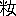

一席申し上げます。お耳慣れました西洋人情話の
外題を、
松の
操美人の
生埋とあらためまして…これは
池の
端の
福地先生が口うつしに教えて下すったお話で、
仏蘭西の
侠客が
節婦を助けるという趣向、原書は
Buried a life という書名だそうで、酔った時はちと云い
悪い外題でございますが、生きながら女を
土中に
埋め、生埋めに致しましたを土中から掘出しまする仏蘭西の話を、日本に
飜して、地名も人名も、日本の事に致しましただけで、
前以てお断りを申さんでは解りませんから、申し上げまするが、アレキサンドルを
石井山三
郎という
侠客にして、此の石井山三郎は、
相州浦賀郡東浦賀の
新井町に
 船問屋
船問屋で名主役を勤めた人で、事実有りました人で、明和の頃名高い人で、此の人の身の上に
能く似て居りますから、此の人に
擬え、又カウランという美人をお
蘭と名づけ、ヴリウという賊がございますが、是は
粥河圖書という宝暦八年に
改易に成りました
金森兵部小輔様の重役で千二百石を取った立派なお方だが、身持が悪くて、悪事を働きました事を聞きましたから、これを圖書の身の上にいたし、又マクスにチャーレという、
彼方に悪人がござりますからマクスを
眞葛周玄という医者にして、チャーレを
千島禮三という金森家の
御納戸役にいたし、
巴里の都が江戸の世界、カライの港が相州浦賀で、
倫敦が
上総の
天神山、鉄道は
朝船夕船に成っておりますだけで、お話はすべて
原書の
儘にしてお聞きに入れますから、宜しく
其方でお聞分けを願います。金森家の瓦解に成りましてから、多く家来も有りましたが皆散り／＼ばら／″＼になりまして、嫡子
出雲守、末の子まで、
南部大膳大夫様へお預けに成りました。粥河圖書は
年齢二十六七で、色の白い
人品の
好い
仁で、尤も大禄を取った方は自然品格が違います。
大分貯えも有りまして、
白金台町へ地面を
有ちまして、庭なども結構にして、
有福に暮して居りました。眞葛周玄と云う医者を連れて、丁度十月十二日池上のお
籠りで、唯今以て盛りまするが、昔から実に大した
講中がありまして、法華宗は講中の気が揃いまして、首に
珠数をかけ
団扇太鼓を持って出なければなりません様に成って居ります。粥河は
素より遊山半分信心は
附たりですから、眞葛の外に
長治という下男を連れて、それに
芳町の
奴の
小兼という芸者、この奴というのは男らしいという
綽名で、この小兼は
厭味の無い誠にさっぱりとした女で、芸が
善くって器量も
好うございます。それに客愛想も
好いから当時の
流行妓で
家には少しの貯えも有るという位、もう一人はその頃の狂歌師
談洲樓焉馬の弟子で
馬作という男、
併し狂歌は
猿丸太夫のお
尻という
赤ッ
下手だが
一中節を少し
呻るので、それで客の
幇間を持って世を渡るという男、唯此の男の顔を見ると何となく面白くなるという可愛らしい男で、皆様が贔屓にして供に連れて歩くという、此の五人連で
好天気でぶら／＼と出掛けました。
馬「
私は初めて来たので、尤もお
宗旨で無いからだが何うも素敵で」
ときょろ／＼する。両側は一面に
枝柿を売る
家が並んで、其の並びには飴菓子屋汁粉屋飯屋などが居て、常には左のみ賑かではございませんが、一年の
活計を二日で取るという位な
苛い商いだが、実に盛んな事で、お参りの衆は皆首に珠数を掛けて太鼓を叩きまする。
馬「斯う何だか珠数と太鼓が無いと極りが悪いようで、もし珠数と太鼓を買おうじゃアありませんか、珠数というのを」
圖「馬鹿ア云え、此の連中にそんな物が
入るもんか、
入らんぜ」
馬「それでも何だか無いと
形が極りませんから、兼ちゃんお待ちよ珠数を買うから…おい婆さん」
婆「はい／＼」
馬「あの珠数は幾らだ」
婆「はい／＼
其方はなんで三分二朱でございます」
馬「高いね、もう
些っと安直なのは無いかね、安いので宜しい、今日一日の掛流しだから、安いのが
好い、安いのは無いかい、
其方の方のは幾らだ」
婆「
此方のは白檀ですから一両二分で」
馬「ひゃア
篦棒に高い／＼、もっと安いのは無いか、
此方のは」
婆「これは
紫檀ですから二分で宜うございます」
馬「まだ高い／＼、おいほんの間に合せにするのだから」
婆「そんなら梅と桜に遊ばせ」
馬「それは安いかい」
婆「六百文でございます」
馬「妙々梅と桜で六百出しゃ気儘か、宜しい…
皆様先へ入らっしゃい…じゃア婆さん
此金で」
婆「
生憎お釣がございません、お気の毒様で、何うかお
端銭がございますなら」
馬「じゃア斯うしよう、お参りをして来るからそれ迄に取替えて置いてお呉れ」
婆「はい
畏まりました」
と
婆は金を受取り珠数を渡します。馬作は珠数を首に掛け、
馬「そんなら婆さん
屹度頼んだぜ、さア
此奴が有りゃア大威張だ、時に兼ちゃん何うです大変な賑いですねえ、今日のお賽銭は
何のくらい上りましょう、
羨しいね私もお
祖師様に成りてえ、もしあんな別嬪なぞに拝まれてね」
兼「馬鹿アお云いな勿体ない」
馬「さア来た／＼」
と本堂に上り柏手をポン／＼。
馬「いや柏手じゃア無かった
粗忽かしくッて
宜い、南無妙法蓮華経／＼／＼
南ア
無妙ウ法蓮華経もし
一寸様子が
好いじゃアありませんか別嬪ばかりずうっとさ、色気の有る物にゃア仏様でも
敵いませんね、女がお参りに来なくっちゃアいけません、何うも鼻筋の通った口元の締った
所は
左團次に似て、
顋の斯う…
髪際や眼の
所は故人
高助にその儘で、
面ざしは團十郎にすっぱりで、あゝありゃア
先刻遇った」
兼「何を云ってるのだえ騒々しいねえ」
馬「何さお祖師様のお顔の事さ」
兼「お祖師様のお顔に
先刻遇ったかえ」
馬「いえ何さ…
扨忠二もお蔭様で一度にふッ切りまして漸く歩けるように成りましたから、お礼に
一寸是非上らなくッちゃアならんと申しましたが、
生憎今日はお約束がございまして、それで
私が
言伝を頼まれて参りました宜しく申し上げて呉れと申しました」
圖「これ／＼馬作何を云うのだ」
馬「いえさ、
私の友達がお祖師様の
御利益で横根を吹っ切りましたから、其のお礼のことづかりを云ってる処で」
皆々「アハヽヽヽ」
これから
元名村の所へ来ると
丹波屋という茶漬屋がありますが、
此処も客が一杯で
彼れから右へ切れて、川崎へ掛る石橋の所、
妻恋村へ出ようとする角に
葭簀張が有って、其の頃は
流行ました麦藁細工で角兵衛獅子を
拵え、又竹に
指た柿などが弁慶に

してあります。
床几には
一寸煙草盆があって、店の方には
に
捻鉄松風に
狸の
糞などという駄菓子が並べてございます。唯今茶を汲んで居る娘は年が十八九で、眼元が締り、色くっきりと白くして
豊頬の愛敬のある、少しも
白粉気の無い実に
透通る様な、是が本当の美人と申すので、此の娘が今
襷掛で働いて居ります、
余り美しいから人が立停って見て居る様子。
馬「もし旦那
一寸御覧なさい、素晴しい別嬪で、御覧なさいあの何うも前掛などが垢染みて居るが何うも別嬪で」
圖「成程是は美人だ」
馬「
木地で化粧なしで綺麗だから、何うも得て何処か悪い
所の有るもんだが、こりゃア
疵気なしの
尤い玉で」
周玄は中々の助平だから先刻から
途々女を見て悦んで居る所へ、
馬「先生何うです
彼の娘は見事じゃアありませんか」
周「はゝア
成る／＼いやこれは美人、こりゃア恐入った
代物だ、もし
彼の床几に腰を掛けてる客ね、茶は呑みたく無いが、あの娘を見たい計りで腰を掛けて居ますわ、実に古今無類の
嬋妍窈窕たる物、正に是れ
沈魚落雁閉月羞花の
粧いだ」
馬「はゝ
当帰大黄芍薬桂枝かね、薬の名のような
賞め方だからおかしい、何しろ
一寸休んで近くで拝見などは何うでげしょう」
皆々「それがよかろう」
馬「はい御免」
娘「入らっしゃいまし」
（先から居る客）「こりゃア大きにお邪魔を致しやした、どれ出掛けましょう」
娘「まア
御緩りと遊ばしまし左様なら有難う」
馬「旦那
御覧じろ今の三人
連は顔附でも知れるが
皆な助平
連で、
此家の娘を見たばっかりでもう煙草入を忘れて
往きましたぜ」
圖「そりゃア困るだろう、返して遣んな」
馬「返せたッて此の人込の中で知れやアしません、へゝゝゝこりゃアお祖師様から
私への授かり物で、有難い、いえさ、
向でもこの人込の中だから気が附きゃア仕ません、忘れて居ますわ」
と懐の中へ入れる。
圖「止せといえばよ、手前お祖師様の
罰が当るぜ、止しなよ」
と云う所へ前の客はきょろ／＼
眼で遣って来まして、
客「只今
此処へ煙草入を忘れましたが
後で気が附きましたので、もし此処にゃア落ちていませんでしたか」
馬作は
不性無承に懐から煙草入を出しまして、
馬「はい今
追懸けて返して上げようと思って居たが、是ですか」
客「へいこれでございます、有難うございました、いえも詰らん煙草入ですが途中で煙草が無いと困りますから、左様なら有難うございます」
とずいと往ってしまう。馬作は
後で口を明いて
向を眺めて、
馬「あゝあれだ、取りに
来ようが
余り早い取りに来ようだ」
圖「
狡い事をするとつまり損をするぜ」
馬「損をするってえ旦那是迄
私は何にでも損をした事はございません、そりゃアもう、からッきし酔ってお座敷を勤めてもね、物を忘れた事はありません、そりゃアもう
其処らに有る物を何でも拾って袂へ入れてね、お肴でも何でも構やア仕ません、それだから
家へ帰るとね
何時でも手拭の八本位袂から出るので、そりゃア実に
慥なもので…いや待てよ…あゝ
珠数の
釣を取るのを忘れた」
圖「はゝゝゝそれ見ろ、
直に
罰が当った」
馬「いや
忌えましい、時に
兼ちゃんは何うしたろう、まだ来ねえ、だが旦那あの
妓ぐれえ
買喰の好きな妓はありませんぜ、
先刻も大きな樽柿と
蒸し芋を両方の手に持って、歩きながらこう両方の
喰競べを
為ながら…あゝ来た／＼…兼ちゃあん此処だ／＼、あんまり遅いから待って居たので」
兼「おや
左様、今頼まれた物を買ってる
中遅くなったの」
馬「頼まれ物だと、なんだ串柿かね、おい
姉さんお茶をおくれ」
茶碗も
沢山はございませんから、お客の帰る傍から其の茶碗を洗ってしとやかに茶を汲んで出す。
娘「貴方お茶をお上り遊ばせ」
と出すのを見ると元小兼の
主方の娘で、本多長門守様の御家来岩瀬
某と申し、二百石を頂戴した立派な所のお嬢様で何う
零落てこんな
葭簀張に渋茶を売って居るかと、小兼はじっと娘の顔を見詰めた切り、暫くは口もきけません。
兼「お嬢様まア何うなすった」
娘「兼や誠に面目次第も無い、お
母様と私と一昨年からこんな
業をして」
兼「ほんにまアねえ、
私も御存じの母が亡くなりまして其の亡くなる前にも、何うぞして入らっしゃる所が知れ無いかと申して、何うか尋ねて御恩に成ったお礼を申してと、もう
此方に斯うやって入らっしゃる事が知れゝば、及ばずながら
疾うにお力にも成って上げましたものを、もう
此方に入らっしゃるとは知りませんもんですから…本当にまア
好く……馬作さん何だって勿体ない、お嬢様にお茶など戴いて
好い気になって、
彼方へお出でよう」
馬「だって茶店の姉さんに
此方から茶を汲んで出す奴が有るものか」
兼「こりゃア私の御主人様だよう」
娘「お
母様兼が参りましたよ、
一寸お逢い遊ばせ」
破れた二枚屏風の中に年齢五十五六の老母、三年越し喘息に悩みこん／＼咳をしながら、
母「兼や誠に暫く」
兼「御新造様誠に御無沙汰致しました」
母「まだお前が十五六の時分に逢った切りで、それから三年振で今日逢うと、
一寸見ては話も出来ない位見忘れる様に大きく成ったのう、人の噂に大層働きの
好い芸者になったとは聞いたが、お前は一体親孝行で母を大事にしたが、旦那様もお前は感心だ、あゝいう芸者などには似合わぬ者とお
誉めなすったが、是も孝行の徳だ、私は又
斯んな姿になるまで
零落ました」
兼「もう唯今お嬢様にも
左様申すので、
何うかして
何処に入らっしゃるか知れ無い訳もあるまいと尋ねましても何うしても知れませんので、
慥か
何時ぞや
三田に入らっしゃる様子を聞きましたが」
母「三田の三角の
所の詰らない
所に
引込んで、それから
此方へ
便って来て、誠に私も三年越し喘息で、今にも死ぬかと思うが死なれもし無いで、早く死んだら
娘にも
却って楽をさせる様に成ると思って居るばかりで、此の節
此方へ来て麦藁細工を夜なべに内職して、夜寝る眼も寝ずに
娘が大事にしてくれるから、それ故私も
斯うやって命を繋いで居るばかりで、お前に
遇っても何一つ遣る事も出来ないで」
兼「何う致しまして飛んだ事を、
私ももう何です、有難い事に皆様が
贔屓にして下すって、
明日ももうお約束でいけませんが、
明後日は
屹度此方へお尋ね申します、お力に成るという訳にも参りますまいが、母の遺言もございますし、何うぞ気を落さずに気を
確りとなすって居て下さいまし、これは誠に少しばかりですが」
と
合切袋から小粒を二つばかり出しまして、
兼「これはほんの
私の心ばかり何うか何ぞ
召上物でも」
母「そんな心配しないでも
好い、私はお前に何ぞ上げようと思って居るに
却って貰っては」
兼「いゝえほんの心ばかりで、
生憎今日は持合せがなんですから又出直して参ります、本当に
能くねえ斯んな
所にお住いで」
馬「兼ちゃんお出掛に成りましたよ、
行くよ」
兼「先へお出でよ、
直に
行くから」
名残り惜しいから何かぐず／＼して「
何れ又」と小兼は出掛けます。娘も見送りながら
葭簀張を出ようとすると、川崎道から参りましたのは相州東浦賀の名主役石井山三郎で、連れて参った男は西浦賀の
江戸屋半治、ちょっと
競肌な男で、これは
芳町の小兼と
疾うより深い中で、今は其の叔父の銚子屋へ預けの身の上、互に逢いたいと一心に思って居るところ、
兼「おや半ちゃん、おや旦那誠にお久し振、何うしなすったか
一寸御機嫌伺に上りたいと思っても船が嫌いなもんですから、
此処でまアお目に懸るとは本当に思い掛けない訳で」
山「実に此処で
遇うとはなア、兼公、半公もお
前に逢いてえだろうが出られねえ首尾で、今日は漸く暇を貰って出て来たが、直ぐお
前の
所へも
往けねえというのは何分世間を
憚る訳で」
兼「まア何でも
好い、嬉しいねえ、此処で旦那にお目に懸るとは本当に馬作さん
御利益で」
馬「さて旦那誠に暫く、もし早速だが聞いてお呉んなせえ、兼ちゃんはお宗旨では無かったのを此の節半ちゃんに逢わして下さいッて、それからの信心でね、今日もお参りに
往くから一緒に
往こうとッて兼ちゃんのお供で」
山「そりゃア
好いがお客が先へ往った様子だ、早く
往きねえ」
馬「なアに
彼れは二三度遇った客で、なにさ一向訳の分らん奴で、途中で落合ってはッ
直さまお供という様な訳ですから、此処で旦那にお目に懸れば
直に馬の
乗替えお客の
乗替えてえ奴で、実に此処でお目に懸るたア
有難えね、もし今もね兼ちゃんがお祖師様を拝むのを傍で聞いてましたが、あの混雑する中で半ちゃんに／＼半ちゃんに／＼というのが
能く聞えるのでこれは何うしても
是非両方からお賽銭を取るので、旦那今日はずうっと川崎泊りでしょう、今夜は藤屋へ泊って半ちゃんに逢わして遣って下さい」
と馬作はのべつに喋って居ります。山三郎は其の話を聞きながし、心ともなく今小兼の出て来た
葮簀張の中を見ますると十八九の綺麗な娘、思わず驚きまして、
山「美しい娘だのう」
兼「旦那あれは私の
旧の御主人様ですから、お願いで、何うぞ休んで
沢山お茶代を置いてッて下さい」
と半治と二人を家の中へ突込む様にして、馬作を連れて出て往って仕舞いました。
山「
能く慣れない事が出来ますね」
娘「はい誠に慣れませんで、お客様へ前後して間違っていけません」
といううち屏風の内でこん／＼こん／＼咳入りまして、今にも死ぬかと思う程に苦しく見える喘息で、娘はお客にも構わず飛んで
往きまして、撫でたり胸を押えたり介抱する様子を、山三郎は見て居りましたが、孝心
面に現われてなか／＼浮気や
外見でする介抱でございません。
山「成程此の介抱は容易に出来ない介抱だ、感心な娘だのう半治、客にも構わず夢中になって母親を一生懸命に看病するが、あれはなか／＼出来るもので無い」
と
頻りに感心して見て居りまする。
山三郎は娘の老母を看病する
体を感心して見て居りましたが、咳も少し止った様子。
山「姉さん
治まったかえ」
娘「はい有難うございます、もう少し立ちますと
治ります、もう
恟り致しました」
山「さぞお
母さんはせつのうございましょう」
母「誠に失礼でございますが、お客様を置きまして介抱いたしますが、もう咳込んで参りますと今にも息が止るかと思いますくらいでございます、寒くなりますと昼夜に四五
度ぐらい咳込みますから」
山「さぞお困りで有ろう、
併し感心な娘御で、お前さんは
好い子を持ってお仕合せで」
母「はい、もう此の
娘の手一つ計りでございます、是から又寒くなりますと、夜分寝ずに咳きますので誠に
堪えかねます、
寧そ
一ト思いに死んだら此の
娘も助かると思いますけれども、死ぬにも死なれませんしねえ
貴方」
山「そんな弱い気を出してはいけません、何か
外に別段親類も何も無いのかね」
母「はい」
山「唯お前さんと此のお
娘さん
切かね、私は田舎者で相州東浦賀の者で、小兼に聞けば
能く分りますが、入らざる奴と思し召すかは知りませんが、年も
往かん娘御が
彼の介抱をなさる様子、実に孝心で、私は始めてお目に懸ったが、中々親孝行という事は出来ないもので、
心底から感心しました、真実の処を申すが、女ばかりで別に親類もなく相談する処も無くってお困りの節は、
見継いで上げますから、小兼に話して手紙の一本も
遣しなされば
直に出て来て話相手にも成りましょうから、お心置なく小兼にまで
一寸言伝をなさるよう」
母「有難うございます、御親切様に、
彼の母は
私共へ勤めて
実銘な者で、それも亡なりましたそうですが、それでも彼が芸者とか何とかで母を養いまして、商売柄に似合わない親切者で、何うか
贔屓にしてお
遣り遊ばして」
山「誠に少ないがお
母さんに
此金で何ぞ
温かい物でも買って上げて」
と紙入を出して
萠黄金襴の金入から取出しました、其の頃はガクで入って居りますから、何十両だか勘定の分らん程ざくりと
掴出して
小菊の紙に包み、
山「
少許りですが、もう行きますからお茶代に」
と出して出掛けまする。
娘「これはまア沢山に有難うございます、もしお
母さん兼がお茶代を心附けて呉れましたから、
彼の方が沢山置いてって下さいました、大変掴んで」
母「
左様かえ、お前が私を孝行にするから御祖師様の
御利益で此のお
銭も」
と開けて見ると中は
金で十両
許り、其の頃の十両ですから
恟りして
母「おやまアお金だよ」
娘「ほんとにまアこんなに沢山、御親切な方ですねえ、
彼様に仰しゃって、浦賀の者だから手紙をよこせとまで仰しゃって有難い事ですねえ、まアお
母さん少し落着いたらお粥でもお上り遊ばせ、どれお
夕飯の支度を
為ましょう」
と娘は右の金を神棚へ上げ、その
中暗くなるから
彼方此方片付けるうちぽつーり／＼と降出して来ました。
日癖の
所為か、今晴れたかと思うとどうと烈しく降出して来て、込合います往来もばったりと止りました。娘は
辺を片附けようと思うと縁台の上に
萠黄金襴の結構な金入が乗って有るから、
娘「おやお
母さん大変な事を為すった、あの
先刻沢山お心附を下すった旦那様が、お金入を忘れて入らっしゃいましたよ、中には
余程お金が有りますが
嘸お困りでございましょう、
彼の方の事ですから外にもお貯えはありましょうが、兎に角
私がお宿迄お届け申しましょう」
母「それでもお前、お宿は浦賀だと仰しゃったが」
娘「いえあの今夜は川崎の
本藤へ泊るからとのお話を聞きましたから、小兼も
慥かそこへ
往く様子ですし、ひょっとお
差支でも有るとお気の毒ですから、ちょっくり川崎まで行って参ります、それに雨は降るし日は
暮るし、もうお客も有りますまいから心配しないで留守をして居て下さい、少しの間に往って来ますから」
と母の枕元に手当をして、
両褄取って、小風呂敷に萠黄金襴の金入を包み、帯の間へ
んで戸を開けて出ようとすると、軒下に立って居る
武士、雨具が無いから
素跣で其の頃は雪駄でありますから、それを腰に
んで戸に
倚り掛って居る。
武「これはお邪魔で、なに拙者雨具を持たんで少し軒下を拝借して」
娘「それはお困りさまで、中へ入ってお休み遊ばせ」
武「
姉さん此の降るのに
何処へお出でだ」
娘「
私はあの六郷の方まで参るので」
武「六郷の方へ
行くのなら幸いだ、拙者もこれから参るのだから一緒に
行こう」
娘「
私は急ぎますから」
と不気味だからそこ／＼に挨拶して
行き過ぎますと、
武士はピシャ／＼供の
仲間と一緒に跡を追って来る。
此方は
弥々変だと思いますから早足にして、あれから
堤方を離れて
道塚へ出て、
徳持村の
霊巌寺を横に見て
西塚村へ出る畑中の小高い処、
此方は
藪畳の屏風の様になって居る草原の処を通り掛ると、「
姉さん待ちな」と
突然武士が
後から
襟上を
掴むから「あれー」と云う
中に足首を取って無理に
藪蔭へ
担ぎ込み「ひッひッ」というを
引□し、
仲間は此の
間に帯の間に
んで有りました
彼の
金入を
引奪り「是を
盗られては
私が」といううち
武士は□□って
怪しからん振舞をしようとする処へ通り掛った
一人は
粥河圖書で、
傍から見兼て飛んで
入り、
突然武士の襟上取って引倒し、又
仲間をやッと云って放り出した。
仲間は
仰向になって見ると驚きました。
傍らに一
本の品格の
好い男が
佇んで居るから少し
怯れて居ました。
圖「何だ
手前は、何をする、斯様なる
怪からん事をして何と心得て居る、何だ此の女を
辱めんとするのか、捨置き難い奴だが
今日は信心参りの事だから許す、
行け／＼」
仲「なんだ、
行けとはなんだ、人をいきなり投げやアがッて、此の野郎叩ッくじくぞ」
と云ううち今一人の
武士は引抜いて切って掛る、
無慙に切られるような圖書でない。処へ眞葛周玄が駈けて来るという、
一寸一息して
後を申上げます。
西塚村で孝女お蘭が災難に
遇います処へ、通り掛った粥河圖書が、
悪武士を取って投げまする、
片方はなか／＼きかん奴で、大胆不敵の奴で長い刀を引抜いて切って掛る、切られるようなる人で無いから、粥河圖書は短かな二尺三寸ばかりの刀をもって、
胸打にしてどーんと打込むと、
彼の者は切られたと思い、腕前に恐れてばら／＼／＼下男諸共転がるように、
田甫畦道の嫌いなく逃延びる。所へ、少し
後れた眞葛周玄は駈付けて、
周「
何ういう訳か分りませんが、まア
宜い
塩梅に此の
娘に
疵が付かないで、おや此の
娘は
先刻茶店に出て居たあの石橋の
際の、何うしてまアこんな処へ」
娘「はい有難うございます、思い掛なく旦那様が
好い所へお通り掛りで、厭な人が
後から附いて来て川崎まで道連になると申しますから、
私はぎょっとして逃げようと思いますと、出しぬけに
後から抱付かれ、殺されようとする処をお助け下すって誠に有難うございます」
周「まア／＼怪我が無くって
宜かった
併し何か取られはせんかえ」
娘「はい誠に済まない事を致しました、
私の店へお休みなすったお方が忘れ物をなすって、それをお届け申しましょうと川崎の藤屋まで参ります途中で、お金の入って有る物を只今の悪者が帯の間から持って逃げました」
周「金入には多分に入って居たのかえ」
娘「はい」
周「そのくらいなものはまア
宜い、金ずくには替えられないお前の身に怪我さえ無ければ
宜しい、それは先方へ話して金高が分りさえすれば何うにでも成る
此処を通り掛ってお助け申した以上は…何さそれは多分でも有るまいから、此処においでになる
大夫が
如何様とも致して進ぜられる、何しろお
家まで送ってからの事、それからお話は
家へ往って内訳話に致しましょう、ねえ大夫それが
宜いじゃア有りませんか」
圖「それも
左様だ、それじゃア
宜しき様に」
周「それは僕の胸中に心得て居りますから」
と両人が娘の
後先に附添って茶店へ帰って来ました。
娘「お
母さん飛んだ災難に逢って帰りました」
母「なに災難に逢ったと、どんな災難に、だから云わない事じゃア無い」
娘「
悪武士に
掴まって
私はもう殺される処を、通り掛りの旦那様に助けられて、そして其の方は
先刻お休みなすったお方で」
母「おやまア飛んだ事、
貴方何うも何ともお礼の申し様もございません、見苦しゅうございますが
何卒此方へ」
周「はい／＼さア大夫
此方へ、
扨私は先刻此処へ休んだ者で、処が
此方のお嬢様が
強□に遇おうという処を
斯うやって計らずもこうお助け申すというも何ぞの縁で、お
母さん私は眞葛周玄という無骨者で、此の
後は
何卒別懇に、扨実は先刻
此方へお寄り申して、小兼とのお話を段々承ったが、あの小兼は大夫が長らくの間の
御贔屓で、それから様子を聞きましたが、どうか前は本多長門殿の御家来だそうで」
母「はい、申すも面目ございませんが、元は岩瀬と申し、少々はお高も戴きました者でございますが、金森様の事に付いてお屋敷は不首尾となり、殿様へ
種々御意見を申し上げ、
諫言とかをいたしたので重役の憎みを受け、
御暇になりましたが、なんの此の屋敷ばかり日は照らぬという気性で浪人致し、其の
後浪宅において切腹いたし、
私もそれから続いての心配が病気になって」
周「へゝえそれははやお気の毒な訳で、
就ては嬢さんをお助けなすった大夫は、身柄は小兼にお聞きになれば分りますが、
前々は今お話しの金森家の重臣で、千石
余をお取り遊ばしたお方で、
主家は
彼の通りの大変で、余儀なく只今は白金台町にお浪宅ではありますが、お貯えが有って、何一つ御不足の無いお身の上で、お庭なぞも手広く取って
極お気楽のおくらしですが、以前と違いお
手少なで、只今
以て
御新造が無いので何うか一人
欲いと仰しゃるので、僕も
種々お世話を申して、
好いのをと思うが、
扨何うも長し短しで丁度好いと云うのが無いもので、今の身の上は町人と
交際もする身の上だがまさか町人と縁組をするも
嫌だし、何か
手捌きも出来るような柔和な屋敷者で、遊ばせ言葉で無ければと仰しゃる、そうかと云って
不器量でもいかんし、誠に僕も
殆ど閉口いたす、処が先刻此の店へ腰を掛けて御息女を見られた処が、
殊の
外御意に
入って何うかあれをと仰しゃる、
尤もお
母さんぐるみお引取申しても宜しい訳で、実は小兼に
一寸其の橋渡しを頼もうと思っているうち、他に客でも出来たか逃げたので、甚だ失敬だが僕が
打つけにと立戻って来る途中で、前の始末で助けて上げたは、是も全く御縁だから、
何卒お母さん得心して
速かに承諾して下さい、僕が
媒介する、お
聞済なれば誠に満足で、何うか
平に御承知を願いたい」
母「はい、
思召しの段は誠に有難うございますが、
何うも只今の身の上では、貴方方の様な立派な処へ参られもしませんし、それに
身丈こそ大きゅうございますが、誠に子供の様でございますから、世間知らずで中々もう立派なお
家の
御新造になるなどは出来ませんので」
周「あれさ、そんな事を仰しゃっても其れはいかん、貴方のお目から
左様でもあろうが、
其処がさ、それ、御相談で段々習おうよりは慣れろで、下世話でも
能く云う事で習って出来ない事はない、何でも
為れば出来ますから」
母「有難うございますが、此の事ばかりは当人が得心しませんでは親の一存にもゆきませんから、
篤と考えて娘とも相談の上御挨拶致しますから、四五日何うかお待ちなすって」
周「四五日などと云って、承われば置忘れた人の金入とかを届けようとて、
途で災難に
遇って、それを
向へ掛合って上げようと心配して居るくらいな所」
母「お前何かえ、
彼れを盗まれたのかえ」
娘「はい、飛んだ事を致しました、
担がれて
行く時、帯の間に
んで居りましたのを、
仲間体の者が手を入れて抜出して持って
往きました、何うしたら
宜うございましょう」
母「えゝ其れを
奪られては」
周「それも大夫が其の金を
向へ
償って、さのみ大した事でも有りますまいから、それを
此方で
整然として、いえさ誠に失敬だが、それは大夫の方で
何の
様にも致されようから、そんな事は心配なしに、相談は早いが
宜しい、何でも命を助けた恩人が頼む事だから、貴方の方でも
嫌とは仰しゃれまい、
殊に結構な事で、此の上も無く
目出度い事で、何うか
早々結納を
取交わして、いえも善は急げで早い方が
宜い、早いがよろしい、妙だ、先刻菓子を包もうと糊入を買おうと思ったら、
中奉書を出したから買っといたが、こゝに五枚残って居る、妙だ、
硯箱がある、早速書きましょう、えゝ目録は
何で、帯代が三十両、宜しい、
昆布、
白髪、扇、
※［＃「魚＋昜」、U+9C11、22-2］、
柳樽宜しい」
と無闇に書立て、粥河圖書の眼の前で名前を書いて
彼方へ
此方へと
遣取りをさせました。母親は恩人だから厭とも云われず、娘は唯もじ／＼して居る。周玄は結納を
取替わし無理無体に約定を
極めて、
周「兎も角明朝僕が又上ります」
と独りで承知して帰りました。
扨てお話は二つになりまして、川崎の本藤にては山三郎半治小かね馬作の四人が一つの座敷で、
馬「何うも今日ほど不思議で、何だか嬉しくって成らねえ
事ア
無えね、もし旦那忘れもしない六年
跡のお祭で、兼ちゃんが思い切ってずうっと
手古舞になって出た姿が
大評判で、半ちゃんがその時の姿を見て
岡惚をして、とうとう
斯うなったが、兄さんが固くってお
家を
不首尾て居るうち、兼ちゃんが独りで
見継いで居るなあんて、本当に女の子に可愛がられて遊んで居るなどは世の中に余り類が有りませんぜ、え、鰻、これは結構、有難く頂戴」
山「師匠相替らず
延続けだのう、どうもサ師匠の顔を見ると
自然に可笑しくなるよ」
馬「
私も貴方のお顔を見るとせい／＼しますよ、何うか
何時までもお顔を見て居てえ」
山「時に
先刻休んだ茶店の
娘の、
彼は
好い
娘だのう」
兼「
好い
娘だって貴方
彼は二百石も取った岩瀬主水様と云う
私のお
母が勤めたお屋敷のお嬢様で、お運が悪いので、殿様のお屋敷に騒動が出来て、旦那様は…半元服したような名は
何てえのですかねえ…そら意見する事は」
山「
諫言か」
兼「腹切はなんてえの」
山「切腹か」
兼「そう／＼旦那様が、その半元服をなすったもんだから、到頭あんなに
零落てしまったんですが、それでもお嬢様があゝ
遣って
彼様に親孝行をなさるんですよ、だがあんな
扮装をして入らしっても
透通るような
好い御器量で」
山「己もまだ
彼の位
好い女を見たことがねえ」
馬「新井町の旦那が見た事が無いと云うが、本当に
彼のくらいの
娘は少ねえ、
併し彼の娘の方でも旦那に気のあった筈で、十両ばかり少ねえよとざっくり置いたというから、定めし気がありましたろう」
山「師匠じゃアあるめえし金を見て気のある奴が有るものか、おゝそれで気が付いた、
此家へ祝儀を遣らなくっちゃアいかん、おい半治包んで」
と金入を出そうと思って、ふと懐中を
捜りますと無いから、
山「オヤ金入を落したか、こーと、あ
先刻彼の娘の所へ心附けた時紙入から出したが、包んで遣った
儘忘れて来た」
馬「そりゃアおいねえ事をしました、
余程有りましたろう」
山「なに
些と
計りさ、二十両も有ったろう」
馬「そりゃア大変だ、
私が取って来ましょう」
山「
宜いわ、
失る時にゃア失るから大騒ぎやって行かなくっても宜い、
彼ア云う親孝行の
娘だから有りゃア取って置いて呉れる」
馬「そりゃア
左様ですが、親孝行でも兼ちゃんの前じゃア云い
悪いが人間の心は変り
易いから」
山「お前とは違うよ」
馬「それでも知慧附ける奴が有りますからねえ」
山「
宜いよ、まだ
掛守の中に金が有るから遣って呉れ」
と
総花でずらりと
行き渡ります。
山「さア今夜は早寝にして、兼公は久し振だから半治の脇へ寝かして、師匠、お前と己は
此方へ寝よう」
と是から
襖を
閉って障子を締め、
夜具を二つ
宛並べて敷く。
山「おい
其方の床は離さねえでも
宜い、師匠何をして居るのだ」
馬「へい、
襖を
閉切っていきれるから
斯う枕元に立って立番をしているので、これから縁側へ
整然とお湯を持って
行くんだ、何うです今夜は
一と
役二
分宛と極めましょう」
山「そんな慾張を云わねえで早く来て寝て仕舞いねえ」
馬「何うせ今夜は
眠られねえね」
とぴしゃりと
襖を
閉切ります。
此方は三年振で逢って、
兼「本当にまア、何うしてまア、
好く来てお呉れだねえ」
半「己も
茫然して銚子屋に預けられて居るが、もう半年も辛抱すれば新井町の旦那が兄さんに話をして遣るから、少しの間辛抱しろというから、それを
楽みに世間に見られねえ様にして居るのよ」
兼「私の方からは、必ず手紙で
何時幾日に何うすると、ちゃんと極めて上げるのに、
稀に手紙の返辞の一本ぐらいよこしても
宜いじゃア無いか」
半「銚子屋のは
頑固いからそう／＼出歩く訳にもゆかず、そりゃア己だっても心配はして居るけれども、
左様はいかねえ」
兼「本当に男と云うものは
情のない者と思って居るが、情のある人てえものは
凡そ無いもので」
半「そりゃアお
前の厄介になって
悉皆小遣まで貰って遊んで居るんだから、
些とは己だって義理も人情も知って居るから、己が世に出るようになればお
前にも芸者は
廃めさしてえと思って居る」
兼「私も年は取るし、
彼是と考えると蝋燭の
心のたつ様で、
終にゃア
桂庵婆に
追遣われるように成るだろうと
大抵心配さ、愚痴をいうようだがお
前の身が
定らないではと
極りを付けようと思っても、船でなければ行かれないし、案じてばっかり、本当にお前義理が悪いよ」
馬「旦那、こりゃア寝られませんぜ」
山「大変な
処へ来たなア」
馬「
御尤もで、実に恐れ入った」
山「黙って寝た振をして居ねえ」
馬「どうも寝られませんな、
斯ういう事には時々出合いますが一番寿命の毒だ、まア旦那お
寝みなさい」
と
一際蕭然とする。時に隣座敷は
武士体のお客、降込められて遅くなって藤屋へ着き、是から湯にでも入ろうとする処を、廊下では二人で
窃と
覗いて居る。
男「貴方そう仰しゃるが、これが間違になるといけませんぜ」
田舎者「宿屋の番頭さんは物の間違にならん様にするが
当然で、
私が目で見て証拠が有るので、なに間違えば
好え、
私が
脊負って立つ」
番「そんなら
屹度宜うございますか」
田「えゝも
好えちゅうに」
番「御免下さい」
と宿屋の番頭は障子をさらりと開けて、
番「お
草臥様で」
武士「大きに厄介で」
番「先程は沢山お茶代を有難うございます、
主人は
宿内に少し寄合がござりまして只今帰りましたので碌々お礼も申し上げませんで、えー少々旦那様に
伺いますが、
此所に入らっしゃるお方はお相宿のお方ですが、お荷物が
紛失致しまして、何ういう間違か貴方の床の間に有ります其のお荷物が
私のだと仰しゃるので、
判然とは分りませんが念の為に改めて見たいとこう
被仰るので、誠に失礼ではございますがお荷物の処を」
田舎「へい御免なせえ、お前様だ」
武士「何だと」
田「お
前様ア丹波屋で
飯アたべて居たが、雨たんと降らねえうち段々人が出て来たが、まだ沢山客が
無えうち
己と此の
鹿の
八と
斯う
斜けえに並んで飯たべて居ると、お前様ア斯う並んで酒え呑んで、お前様ア先い出るとき
緩りと食べろとって会釈して、お前様ア忘れもしねえ、なんとお
武士様でも身柄のある人ア違ったもんだ、
己のような百姓に
傍へ参って
緩りてえ挨拶して行くたアえらいねえと噂アして、お
前さま帰って仕舞った
後で見ると置いた
包が
無えから後を
追掛けてお
前さまア尋ねたが、
混雑中だから知れましねえ、漸く
後を追って
参りまして、
此家へ来るとお
前様足い洗って
上るところだ、
他人の荷物を自分の荷物のように知らぬ顔をして呆れた人だア」
武「
怪しからん奴だ、
慌てゝ詰らん事をいうな、これ、
手前の荷物を失ったと云うのか、これ、
能く似た物も有る物だから気をつけて口をきけ、
他のことゝは違うぞ」
田「
他の事とは違うと、とぼけたっていけねえ、あんでも丹波屋の横の座敷で
斜になって
飯ア食って居たとき、お
前緩くりとって出て往ったから、
叮嚀なお
武士だと思って
居っけが、
後に包みが
無えから
後を追っかけて
境内索ねたが知れ
無えから、まア
此家へ来るとお
前さま足い
垢れたてゝ洗って
上る所、荷物に木札が附いてるから見れば知れる、
相州三浦郡高沢町井桁屋米藏と
慥かに
四布風呂敷に白い
切で女房が縫って、
高沢井桁米と書いてあるが証拠だ
中結えもある、どうも
御人体にも似合わねえ、
他人の荷物を持って
其処へ置いて
何だ」
武「これ
如何に其の方の荷物が
紛失したとて
濫りに
他人を賊といっては済まんぞ、
苟くも
武士たる者が
他人の荷物を持って
己の物とし賊なぞを働く様なる者と思うか、手前は拙者を賊に落すか、
他人の荷物を盗んだというのか」
田「盗まねえものが
此所に有るものか、
己が
飯ア喰って
魂消て
誉めて居た
傍に置いた荷物が
無え、何より中の品物が証拠だ、麦藁細工の香箱が七つに御守がある、そりゃア村の
多治郎、
勘太郎、
新藏、
文吉、
藤治郎、
多藏、
彌五右衞門の七人に買って来て呉れてえ頼まれて、御守が七つ
御供物が七つある、それは
宜えが金が二十両脇から預かって、小さい風呂敷に包んで金がある」
武「
呆けた事をいうな、麦藁細工が七つ有ろうが、金が有ろうがそれが盗んだという証拠に成るものか、これ、番頭、これへ出ろ」
番「
私は分りませんが証拠のない詰らん事をいってお
武家様に御立腹おさせ申して甚だ迷惑致します」
田「迷惑するたって
現在此処に」
武「じゃア
手前荷物を

めさして
遣るまいものでもないが、
若し
包を
解いて中の荷物が相違致すと余儀なく手前の首を切らなければならん、武士の荷物を
め、
賊名を負わして間違った恐れ入ったでは済まんぞ、今までの失礼も勘弁し難い処だが、田舎者で分らん奴だから此の儘
行くなれば許して遣るが、
強って
めるとなれば、若し荷物相違致せば首を切るぞ」
田「切られべえ、命より大事な他人に預った物があるから、是え
失なしちゃア
私活きてる事が出来ねえ」
武「
左様なれば
めろ、相違致せば番頭も許さんぞ、さア
めろ」
と
広桟の風呂敷木綿、真田の
中結を
引解いて広げると違って居る。麦藁細工も入ってはあるが違ってある。
玩具が二つばかりに本が二三冊、紙入の
中入見たような物や何かゞ有るが皆違って居るから、
田「はアこれアはア飛んだ事を」
と百姓は
真青になって
慄えて居る。
武「さア
何うだ、拙者を賊に落して申訳があるか、もう許さんぞ、
併し
此所は
旅人宿で、当家には相客もあって迷惑になろうから、此の近辺の
田甫に参って成敗致そう、淋しい処まで
行け」
田「誠に、へい
何時の間に大事な他人に預かった金もある包を盗まれましたか、何うも風呂敷の
縞柄といい木札が附いて似て居るもんなで、
何卒御勘弁をはア
願えます。
武「勘弁相成らん、それだから前に其の方のとは違うと云うのだ、
然るを
強て強情を申し張り、
殊に命より荷物が大切だ、切られても構わんというから
めさしたのだ、さアもう許さんから
行け武士に二言は無い、番頭手前も
怪しからん奴だ」
番「だから、
私も申すので」
武「これ米藏と一緒に参ったもの、
逃支度をするな、これへ出ろ」
男「どうぞ御免なすって」
と手を突いて
詫入るを、
武士は無理無体に
引張出して廊下へ出る。田舎者は、
田「御免下さい／＼、御免さない
［＃「御免さない」はママ］ほーい／＼ほーい／＼」
と泣く。
茲へ見兼ねて出ましたのが新井町の石井山三郎、
山「お
武家様まア
暫く」
武「なんだ」
山「
私はお隣座敷に相宿に成りました者で、只今
彼所にて承われば重々貴方様の御尤もで、実に此の者共は
怪しからん奴で、先刻より様々の
不礼を申し上げ何とも申し様もございませんが、何を申すも田舎者で、預り物が
紛失致して少々
逆上て居る様にも見受けますれば、お荷物に手を附けました段は重々恐れ入りますが何うか何も心得ません者と
思召し
只管御勘弁を、此の儀当人に成り替りまして、
私がお
詫を致します、当家も迷惑致す事ですから何分とも御了簡を」
武「いや其の
許は隣の座敷にお居でのか、そして此の者の
連衆か」
山「いえ
連ではございません、手前は相州東浦賀で、高沢までは遠くも離れませんから
其等の訳をもちまして願いますので、何うか幾重にも御勘弁を」
武「お前は分りそうな人だが、今も聞いたろうが、拙者は始め許して置いたので、根が百姓の分らん奴の云う事だから黙って居たので、
然るに段々附け上って拙者が手荷物を
めさせて呉れと申すが、もし荷物を検めて違えば許さんぞと申した所が、其れは構わん、何でも二十両の
金子を拙者が盗んだに相違ないと疑われて見れば棄て
置れんで、荷物を検めさしたから
斯様に成ったので、
何卒手を引いて下さい」
山「何うかそう仰しゃらずに御勘弁を」
武「なりません」
山「これ程申しても御勘弁なりませんか」
武「
罷り成らん」
山「これお百姓、高沢町の人、お聞きの通り
種々とお詫を申してもお聞入れがないから、お前ももう何うも
詮方がない手打に成りなさい」
田「それでも何うか御勘弁を願います、情ない訳で、何分にも」
武「相成らん、さア早く出ろ」
山「
若しお
聞済がなければ止むを得ず申すが、此の荷物は貴方のお荷物ですか」
武「左様」
山「この荷物の中に萠黄金襴の金入が有るが、これは貴方の所持の品でありますか」
武「左様、手前の所持で」
山「結構な品で、この金入は世にも
稀なる
切で、
何れでお求めになりましたか」
武「これはなんで、
芝口三丁目の
紀国屋と申すが何時も出入で
誂えるのだが、
其所へ誂えずに、
本町の、なにアノ
照降町の
宮川で買おうと思ったら、
彼店は高いから止めて、
浅草茅町の
松屋へ誂えて」
山「へゝえ、裏の切も大したもので」
武「なに
好くも無い、ほんの
廉物で」
山「へゝえ、これは太閤殿下が常に召された物を日光様が拝領になって、
神君が
御帰依の
摩利支尊天の
御影をお仕立になる時、此の
切を
以てお仕立になり、それを拝領した
旗下が有って、其の切を
私方で得て
拵えた萠黄金襴の守袋で、此れを金入にしては済まん訳だが、拙者親共より形見に貰った品物だが、何うして貴方これを所持なさる」
武「それは」
山
［＃「山」は底本では「武」］「いやさ何を以て堤方村で失った金入を、何うして貴方が所持するかさア何ういう訳が承りたい」
と山三郎に問詰められて、むゝと
武士は押詰って、急に顔色を変えまする。これから掛合になりまするお話、
一寸一息つきまして申し上げます。
引続きまして、
何処の国でも悪人という者はありますもので、今
悪武士が
形の
拵えなどは上品にして、誠に
情のありそうな、黒の羽織に
蝋色の大小で、よもや此の人が悪事をするなどとは思いも寄らぬ
体で、其の上最初の掛合は
極柔かでございますから、田舎者は
猛り立って荷物を
検める様になりました。山三郎も始めはおとなしく掛合ったが聞きません。元より隣座敷で
覗いて居りましたから
包の中から出た物をよく視ると、親の形見に貰った
萠黄金襴の守袋、それが出たから
何うしてこれが貴方の手に有ると云われ、よもやそれ程の金入とも存じませんから
好加減に
胡麻化し掛けたを問詰められ、
流石の悪人も
顔色が変って返答に差詰りました。田舎者はこれを見ると喜びました。
田「誠に有難うございます、
何てえ
太え奴で、其の荷物が
己が荷物でなくっても、此の人の金入其の中へ
突込で置くからは
己が泥棒と云っても
過りは
無え、それに
己を斬るてえ
嚇かしやアがって何とも呆れ
返った野郎だ、さア出る処へ出て
白え
黒えを分けてやろう」
山「まア
宜いわ…
扨貴方は何ういう訳で
私の金入を其の包の中へ入れて、是は
他所で
購求めたなどと、
武士が人を欺き
実以て
怪しからん事だ、さア何ういう訳で貴方の物になすったか、
何処から買入れたか
篤と調べなければ成りません、又此の事は
此宿の名主か代官へでもお届をしなければ成りません」
武「誠に重々恐入った、実は池上へ参詣して帰り掛け、堤方村の往来
中で拾ったので、見れば誠に結構な金入なり、其の
遺失主へ知らせようと存じても、
彼の通りの混雑で何分分らん、遺失主の無い事
故只今其の返答に差詰ったので、実は拾ったので、何うか遺失主を調べて返したいと思って居た処、お持主が其の
許であれば
速にお返し申すのみで、何も其の儘で壱銭も中の
金銭は遣い捨てません、それが
慥かなる証拠で、何うか
何分にも此の事は御内分にお
計い下さるれば
千万有難うございます、何分にも
内済に願います」
山「全く拾ったと仰しゃるか、拾ったなら拾ったに
為ましょうが、それじゃア此の者が包を間違えても
仮んば又お前さんの懐を捜しても、
他人の物は
己の物と思って
他人を欺くような人だから此の者を切るの突くのと仰しゃる
気遣は有るまいが、
猶念のため申す、
愈々此の者をお許しなさるか」
武「尤も左様で、其の
許の仰しゃる事に
於ては
聊かも
申分はございません」
田「それ御覧なせえ、何だっても此の野郎が申分ねえなんて
先刻の
権幕はなんだ、今にも
打斬るべえとしやがって、何うもはア
私ア勘弁し
度っても
連の鹿の八どんに済まねえから、
矢張り出る処へ出ますべえ」
山「それでも悪いから
此処は
先ず此の儘にしなさい、
此家も
旅人宿で迷惑をするし、お前も向うの包と取違えたのは
粗忽で
詮方がないから、先ず此処は控えて居なさい、それを
彼是荒立って見ると事柄が面倒になるから、
私も許すから、
併しお前も預り物を
紛失して
嘸心配であろうが、幸い此の紙入に二十両
遺って有るから、お前にこれを進上するから、
遺失さん積りで向へ持って
行きさえすれば事が済むから、此処は此の儘
穏かにしないと、此の
家も迷惑するから」
田「お
前様にゃア何うして、なに其の金ア此の野郎から
貰えますわ」
山「まア私に何事も任して置きなせえ」
と山三郎は
種々に
和めて、此の場は漸く穏かに納まりましたが、
彼の
武士は
こそっぱゆくなったと見えまして、夜中にこそ／＼と立って仕舞った。山三郎は
惜気もなく二十両の金を井桁屋米藏に遣りましたが、人は助けて置きたいもので。山三郎、江戸屋半治は相州浦賀へ帰り、小兼馬作は芳町へ、
彼の田舎者二人は共々連立って高沢町へ帰りました。
扨てお話は
二岐に分れ、白金台町に間口は
彼れ
是れ二十
間許りで、
生垣に成って居ります、門もちょっと屋根のある
雅致な
拵えで、
後の方へまわると格子造りで、
此方は勝手口で、格子の方をガラ／＼と開けて這入って見ると、
中見世の
玩具屋にありそうな
家作りであります。此の日芸者小兼は早く起きて白金の
清正公様へお
詣に
行きました。一体芸者
衆は朝寝ですが、其の日は心がけて早く起き、まだ下女が
焚付けて居て
御飯も出来ないくらいの所へ、
兼「御免なさい／＼」
下女「はい、
入っしゃいまし、
何所から」
兼「あの粥河様のお
邸は
此方さまで」
下女「はい、手前で、
何方から」
兼「芳町のかねが参ったと御新造様にそう仰しゃって、誠につまらん物でありますがお土産のしるしに是を
何卒上げて下さい」
下女「左様で」
と下女が案内して奥へ通し、八畳敷ばかりの茶の間で、
片方に一間の床の間があって脇の所が戸棚になって、唐木の棚があります。長手の火鉢の向うに坐って居るのが粥河の女房お
蘭、年はとって二十一、只今申す西洋元服で、丸髷に結って金無垢の櫛かんざしで黒縮緬の羽織を
引掛けている様子は、自然と備わる愛敬、思わず
見惚れるような
好い御新造で、
蘭「こちらへお這入り」
兼「誠にまア御無沙汰をいたしまして、そして結構なお
住居でどうかして上りたいと思って
今日は一生懸命に早く起きて、白金の清正公様へお参りをして、
序と申しては済みませんがそれから上りました、本当に貴方が
此方に入らっしゃることは今まで少しも存じませんでして」
蘭「私も
一寸知らせたいと思ったけれども
種々其所には訳があって……よくまア訪ねて来てお呉れだ、何うかして私も訪ねたいと思っても勝手に出る事も出来ないで」
兼「まア元服なすって、よくお似合で、そして本当によいお
住居でまアお広くって綺麗で、桜時分は
嘸好うございましょう、そして高台で、のんびりとなさいましょうねえ、私などの
家は狭くって隣も
向もくっついて居ります、其の替り便利には、お彼岸や何かで珍らしい物が出来たり、おめでたい事で時々向う前で
遣ったり貰ったりする時は坐って居て手を出せば届きますが、
斯う云う所に入らっしっては
好うございますねえ、これは貴方詰らん物ですが
些とばかり取って参りました、ほんに貴方お目に懸ったのは丁度三年
後の池上様のお
籠りの日で、
彼の時私が
彼所を通り掛り麦藁細工の有ったのが目に付いて居ります、
葮簀張でねえ、それも彼所にあゝ遣って入らっしゃる事も存じませんで…あの御新造がお
亡くなりで…それから
此方へ入らっしったので」
蘭「
此方へ来てから
［＃「来てから」は底本では「来てかち」］一年半
許りして旦那様が
懇に御介抱して下すって、葬式も立派に出て、何も云置く事もなく私の身の上も安心して母も
亡くなったから誠に
仕合だよ」
兼「あらまア
些とも存じません、其の
後旦那様にお目に懸っても
左様とも何とも仰しゃらずに、
余り憎らしいじゃア有りませんか、そしてお寺は」
蘭「
谷中の
瑞林寺で」
兼「知らない事とてお
吊いにも出ませんで、
嘸まア御愁傷で、あなたが
此方へ入らっしって御安心になってお
亡れで、本当にまア旦那様は毎度御贔屓にして
招んで下すっても、貴方の事は今申す通り少しも仰しゃらず、漸く
他で聞いて参りましたが本当に
余りだと存じて居りました、もし
彼の時相州浦賀の石井山三郎様と仰しゃるお方がお寄りになりましたろう」
蘭「あゝ」
兼「
彼の方は浦賀で大した人で、さっぱりした
気象のよい
男達で、女などを
誉めたことのない方ですが、あなたをまア親孝行のお嬢様だって独りで誉めて居て、大概な者は気に入りませんが、貴方なら貰いたいと云って、江戸屋の半治さんという人を掛合にお
遣んなすったら、もう
此方へ御縁組になってお
引越しになったと聞き、仕方がないと云ってそれ
限りになって」
蘭「かねや本当に
彼の方は
情深い方で、私も
彼方へ縁付かれるようなれば
宜いと思って居たが、是には
種々義理があって、
彼の方が私に沢山心付を下すって、其の時金入をお忘れで、それを私が持って藤屋まで参る途中で災難に
遇って、道で助けられた其のお方が私の旦那で、今では何不足なく何んでも
彼でも
欲いものは買って遣るからと仰しゃるから安心して居るわ」
兼「それはまア結構で、本当にまア旦那様はあなたを可愛がって、
左様して御辛抱で、ちゃんとお宅へお帰りでしょう」
蘭「それについて私も
種々心配して居る事があるので私の様な
不束者で
御意に
入らぬか知れないけれども、去年の十一月からさっぱりお宅へお帰りがないの」
兼「お宅へお帰りがないと云って
何処へ入らっしゃいました」
蘭「私には鎌倉道に竹ヶ崎と云う所があって、山の
半途で前が
入海で
宜い所が有ったから、
何うせ
毎年湯治に
行く位なら、景色も空気も
宜いから、
其処へ普請をして遣ろうと云って、其の普請に掛って入らっしゃると云うけれども、去年の暮からさっぱり手紙も
遣して下さらず、
此方から手紙を出し
度も女ばかりで
左様もならず、何か
外に出来でもして私が
嫌になって万一見捨られた時は親類も身寄も何もないから
行く所もなく、兼や何うかお前を力に思うよ、私はお前に逢いたいと始終思っていたわ」
兼「呆れますよ、本当にまア貴方の様な美くしい結構な御新造様がお一人いらっしゃれば御辛抱なさりそうなものを、去年の十一月からお帰りにならないてえのは何てえ事でございましょう……其のお宅というのへ入らっしゃいましたか」
蘭「まだ往っては悪い」
兼「入らっしゃいまし悪い事がありますものか」
蘭「だって知れないものを」
兼「構わずに入らっしゃいまし、
屹度極りが付いて
斯う云う者と斯うと云う訳じゃありません、詰らん者を集めて
浮れているのでしょうから、出し抜けに往って
玩弄箱をひっくりかえしたような芸者を揚げている所へ、お
娯みと云って
引ずり出してお
遣なさい、貴方は人が
好いからいけません」
蘭「大層遠いそうで」
兼「私はお祭の時往って知っております、竹ヶ崎と云うのは
法華寺のある所で、舟で
行くと
直です。入らっしゃい」
蘭「そう、舟は恐かないかね」
兼「なに今時分は北風が吹くと船頭に聞いておりますから
直に
往かれます、そして
追風で
宜うございます、
高輪から乗ると造作はございません、入らっしゃいましよ／＼」
蘭「
往き
度いが道も知れないから」
兼「入らっしゃいよ私が御一緒にお付き申しますから」
蘭「かねが往って呉れゝば」
兼「入らっしゃいまし」
と無理に勧めるのは、小兼は江戸屋半治に逢いたいからで、お蘭もそんなら
往こうと、下女へ話して急に着物を着替え小紋縮緬の変り裏に
黒朱子に
繻珍の帯をしめて、丸髷の
後れ髪を
撫あげ、白金を出まして、高輪の
湊屋と云う船宿から
真帆を上げて参りますと、船は走りますから横須賀へ着きましたのは丁度只今の二時少々廻った頃、それから
多度村へ出てなだれを下りて
往くと鎌倉へ出る、
此方へ参れば
倉富へ出る、鎌倉道の曲り角に井桁屋米藏と云う饅頭屋があって
蒸籠を積み上げて店へ邪魔になる程置き並べて、亭主は
頻りに
土竈を
焚付けて居る、女房は
襷掛で、粉だらけの手をして頻りに饅頭をこねて居る。
兼「
一寸もし少々物をお聞き申します」
男「お掛けなさえまし、
此方へおかけなさえ」
兼「あの竹ヶ崎へ参りますには」
男「竹ヶ崎は
此方イずいと往って突当って左へきれて、構わず
南西へきれて這入ると宮がある、其の宮の
前に
新浄寺と云う寺がある、
其処を
突切って
往くと
信行寺と云うお寺様アある、それを横切って
往くと
地蔵寺の前へ出る、其処を右へ
往くと
諏訪様の鎮守様がある、そこを突当って登ると竹ヶ崎へ出ます」
兼「有難うございます、そうして其処に此の頃新規に立派な別荘の様な物が出来ましてすか」
男「其処の別当は諏訪様の御支配だ」
兼「いえ、なんです、新規にお屋敷見たいな
家が出来ましたろうか」
男「お屋敷か、あゝ此の間
兼吉が往ったっけのう、お
直、それ竹ヶ崎の
南山でなア」
女房「
此方へおかけなさい、おや小兼さんかえ」
兼「まアどうも不思議じゃアないか、お直さんかえ」
女房「お掛けよう、まア懐かしかったよまア、
何時もお変りなく、まア久振で丁度六年振で、何時でも同じ様だねえ、兼ちゃん此の通りで本当にお辞儀したくも手を突く事が出来ない、粉だらけで、
何うせ仕様が無いから
何んな者でも堅くさえあれば
宜いと思ってこんないけ好かない男を持って」
米「何だ、いけ好かねえなんて」
直「おや堪忍おしよ、本当に半ちゃんも
疾っから銚子屋に居るって、此の間来てお前に遇わして呉れって頼むのだよ、私も江戸屋のお直とって
江戸に居た時分から半ちゃんとは古い馴染だし、何でも隠さずに話をするが、半ちゃんもお前にゃア
種々世話になって済まないって、そりゃア
真に銚子屋に預けられて居ても
女郎買一つしないで堅くして居るんだよ、
真に感心さ、それもお前に
惚てるのだから何うかして夫婦にしたいねえ」
兼「
私も御新造様を竹ヶ崎までお送り申して、帰りにゃア是非半ちゃんに逢い
度いから
私の来た事を知らしてお呉れな」
直「あゝ帰りにお寄りよ、
屹度半ちゃんを呼んで置くから、あらお茶代は入らないに、あゝそれじゃアお気の毒だねえ、そんなら
此所をこうずいと往って構わず突当って聞くと
直き知れるよ」
兼「あゝ有難う、分りました、左様ならば」
と小兼はお蘭を連れて
路を聞き／＼竹ヶ崎の山へ来て見ると、芝を積んで
枳殻を植え、大きな丸太を二本立て、表門があり、
梅林が有りまして、
此方には葡萄棚もあり其の他
種々な
菓物も作ってありまして、彼是一町
許り入ると、屋根は
瓦葺だが至って風流な
家作りがあります。ずいと入ろうとは思ったが、また彼是手間取れると半治に逢うのが遅くなるから、
兼「あの恐入りますが私はこれから
下りますよ」
蘭「もう少し往っておくれ、何だか私ア間が悪いよ」
兼「なにお間の悪い事がありますものか、これア
貴方のお
家ですものを、
私はまた上りますから御免なさい」
と気がせくからはら／＼と外へかけて出ました。
蘭「あれまア兼が」
と暫く
其方を見送って居ましたが、何時まで立っても
居られませんから、
徐々と門の中へ入りました。だが
矢張り
極りが悪く
若し間違やアしないか、
誰か居るかと見ると、
長治という下男が掃除をして居る。
長「おや、御新造様」
蘭「長治お前まで来たっ切りで」
長「これはどうも思い掛けない、何うして、へゝえ何ですか芳町の小兼が、そうで」
蘭「お前までが嫌って帰って呉れないから、
家ア女ばかりで心細くっていけないから、
漸く来たのだよ、すこしも
便りをしないのは
余りで」
長「
私も
此方へお供をして参りましたが、何分御普請が此の通りで
埓が明きませんし、
建前が済んで
造作になってから長くって、折角片付いてもまた御意に入りませんで、又
打毀して新規に仕直すなどいう仕儀で、誠に
私もじれッたくって、漸くまア此の位出来ましたが、又材木などが
差支えて…まア
彼方へお出で遊ばせ、
此処が這入り口で」
蘭「ほんに旦那様は
材のお選みが
六かしくってお
囂しいからねえ」
長「
併しまア十分に出来ました、広くはございませんが、此処がお座敷で、此処が貴方のお居間になる様にとって別段綺麗に出来ました」
蘭「どうも床柱でも天井でも立派なこと、何うも広い庭だねえ、
彼の大きな松は」
長「あれは植えたのではない元からあるので、灯籠だけは
此方へお持ちなすったので」
蘭「どうも広いお
泉水で」
長「あれは海です、あんな大きな泉水が有るもんですか」
蘭「そうかえ、ほんに
好い景色で誠に心持がせい／＼するよ」
長「もう少し早く入らっしゃると
牡丹が盛りでございました」
蘭「旦那様は今日はお
家にかえ」
長「あの
何んで、
何とか申した変な名でございました
其所へ材木を買出しながら行くって、帰りに何で周玄さんというお医者が御一緒で、事に依ると金沢へ廻るかも知れんと
被仰いました、
併し今晩はお帰りになりましょうか、それとも
明日に成るかも知れません」
蘭「女中は
幾人居るえ」
長「一人も居りません」
蘭「この広い
家に女中が居ないなんて
虚言をおつきよ」
長「いえ居たのですがいけません、此処らの女は
相模女で尻ばかり撫でて、実にどうも行儀も作法も知りません旦那様の前でも何でも構わず大きな足を
踏跨げて歩いたり、旦那様がお
誂えなすってお拵え遊ばした桐の胴丸の火鉢へ、寒いって
胼胝だらけな足を上げて、
立て居て
踵をあぶるので、旦那はすっかり怒って仕舞って
早々お
暇になりました、実に女だけは江戸に限ります」
蘭「おほゝゝゝそうかえ
怪しからない」
長「今御膳を上げますから、
嘸お
草臥でしょう、まア
緩りと」
といって烟草盆や茶菓子などを運びますに皆長治一人でする様子、お蘭は縁側へ出て見て居りましたが、
用場へ参ろうと思って縁側をずいと行って突当ると、三尺
許りの
喜連格子があるから、用場かと思いずーっと開けると、用場では有りませんで、
其処は書物棚になって居ります、本箱などが幾つも積重なって居りますから、
疎相な事をした、用場かと思って大切な書物のある処を無闇に明けて済まないと、
徐と閉めようとすると、昔の
屋敷女で足袋を穿いて居るのに、縁側が
出来立で新らしい足袋ですからツル／＼と
辷って書物棚へ思わず倒れ掛って手を突くと、其の棚がギーと芝居でする田楽道具の様に
るから
恟りして
後へ下って覗くと、下に
階梯の降り口がありますから、はて
此様な処に階梯のある訳はないが、穴蔵の様になって居るが何だか知らん、兎に角こんな所を開けて見ては済まないと
前の様に書棚を直して出て来ると、長治は膳部を持って出る。
彼の辺は三月頃は初鰹の刺身が出来まして、それに海苔の付合せを沢山にして、其の
他キスだの鎌倉海老などと魚が出るが、どうも近所に料理屋はない様子、何処から魚を取寄せるか、自分料理で斯う早く出来る訳もないし、何うした事かと女の廻り気で
種々と考えて居りまする、其の
中灯火がつきますと、長治が屏風を立廻し、山風で寒いからと
小掻巻に
夜着を持運び、
其処へ置いて台所へ
下りました。
お蘭は自分で
床を
展べて寝ましたが、寝ても寝られませんから、旦那様は今日もお帰りはないか、何時迄待ってもお帰りがなくっては、淋しい処に居るのも
嫌だし、何しに来たとお叱りを受けはしないかと
種々と心配して居ると、六枚折の屏風を開いて這入って来たのが粥河圖書で、ずーっと前へ立ったから、お蘭は
恟りして起ると、
圖「お蘭か」
蘭「おやお帰りでござりましたか」
圖「
能く来たな、今帰った、
能く出て来た、
一寸便りをし
度いと思ったが誠に普請も長く掛るし、それに今日は浦賀へ
行くの、金沢へ
行くのと誘われて、暇を欠くので、つい／＼便りも致さなんだが、
能く来たのう」
蘭「貴方が来いとも
被仰らないに参ってはお叱りを受けようかと思いまして参りかねて居りましたが、兼が何んでも
行けと勧めますから参りまして、
能く遅くもお帰りで」
圖「左様か、今夜は
淋しかろうが、これから余儀なく
一寸行かなければならんが、
明日は
正午前に帰って来ようから、まアゆっくり寝るが
宜い」
蘭「それじゃアお帰り遊ばして
直ぐに是から又夜お
出遊ばしますか、このお
淋しい道を…誠に悪い事を致しました、折角お帰り遊ばしても
私が参って居りますから又
直に
外へ入らっしゃるのは
私がお邪魔になって…それでお腹立なれば、明朝帰りますから御勘弁遊ばして、
何卒御寝なって」
圖「決して
左様云う訳ではない、余儀ない義理で誘われて居るので、
一寸大津辺まで
行かなければならん、銚子屋と云う料理屋に集会して居るから、一寸顔を出して、是非
夜が更けるだろうが、事によると浦賀へ誘われると帰られないが
明日の朝は屹度帰るよ」
と慌てゝ煙管筒を仕舞って出て
行きました。お蘭が送り出そうと思って居る
中、ぱったり襖を
閉切って、出たかと思って考えるに表の門の開いた様子もないし、夫の
外へ出たのも怪しく、
夜深に私の顔を見て直ぐに出てお仕舞い遊ばしたのは、何か他に
増花でも出来て居て、他の座敷へ隠してあるのではないか、
左様して見ると
先刻見た書棚の廻り
階梯の降り口のあったも怪しいが、はてな」
と悋気と云う訳ではなけれど、自分が身寄頼りもなく、圖書に捨てられては
行処のない心細い処から、
手灯を
点けて
窃っと抜足して縁側へ出て、昼の
中見て置いた三尺の開きを明けて、書棚の両方に手をかけて押すと、ギーと廻る。下に
階梯の
降口があるのを見ると、
灯火が障子へさして座敷がありそうに思いましたから、
手灯を吹消して階梯段を降りて参りまして、降り切ると一間ばかりの廊下のようなものが
逶って付いてあります。
彼の辺は皆垣が石のような処で、
其処を
切穿りまして穴蔵
様な物が山の
半腹にありまして、
宛で
倉庫の様になって居りますから、縁側を伝わって段々
手索りで
行くと、六畳ばかりの座敷がありまして、一間の床の間がありまして巻物や手箱などが乗ってあります。杉戸が二重になって居て両隅の障子へ
灯火がさしまして
人声がする様ですが、唯今なれば硝子障子で
能く分りますが、其の頃は唯の障子でございますから
尠しも分りません。
傍にある机を持って来て、其の上に乗って、欄間の障子の穴から覗こうと思ったが、障子に破れた穴もないので覗けないから、
して居た
銀脚の
簪で、障子の
建合せを音もせずに
窃っと簪
をさしてねじると、障子が細く明きましたから、お蘭が内を差覗くと驚きました。
穴の中に斯様なる座敷をこしらえ、広間は彼是二十二三畳もあろうと思われ、棚には植木鉢その外
種々結構な物が並べてあり、置物は青磁の香炉古代蒔絵の本台などが置並べて前に
緞子の
褥を置いて
傍の刀かけに大小を置き、綿入羽織を着て、前の
盃盤には結構なる肴があって、
傍に居るのが千島禮三とて金森家の
御小納戸役を勤めた人物、這入口に居るのが眞葛周玄、黄八丈に黒縮緬の羽織を着て頻りに
支配をして居り、それからずっと次に居並んで居ります者が彼是百五六十人
許り、商人
体の者も
居れば、
或は
旅僧体の者や武士体の者、
種々なる男がずっと居並んで居て、面部に
斫疵などのある
怖らしい男が居る。其の次の間に、年齢十六七の娘が縛られ、
猿轡をかけられて声も出す事が出来ませんで、唯涙をはら／＼
零して、島田髷を振りみだし、殊に
憫れな姿でおります。
傍に居る千島禮三が、つか／＼粥河圖書の
傍へ来て、
禮「
大夫、何処へ行ってもどうも別にこれぞと云う
大な仕事もなく、東海道
金谷の寺で
大妙寺と申すは法華宗の大寺で、これへ這入って金八百両取ったが、
彼の寺にしては存外有りましたが、それから西浦賀の
上成寺は
平生有りそうに思って其の夜忍び込み、此の寺で二百両で、金は随分あるにもせよ肴がなくてはお淋しかろうと存じて、これは西浦賀の江戸屋と云う
家へ縁付く話が
定ったと云う、名主
吉崎惣右衞門の娘おみわと云う評判もの、大夫の寝酒のお肴に連れて来たが、お蘭さんがお
出になったと申すことだが、お蘭さんがお出になれば
何んな者をお目にかけても
迚も
往かんから、この美人は禮三が□□□□るからお譲りを願います」
圖「それは勝手に致せ」
周「こう／＼千島氏貴公は誠にうまいことを考えるが、東浦賀の吉崎の娘は君が知って居たのではなかろう、此の眞葛周玄が知って居て、
道程からして、
斯々いう所を通って
往くと大寺があって、此処に斯ういう豪農がある、陣屋は斯ういう山を越さなければならんという事まで貴公に道を教えたからこそ、首尾
能く連れて来られたのだというものだ、それを君が□□□□るてえ訳にはいかん、大夫是はどうか周玄へ此の娘を頂戴したい、自分年を取りまして斯様な若い美人を□□□□た事がないから、どうか」
圖「何うでも勝手に致せ」
禮「これ／＼何だ、
汝は旅稼ぎの按摩で、枕探しで旅を稼いで居たのが、処を離れて
頭髪を
生して黒の羽織を着て、藪医者然たる
扮装して素人を
嚇かし、大寺などへ
入込んで勝手は少し心得て居るだろうが、八州にでも
取構まれ、さアと云う時は此の千島禮三と大夫が居らん時はぶる／＼して先へ逃げ出す役に立たず、畢竟己が骨を折ったから己が抱いて寝るのだ」
周「それはいかんよ
足下などは悪事に掛けてはまだ青いからね」
禮「黙れ、青いとは
何んだ、青かろうが若かろうが多寡が
汝は旅かせぎの按摩上り、己は千島禮三と云う小納戸役を勤め、大夫とも同席する身分だ控え居れ」
周「これさ、
仮令然るべき武士で何役を勤めたにもせよ、斯うやって悪事を共にすれば、
縛に就いて
処刑になる時は同じ事だ、
今日に及んで無用の格式論、小納戸役がどう致した、馬鹿な
面を」
禮「なに何がどうしたと」
長「待ちねえ／＼騒々しいじゃねえか、今日はお蘭さんがお
出なすったを独りで寝かして、斯うやって大夫が
各々と一所にうまい酒を呑もうと云うのに何の事だ、周玄さんお前なんざア是迄さんざ新造を瞞着して来たのだから、いゝや、斯う
為よう、周玄さんが□□□□ても、禮三さんが□□□□ても議論の種だから中を
採って此の長治が今夜□□□□よう」
圖「何だ、千島は鯉口を切って周玄を斬る積りか、よい／＼此の婦人は己が貰った」
と
傍にある刀の小柄を抜く手も見せず打った手裏剣は、
彼の女の乳の上へプツリと立ちましたから、女はひーと身を震わして倒れる。この有様を見ると、お蘭は「あゝなさけない」と机を下りにかゝると、踏み外ずすとたんに
脾腹を打ちまして、お蘭は気絶致しましたが、是から何うなりますか、次の
条に申し上げます。
引続きまして、粥河圖書の女房お蘭の身の上は、
予て申し上げます通り西洋の話でございまして、アレキサンドルという
侠客がコウランという貞節なる婦人を助けるという、アレキサンドルに
擬せました人が相州東浦賀新井町の石井山三郎という廻船問屋で、名主役を勤めました人で、此の人は
旗下の
落胤ということを浦賀で聞きましたが、其の頃は浦賀に御番所がございまして、浦賀奉行を立ておかれました。一体浦賀は漁猟場所で御承知の通り海浜の土地でありますが、町屋も多く、
女郎屋などもございまして誠に盛んな所で、それにつれては
種々公事訴訟等もありまして、御奉行様も中々お骨の折れる事でございます。又御奉行に仰付けられます時は、お上から寒かろうと黒縮緬に
葵の御紋付の羽織を拝領いたしますもので、此のお話のずっと
前方、
一色宮内と申す二千五百石のお旗下が奉行を仰付けられて参って居るうち、石井の家の娘すみという者が小間使の奉公に往っておりました。するとこれにお手が付きまして、すみが懐姙致しました。海とか山とか話の解る迄すみを下げまして、十分に手当を致し其の
後とうとう
縁切との事になりましたが、
当る
十月にすみの産落しましたのが山三郎、それから致して此のおすみには、これも同じく浦賀の
大ヶ谷町で廻船問屋で名主役を勤めていた吉崎宗右衞門の弟
惣之助が養子に来て、おすみの腹に次に出来ましたのが女の子で、これをお藤と申しました。山三郎は十一二の頃物心を知ってから己は二千五百石の一色宮内の
胤、世が世なれば鎗一筋の立派な武士、運悪くして
町家に
生立ったが生涯町家の家は継がん、此の家は
父親の違う妹のお藤に譲って、己は後見になって、弱きを助け強きを
挫き、不当者のある時は仲へ入って弱い者を助けて遣り
度いとの志を立てまして、幼い時から剣術を習いましたが、お武家の胤だけに素性が宜しく忽ちに免許を取りました。剣術は真影流の名人、力は十八人力あったと申します。嘘か
真実かは解りませんが、此の事は
私が
彼の土地へ参ったとき承りました。明和四年に山三郎は年三十歳でございまして、品格の
宜い立派な男で、旦那様／＼と人が重んじまするのは、
憫然なものがあると惜気もなく金でも米でも恵みまするので、それにその頃は浦賀に陣屋がありまして、組屋敷の役人が威張りまして町人百姓などを
捉えて只今申す圧制とか何とか云うので、少し気に入らんことがあると無闇に
横面を張飛ばしたり、
動もすれば柄に手を掛けてビンタ
打切るなどというがある、其の時山三郎は仲へ入って
武士を
和め、それでも聞かんと
直々奉行に面談致すなどというので、上の者も恐れて山三郎には自然頭を下げる様になり、又弱い者は山三郎を見まして旦那様／＼と遠くから腰を
屈めて尊敬いたします。殊に
落語家などを極く可愛がりました人だそうで、丁度四月十一日のこと、山三郎は釣が好きでございますから徳田屋という船宿へ一
艘言付けて置いて、遊んで居るなら一所に
行けと
幇間の
馬作を連れて鴨居沖へ釣に出ました。一体
此辺らは四月時分には随分大きな
魚もかゝります。
山「
毎もお前は船は
嫌えだというが、どうだい釣は、
怖え事はあるめえ」
馬「恐れ入りましたな、
私はね一体船は嫌いですがね、こうどうも畳を敷いたような平らな海に出たのア初めてゞ、旦那
私ゃア急に船が好きになりましたぜ、何うして馬作の
家から見ると
余程平らで、
私の
家なんざアね
此方を
蹈むと
彼方が上り、
彼方を蹈むと
此方が上りね、どうして海の方が
余程平らさ、あゝ
宜い心持ちだ、どうも
好い景色だ、もし向うに見える
大山見たよなニューッと
此方へ出て居るのは何ですな」
山「あれは
上総の天神山で」
馬「へゝえ
彼れが、近く見えますねえ、旦那に此の間伺いましたが
彼れがたしか
鋸山ですね、成程鋸見たようで」
山「師匠どうだ釣は」
馬「
私は釣はどうもいけません」
山「なぜ」
馬「釣はどうも、
凡そ
私の釣れた
例が無いというんだからいけません、
私達のアただぽん／＼放り込んで
浮の動くのを見て居るだけですから面白くも何とも有りません、折節ね旦那のお供でね沖釣などに
出来ける事もありますがね、馬作は竿も餌も
魚任せにして只
御酒を頂くばかりいえも何うせいけません」
山「そんな事をいわずに釣って見な、
此辺の魚はまた違うから」
馬「それに
蚯蚓などをいじるのが何うも厭で」
山「なに海の釣は餌が違うよ、
蝦で鯛を釣るという事があるが其の通り海の餌は
生た魚よ、此の
小鰺を切って餌にするのだ」
馬「へゝえ鰺の餌で、それで何が釣れますか」
山「鰺で鰺が釣れるよ」
馬「へゝえ魚は不人情なもんで、
共食ですね、へえ、鰺で鰺が釣れますか」
山「何でもさ、
目張でも
鯖でも、鯖なぞは造作もなく釣れるよ」
馬「へえ鯖なぞが釣れますか、
私なんざア鯖ア読んだ事は毎度ありますけれど」
山「まアそんな事は
宜いにして其の糸へ此の餌を刺して放り込んで見ねえ」
馬「へゝえ此の糸を斯うやるのですか、是はどうも
余程深いな、何うも何処まで深いか知れませんぜ、旦那貴方ア両方の手に糸を持って、やはゝゝゝ両方に大きな魚を、それは何で」
山「
是ゃア鯖さ」
長「恐入りましたな、
私ア只糸を斯うやって
居れば
宜いので、何うも
私のア魚の方で馬鹿にして居りますからねえ
些とも来ません、旦那の方にゃア
矢張り魚も面白いと見えて貴方の方へばかり
行きますぜ、何でも馬作の方へは魚が
状を廻して
彼奴の所へは
往くななぞって
話合をつけて来ないとみえます……やはゝゝゝゝ釣れた／＼旦那釣れましたぜ、これは不思議釣れましたからどうも妙で、是は大事にして置きたい、生れて始めて釣ったというので跡で
料理て、有難い、どうも面白い、どうも海は広いから魚の数があって馬鹿な魚もあって馬作の針に
引掛るやつが有るから妙だな、どうも数が多いからおとゝゝゝそれは何で」
山「これは
目張だ」
馬「有難い、めばる、どうも旨い魚で、何だって旦那有難い、もし旦那
私ア急に釣が好きになりました、や、はゝゝゝ又釣れた／＼、旦那又釣れましたぜ」
山「これさ師匠のように騒いじゃアいけねえ、これさ、びしゃ／＼
溌るから
活船へ早く放り込んで置きねえ」
馬「有難い、こりゃア旦那何うぞ大事にして、あはゝゝゝ旦那まア両方の手に釣りあげて、あれまた
獲れました、これは不思議、
容易に釣れるので、あゝ／＼／＼」
山「どうした」
馬「魚が其処まで来て
彼方へ又ずうっと行きました」
山「釣り落したか」
馬「へえ釣り落しました、あゝ又来た、あれ
来は来たが
私の顔を見て左様ならって」
山「なに、左様ならと云うものか」
と山三郎も馬作も面白いから日の
暮るのも知らずに釣って居りますと、今朝から
余り晴過ぎて
日並の
好すぎたせいか、ぴらりっと南の方に小さな雲が出ました。すると見る間に忽ち広がってぽつーりぽつりと雨が顔に当って来ました。
山「あゝ悪いな、師匠早く釣を揚げて仕舞いねえ」
馬「旦那何だって
其様に急ぐんで」
山「急ぐって急がねえって、あゝ悪い時に連れて来たな、
余り日並が
好すぎたから怪しいとは思ったが、何うも天気を
見損なった、仕方がねえ、気を大丈夫に持って呉れ、師匠
颶風だよ」
馬「はやて、えーそれは大変、旦那どうか早く上げてお呉んなさい」
山「馬鹿アいいねえ、此所は海の
真中だ、何うして上る事が出来るものか」
馬「でもお願いだから上げて下さい、
私は困りますから、それだから
私は釣は嫌いだと云うのに貴方が大丈夫だ／＼と仰しゃるから来たので」
山「
憫然に、己も
颶風と知って居れば来やアしない、騒いではいかんよ、二里も沖へ出て居るから
足掻てもいかんよ、騒いでも仕方がない、まア気を
確り船に
攫まって居な」
と山三郎は
直に裾を
端折って、腕まくりをして、力があるから浦賀の方へ行こうとすると、雲足の早いこと、見る間に空一杯に広がりまして忽ち波足が高くなって来ると思うと、ざアー／＼どうと雨は車軸を流すように降り出し、風は烈しく
吹掛けてどう／＼／＼と浪を打ち揚げます。山三郎の乗って居るのは
小鰺送りと云う小さな船だから
耐りません、船は打揚げ
打下されまして、揚る時には二三間
宛も空中へ飛揚るようで、又
下る時には今にも奈落の底へ
墜入りますかと思う程の有様で、実に山三郎も
迚ももういかんと心得ましたから、只
船舷に
掴って、船の沈んではならんと
垢を
掻出すのみで、実に
最う身体も疲れ果てゝ仕舞いましたが、馬作が転がり出すといかんから、
笘枕の所へ帯を取ってくる／＼と縛り附けて自分も共に笘枕の柱に掴って、唯船の流れ着くのを待ちますばかり。馬作は
尾籠なお話だがげろ／＼吐きまして、腹は
終いには何もないので、物も出ませんで、
皺枯っ声になりまして南無金比羅大権現、南無水天宮、南無不動様と三つを掛合にして三つの内
何ちか一つは
験くだろうと思って無闇に神を
祷って居ります。山三郎も身体は疲れてもうどうも致す事は出来ませんで、只船がずしーんがら／＼どしーんと打揚げられ打落されて居るが、実に
危いことでありまして、其の
中に幾百里吹流されましたか、山三郎にもとんと分りません、
稍暫くたって一つの大浪にどゝどゝどーんと打揚げられまして、じゝゝゝじーと波の中へ船の
舳先を突込みまして動かなくなりました。山三郎ははて船が流れ着いたなと、
漸と起上ってよく／＼見ますと、松の根方の草のはえて居る砂原へ船は打上げられました。
山「師匠、おい馬作、しっかりしねえよ、気を
確に持ちなよ」
馬「へえ、あゝ旦那貴方助かって居ますか」
山「うん、船は着いたが
最ういゝと思うと
落胆して死ぬものだから、何処の島へ着いても気をしっかり持っていねえよ」
馬「へえ、
確かり持ちたくも此の
塩梅では持てそうもございません、旦那忘れても釣はお
止しなさいよ、生涯
孫子の代まで釣ばかりはさせるものじゃアありません、驚きましたねえ、あゝ／＼、此処は何処でしょう」
山「何処だかどうも分らん、
何れ何処かの島へ着いたのだろう」
馬「
家も何もなければ昔から話に聞いた無人島とか云って人間が居なくって、恐ろしいそれ虎だの獅子や何かが出て来て人間を頭からもり／＼喰って仕舞うてえのじゃ有りませんか」
山「そんな話も聞いたが、そうかも知れねえ」
馬「これはどうも情ない、日本へ帰れそうもない、だから
私ゃア釣は嫌いだというに、無理に来い／＼と仰しゃって、何うかして日本へ帰れるようにして下さい」
山「今更そんな愚痴をいっても仕方がねえ、一体まア此の土地が何処の国だか分らんから、だがたんと流されやアしめえと思うが、上総房州の内なれば
宜いが事によったら伊豆の島
辺りかも知れねえ、まだ／＼それなれば
旨えが」
馬「旨くも何ともありません、流されたのも長い間で、実に
私はどうも何とも
彼ともいい様のない、
生体も何もございません、残らず食ったものは吐いたから
最う腹の中は
空っぽうでひょろ抜けがして」
山「まア此処へ
上んなよ」
馬「上れません、動けません」
山「
違えねえ、縛ってあるから」
と山三郎は馬作を縛り附けた帯を解きまして、
山「さア立ちねえ」
馬「足もなにも
利ません」
山「
確かりしねえ、
最う波も風もありやアしねえ」
と山三郎はひらりっと
陸地へ
揚ったが、此の土地は
何国かは知らず
若し人家もなくば、少し浪が
静になったから帰ろうという時に船がなければならんから、命の綱は此の船だ、
大切と心付いたから、疲れて居るが十八人力もある山三郎、力に任して船の
舳を取りまして、ずる／＼と砂原の処へ引揚げて、松の
根形へすっぱりと
繋綱を取りまして、
山「さア是じゃア
宜い、師匠
最う
宜い」
馬「何時まで船に居ても仕様がございませんねえ」
山「なに師匠もう
陸地へ揚っていらアな」
馬「だが、どうだか
私ゃア
矢張船に居るような心持で、ふら／＼して、此処がもし外国だと、貴方と
両人で
私共は日本人で助けてと云っても
向にゃア知れますまいねえ、こんな事と知ったら通弁の一人も雇って来れば
好かったっけが、貴方お金がありますか」
山「金は釣に来たのだから
沢山は持って来ない」
馬「それでも
幾干ばかりあります」
山「
掛守の中に十両ぐらいあるよ」
馬「えらいねえ何うも、
私は西浦賀の大崎の旦那に貰った御祝儀を、後生大事に紙入へ入れて置きましたが、船から
皆な転がり出てほんに仕様がねえ、
併し
何んな国でも王様がございましょうねえ」
山「そりゃア有るだろうさ」
馬「有難い、王様がありゃア其の王様に頼んで日本へ帰れる様にして貰えましょうねえ、それに
食物も何も喰いませんから腹の減った事を打明けて頼んでねえ、どうも斯う腹が減っては狼が来ても逃げる事が出来ませんから、
先ず其の前に
握飯でも何でも喰いたいあゝ喰いたい」
山「これさ、まア待ちなよ、まア何しろ人家のある所へ出よう」
と山三郎は無理に馬作の手を引いてだん／＼
行くと、山手へ出ましたが、道もなく、
松柏生繁り、
掩冠さったる熊笹を
蹈分けて参りますと、元より素足の儘ですから熊笹の根に足を引掛けて爪を引っぱがし、
向脛をもり／＼
摺破し血だらけになりながら七八町も登りますと、
闇くって分りませんが山の上は平らで、
樹に掴まって
能く見ると、こんもりとした森があるから、森を
見当に彼是れ二十町
許りも
行き、又
斜崖を
下ると、森の林の内にちら／＼
灯火が見える。
山「師匠
家があると見えて
灯火が見えるよ」
馬「
家でせえありゃア化物屋敷でもなんでも
宜い、有難い、何か
喰べられましょうか、腹が減って居るから何でも
好い早く喰いたい」
と云いながら参ると、こう小さな流れがありまして、丸木橋が掛っている、これを漸くに渡ると
卵塔場があって、もと此処には
家でもありましたか只
石礎ばかり残ってあるが、其の
後は森で、卵塔場について参ると
喜連格子の庵室
様のものがありまして、今の
灯火は此の庵室の内からさすのでありました。
山「師匠これは古寺だぜ」
馬「いやはやどうも心細うございますな、折角尋ねて来れば古寺とは情ない、何だか
私は死んだような気になりました」
山「待ちなよ、此処に土台石のある処を見れば、元なんでも
家があって、
毀されて引いたのだろう…
御庵主様御庵主々々」
馬「何が御安心です、少しも安心しないじゃア有りませんか」
山「庵主を
訪うのだよ…、手前どもは相州東浦賀の者でございますが、
今日漂流致しまして、
漸々此所迄参ったので、決して
胡散な者ではないから一泊願いとうございますが、えーもしお留守でございますか、おい／＼師匠少しも
答がねえから誰も居ねえのだろう」
馬「心細うございますねえ、誰もいない処へ来て、
上るとにゅーと何か出でもすると驚きますねえ」
山「御免」
と云いながら
喜連格子へ手をかけて左右へ明けて見ると、正面に本尊が飾ってある。
銅灯籠があって、
雪洞様の物に
灯火が
点いてあるけれども、誠に暗くって分らん。
山「師匠まア板畳の処まで上んなよ」
馬「へえ上りましょう、船でざぶ／＼やられるよりやアお寺でも家根があって、まゝまア
宜い心持の様だ」
と
持仏に向いまして、
馬「暗くって分りませんが、如来様か観音様かどなた様かは存じませんが、手前は
日本の
大坂町の者で
烏亭馬作と申す者で、釣に出まして此の国へ流された者で、
御利益を持ちまして
日本へお帰しを願います…おや旦那
彼処に
高坏のような物の上に今坂だか何だか乗って居ります、なんでも宜しいお
供物を頂かして」
山「よしなよ、おもりものだよ」
馬「おもり物でもなんでも少しの間願います、返せば宜うございましょう、今お供物を頂きます、其の替り
日本へ帰れば一つを
拾にしてお返し申しますから、頂戴」
山「よしなよ」
馬「おもり物をとっては済みませんが、
日本だか西洋だか
食物の味で支那か印度かゞ分るような訳で」
とむしゃ／＼喰いまして、「腹が
［＃「腹が」は底本では「腹か」］減ると
甘い物で、旦那これは
日本に違いない、
日本らしい味がする」
山「よしなよ、取る物じゃアない」
と馬作を
喩して居りますと、其の内に足音がしますから、山三郎は格子の
透から見ると、先へ
麻衣を着た坊主が一人に、紺看板に真鍮巻の木刀を差した
仲間体の男が、四尺四方もある大きな
早桶を
荷いで、跡から
龕灯を照しました
武士が一人附きまして、頭巾
面深にして眼ばかり出して、様子は分りませんがごた／＼這入って来ました。山三郎は飛んだ事をしたと思って、
山「師匠此処へ下りな、いけねえことをしたな、
何所かの
葬式があっておもり物を
整然と備えてあったに、お
前が喰って仕舞って咎められては申訳が
無え」
馬「
葬式が来たら旦那
強飯か饅頭だろう、
何ぞお手伝をしましょうか」
山「意地の
穢ない事を云いなさんな、
彼方へ行っていよう」
と二人は片隅の所へ隠れていると、どか／＼上って来て
武士は被った頭巾を取り龕灯提灯を
翳して、
武士「大きに御苦労／＼」
何か和尚と囁きながら
烟草を出してぱくり／＼と呑んでいますのを、山三郎が片蔭に隠れていて目を付けると、何所でか見た様な
武士だと思い出すと、三年
前の十月十二日の夜川崎の本藤の二階で、此の
武士が百姓を
嚇して…殊に
己の金入を盗んだ
武士で…
彼の儘助けて返したが、
彼奴は此処等にうろ／＼しているか、何処の者か知れんが甚だ妙だ、
篤と様子を見ようと、尚お姿を隠しておりますと、又仲間共とこそ／＼囁きまして、ぽんと畳を二畳揚げて、
根太板を
剥がして仲間体の者が飛下りて、石蓋を払って其の中へ
彼の大いなる棺桶をずっと入れて、元の様に石蓋を
斑に置いて、根太を並べて畳を敷いて、さアこれで
宜いと坊主もお経を上げずに、四人もずうっと出かけました。
山三郎は暫く考えていましたが、
山「師匠」
馬「へい、なんですか」
山「お前が
喋るかと思って心配したが、
宜い塩梅だった」
馬「だが、旦那坊主も付いていたが経も上げず、ひどい貧乏な
葬式で、
何んな
裏店でも小さい袋に煎餅ぐらいはあるに、何か
食物があろうと思ったにひどい事で」
山「怪しいな」
馬「ヘエなんです」
山「
訝かしいな」
馬「二分
貸て呉れ」
山「何でも
此奴はあやしい、これから
葬式のあとを見えがくれに追って
行くから、お前喋っちゃアいかんよ、喋ると向うへ知れるから黙っていな」
馬「へい、だが旦那黙って歩くぐらい
草臥るものは有りません」
と段々遠見に追って参りますと、五六町も
行くと山道で、これから七八町のなだれで、
海辺へ接しまして、風も大きになぎました様子、
併し海岸だからどう／＼ざば／＼と浪を打つ音絶えず、
片方は山手になって右と左に切れる道があって、こゝに石が建てゝある。
山「おい待ちな、此処に道知るべが書いてある」
馬「何が書いてありますか」
山「此処に何処の何村と書いてゞもあれば、
何れ
国尽し
［＃「国尽し」に「＊」印、欄外に校注：「国の名をかきあつめたるもの。」］にある国だろうから何とか分ろう、心配をしなさんな」
馬「
日本は広いけれども鹿児島熊本ならまだしも、支那朝鮮などと来ては困りますねえ」
山「黙っていなよ、多分
日本の内だから大丈夫だ、えー
南走清水観音西北大津道横須賀道と、なんだ何処の国かと思った」
馬「鹿児島ですか」
山「どうも師匠
篦棒だな」
馬「篦棒と云われちゃ心持が悪いねえ」
山「風の吹
しで元の処へ帰って来たのだ、始めは鴨居から
西北で一里半も沖へ出たろう、あの通り烈しい風であったが風が
東南風に変って元の所へ来たのだ、鴨居よりは
些と寄っているが、師匠
此所は
真堀村に
違えねえ、
左様して見れば
彼所は
焼失せた真堀の
定蓮寺に
違えねえ、あゝ
有難え」
馬「
何所の国で」
山「ひとつ国さ、此のヤンツウ坂を越せば
直己の
家まで六町しかない
所だ、おいなにを泣くのだ」
馬「嬉し涙が出ました、
私は百里も先かと心配したが
宜い塩梅で、
家まで六町の所まで来ていて気をもんだ馬鹿気さてえなございませんねえ、有難うございます、ありがてえ、大津の銚子屋は
直きだ、一町ばかりきゃアねえから銚子屋へ行ってお
飯をたべましょう」
山「
飯のことばかり云っているなア」
と段々跡を慕って
行くと彼等は竹ヶ崎の南山へ這入るから付いて
行くと、柱が二本建っている
外門の処へ四人とも這入りました。
山「師匠々々、此処へ這入ったが、こんな立派なうちから出る
葬式に
差担とはへんだなア」
馬「へんは宜うございますから銚子屋へ
行きましょう」
山「今
行くよ」
ともとの道へ帰ろうとする山の
際の、
信行寺と云う寺から出て来る百姓
体の男が、
鋤鍬を持って泥だらけの手で、一人は草鞋一人は素足で
前へ立って、「誠に
貴方どうも
思掛けねえ所でお目にかゝりました、
貴方は石井の旦那様、東浦賀の新井町の旦那様で、とんだ所で誠に、三年跡に川崎の本藤で侍に切られる所を助けて頂きました
私は高沢町の米藏で…これはどうも誠に思いがけなくお目にかゝって」
山「その
後は私の所へ来られて
種々頂戴もので…私も会所へばかり出ていてお目にかゝらんが
何時も御無事で」
米「こう遣ってはア命を助かりまして達者で居りますも旦那様のお蔭で、一日でも旦那様のお噂ばかりして…
鹿の
八おい、
彼の時お目にかゝった旦那様」
鹿「どうも
彼の時は有難うございました」
山「まア／＼大層早くから稼ぐの、農業か」
米「なアに
葬式がありましてねえ、何う云う訳か此の山へ立派な
家が建ちましたが、何だか元お大名の御家老様でえらい高をとった人だそうで、それが
田地や
山林を買って何不足はねえが、欠けと云うのは奥様がおッ
死んだそうで、急だから
内葬にしようと云うので、
家を建った
許りで
葬式を出したくねえてえ、早く穴を掘れって
云付ったで急に寺へ手伝いに参りますので、鹿の八と二人で今穴を漸く明けたので、是から
葬式があるので」
山「
彼処の山の上の柱が二本ある
枳殻の
植ってある
彼れか」
米「はい」
山「馬作お前は此の人を知っているか」
馬「いゝえ」
山「そら三年
前池上のお籠りの日で、
彼の人だ」
馬「おゝこれは妙だ、誠に暫くどうも、お前さんも此の近処で」
米「
彼の時よく冗談口をきいて…誠に久し振りで…お前さんも此の近所で」
馬「旦那お願いで…飯が食い
度いからおつけでも
宜いから早く行って食べたい」
山「騒々しいよ」
米「どうぞまア
此方へ」
山「ありがとうございます」
井桁屋米藏の
家の
門へ来ると、ぷッ／＼と饅頭屋で煙が出て居ります。
米「お
直やお目にかゝったよ、ソラいつぞや
私を助けて下すった旦那様にお目にかゝったよ」
直「おやまア馬作さん暫く」
山「師匠あれは何だ」
馬「あれは西の江戸屋に勤めをしていたお直というので、祭の時分から知って居ります」
馬「直ちゃん、どうも誠に暫く」
直「馬作さん本当に暫く、何うも内の人はねお前さん旦那に助かって、お礼に上っても半間な時分
行くもんですからお目にも懸りませんでねえ、どうも」
馬「直ちゃんの
家とは知らなんだ、饅頭屋の
女房になっているとは、人間は了簡の付けようですねえ」
直「馬作さん、お前さんも知っておいでのあの粥河圖書と云う人が、田地や山を買って鎌倉道へ別荘とかを拵える話をお聞きかえ、それに奥様が死んだてえが其の奥様てえな、それ三年
前堤方村の
葭簀張りに茶の給仕していた岩瀬と云う元は立派な侍の娘が、粥河様と一緒になったと云う事だが、その奥様が死んだと云うと、あのおらんさんと云う
嬢が死んだのだねえ」
馬「成程可哀そうな事をしましたねえ、
二十歳ぐらいでしょうかもう
些と出ましたか、
彼のくれえな別嬪は
沢山はありませんよ、
彼れが死ぬような事じゃア馬作なんどは船で死んだっても
宜いのですが、惜しいことをしましたねえ」
山「おい／＼お前は是から其の穴を掘った処へ棺を
埋る手伝いをするのか」
米「へい
私が
埋めるので」
山「
湯灌は誰がするのか知らねえが、お
前の働きで仏の顔を見られようか」
米「湯灌は
大体家柄の
邸では
家でするが、殊によるとお
香剃の時
葢を取ると
剃刀を当てる時何うかすると顔を見ます事がござります」
山「有難い、それじゃア己に鹿の八の
扮装を貸して呉れないか、穴掘に成ってお香剃の時仏様の顔を
見度いのだが、馬鹿気ては居るが、友達の積りで連れて行っては呉れまいか」
鹿「勿体ねえ訳で、旦那様が穴掘になって」
馬「お
止なさいな、貴方はあの
嬢に未練があるので…旦那は一度半治さんを掛合にお遣んなすったら縁付いたと聞いて、諦めても
矢張惚れて居るので……貴方が穴掘の形は團十郎が狸の角兵衞をするようで、
余り旨くは出来ませんぜ」
山「黙っていねえ、お前はまア
家へ帰りなよ」
馬「だって腹が減ってどうも」
山「飯は
喫べてよ…お
母様には釣に出て
颶風をくったなどと云うとお
母さんが案じるから云うなよ、西浦賀の江戸屋で御馳走になって泊っているが、
明日は早く帰ります、他に用がある積りでお前先へ帰んな、帰ってもお母さんに詰らんことを云いなさんな」
馬「宜しゅうございます、それじゃアお先へ帰ります」
これから着物を借りて山三郎は穴掘の
扮装になりまして、手拭はスットコ被りにして、井桁屋と二人で
埋るときの手伝となって行って様子を見ていると、向うも急ぐとみえて、
夜の明けん
中と云うので、漸く人は五人ばかり付いて来て、
仰願寺様な蝋燭を
点けて和尚は一人でお経をあげて、棺桶を取って葢を
開け和尚が髪をすりかけて居るを、山三郎は米藏の
後からそうっと葢を押えながら
差覗くと、少々
夜がしらんで明るくなりましたから、見ると仏は十七八の娘で、合掌は組んで居るが、変死と見えて
上歯で下唇を噛みまして、
上眼をつかって
仰のけになって居るから、はてなこれは変死だなと
能く見ると、自分の縁類なる東浦賀の
大ヶ谷町の吉崎宗右衞門と云う名主役の娘おみわで、浦賀で評判の美人だから、はてな奥様が死んだと云って吉崎の娘を葬るは、はて訳の分らん事だが是は怪しいと思いまして、山三郎は米藏よりは先きへ逃げ出して来まして、お直の処へ来て着物を着換え、是から急いで真堀の定蓮寺へ参りましたが、
夜はシラ／＼明けまして、定蓮寺の
彼の本堂へ来まして、
喜連格子を明けて這入りまして、和尚に見咎められてはならんから、
彼方此方と
抜足をして様子を見ると、人も居らん様子で、是から上って畳二畳を明けて
根太板を払って、
窃っと抜足をして蓋を取って内を覗くと、穴の下は薄暗く、ちら／＼
灯火が差しますから山三郎は
訝しく思い、棺の中から
灯のさす道理はなし、何んでも怪しいと考え、棺桶の
葢を力にまかせて取りますと、此の棺の中に何物がおりますか、次席に申し上ます。
新井町の山三郎は真堀の定蓮寺の本堂の床下に
埋めてある棺桶の蓋を取ると、この中に
灯火が点いておりまして、
手燭に蝋燭が点いて、ぼうっと燃えております。中に居ります婦人は年が二十一二で、色白の品の
好い世にも稀なる美人でございます。
扮装は黒縮緬に変り裏の附きましたのに帯はございませんで、
薄紅色のしごきを幾重にも巻附けまして、丸髷は根が抜けてがっくりと横になって、
鬢の髪も乱れて櫛
簪も抜けて居てありませんで、何う云う訳か女の前に
文売のような物があって、山三郎が覗くと
件の女は驚きまして山三郎の顔を見ると
直に
傍にありました
合口を取って今
咽喉笛を突きに掛りますから、山三郎は驚き飛掛ってもぎ取ると、見られてはならんと思いまして前の
文売を取り、急いで
懐中へ入れて隠しまする様子故、まア
此方へお
出でなさいと云うので
彼の女を本堂の上へ抱上げまして、
彼の手燭に点いております蝋燭の
灯火を女の前へ置きまして、婦人が顔を上げまするを山三郎が見ますると、三年
前池上のお
籠の日堤方村の茶見世に出て居りました岩瀬主水の娘のお蘭で、見覚えがあるから、
山「まア思い掛けない事で、お前さんは三年
前に池上の
田甫へ出口の石橋の処の茶見世に出ておいでのお蘭さんとか云う娘さんだねえ」
蘭「はい」
山「何う云う訳でお前まア
此様な棺桶へ入れられて
埋られたのか知らんけれども死んだ人なれば穴を掘って墓場へ埋めなければならんが、本堂の
石室の中へ入れて、殊に棺桶の中に
灯火の点いて居るのが誠に私には何うも実に怪しく思わるゝが、一体何う云う訳でお前さんにゃ合口を持って死のうとするのか、是には何か深い訳のある事だろうが、
何卒私に聴かして下さい、早まった事をしてはなりません、何うぞ訳を聞かして下さい」
蘭「はい、誠に御親切に有難うございます、
私が
活きておりましては夫に済みませんことで、
操が立ちません、どうぞお
見遁し遊ばして、この儘死なして下さるのが
却ってお
情でござります、思いがけなく貴方様にお目に懸り、面目次第もないことで、深くお聴き遊ばすと
私は辛うございますから、此の儘どうぞお殺し遊ばして、
何卒合口をお返し下さい」
と云いかけまして、わアーっと
其処へ泣倒れますから、
山「まア／＼死ぬのは
何時でも死なれるから、
私も斯うやってお前を助けるからはいざお
死なさいと刄物を渡す訳には人情として出来ん、何うでも死なんければならん死なんければ操が立たんと云う訳なら
強って止める訳にもいかんが、
私が一通り聴いて成程と思えば決して止めはしません、何しろ此処で話をして居ると死人を掘返したとでも云われては飛んだ罪を
被せられ、人の眼に懸ると面倒だから
私が連れて
往く処へ厭でも往って下さい、
何卒私の云うことを聞いて下さいよ」
とこれから元の如く棺桶の蓋をして、石室も元のようにして蝋燭の
火を消して
其処等をも片付けて、厭がるお蘭の手をとって、連れ立ち、鴨居の横を西に切れて東浦賀へ出まして、徳田屋と申す舟宿がありまして、これは旧来馴染の一番舟のでる
家でござりますが、
其処へ参ると、
舟宿「これは旦那お早く
何方へ、昨日つりにお
出なすったてえ」
山「あい、釣に往ったが訳があって脇へ廻ったのだが、大急ぎで舟を一
艘仕立て、天神山まで
行って呉んな」
舟宿「へい
直ぐに、貴方が一人で」
山「急の用で一人連れがある…もし
其処に立って居ては人の目に懸るから
此方へ這入って」
蘭「はい、御免なさい」
と眼も何も泣き
腫して、
無類の別嬪がしごきの
扮装で
家へ這入りました。
平常堅い山三郎が、別嬪を
引張って来たから、徳田屋の亭主は早呑込みに思い違えて、
亭主「旦那久しいお馴染様じゃアございませんか、何も天神山迄入らっしゃらないでも、お
母さんに知れて悪くば知れないように何うでも出来ます、奥の六畳は狭いけれども、
間が
隔って宜うございます、
彼所なれば知れませんから、お泊りなすっても宜うございます」
山「そう云う訳じゃアない、少し仔細があって此処にゃアいられないから、舟を早く仕立って、親方達者そうなのを遣って呉んな」
亭「へい
畏りました、貴方
此方へお這入りなさい、そうして旦那、あの御婦人は御番所の前は手形が入りますぜ」
山「手形はない」
亭「じゃア斯うしましょう、知れないように頭巾でも
被ぶらせ、
扮装を変え、浜町の灯台のところへあの御婦人は待たして置いて、貴方はお一人で御番所を通って、それから岩の処で御婦人をお連れになったら宜うございましょう」
山「
其様なことをしてはいられない、罪は己が負うから
宜い、人の命に係わる事だから、急いで、布団を三つも入れて板子の下へ隠して
行けば
宜い、
食物は何も入らん、
彼方へ行って食うから、早くしろ」
亭「かしこまりました」
と山三郎の云うことだから大丈夫だと、亭主も急がせまして、
前艫が二人、脇艫が二人、船頭一人都合五人飛乗りまして、板子の下に
四布布団を敷いておらんを入れ、
山「窮屈でも少しの間の我慢で…
陸へ着けば何でも有りますから…おい早くしな」
と是から舟を漕出しまして番所の前へ出ますと、其の頃番所の見張は正しいが、会所へ日々出まして役人衆とは心易いから山三郎は一人出まして、
山「山三郎私用あって
上総の天神山まで参ります」
と云うと板子の下に別嬪がおります事は存じませんから、役人衆も宜しいと許します。それからこう
行くと丁度
朔風と申して四月時分も北風が吹く事がありまして、舟は益々早く、忽ち只今なれば四時間ばかりで天神山の松屋と云う馴染の所へ参りました。
松「これは旦那、さア
此方へ」
山三郎は離れた所が
宜いと云うので奥の離れ座敷の二階へ連れて参りましたが、お蘭は心配のせいかきや／＼
癪が起って来る様子、薬を取寄せなまじい医者を
聘んで顔を見られてはならんと、眼の悪い針医を呼んで
種々介抱致して、
徐々お蘭に聞いたが、何うあっても訳を申しません、操が立ちませんからどうぞ私を殺して自害をさして下さいと云うのみ。或る朝二番船も出まして、もう一人も客はおりませんで
寂然としております。
山「お蘭さん、少しは今日はお気分は宜うございますか」
蘭「はい」
山「なる程少しはおちついた御様子だ…改って云うまでもないが、お前さんを
彼処から連れて参って、今日は十四
日で丁度四
日になります、私は無沙汰に
家を明けたことは、
未だにございませんから、定めし母が老体ではあり
嘸案じていましょう、お前さんが自害をしようと云うのを
強て助け、斯うやって連れて来ても、
矢張海へ飛込むの
咽喉を突くのと云って見れば、それを見捨てゝ帰る訳にもいきません、お
前様が仔細を話して下さらん
中は私は
何時までも
宅へは帰りません生涯でもお前さんの
傍にいなければなりません、
左様じゃアありませんか、お前さんが
何時までも云って下さらんと私に不孝をさせるようなもの、私は
賤しい船頭を扱う
船問屋の詰らん身の上だから、蓮っ葉にべら／＼喋るだろうとお思いだろうが、私も男で、人に云って害になることは決して私は云わん、言って呉れるなとお云いなら、口が腐っても骨がくだけても云わん」
その時山三郎は、お蘭に向って「武士に二言なしと云うが、
私も少し武士の方に縁のある身の上で、
緩くり話をしましょうが、お前さんも、元は本多長門守の御家来で立派な武士の嬢さんが、あの堤方村へ茶見世を出し、失礼だが僅かな商いを
能くまアなさる、感心な、
母親の為に
彼んな真似をなすった、
私も通りかゝって見世へ休んだとき、お
母さんの看病には
恟くりした、孝心なことで、
彼ア云う娘をと
陰でお前さんを実に
賞めていたので一層の心配をします、それを恩に
被せる訳でもなんでもないが、何うぞお前さんの力になって上げたいと江戸屋の半治という者を頼んで、お前さんがお
独身でお
在ならお
母さんぐるみ引取って女房に貰いたいと話をしにあげた所が、もう粥河圖書と云う人へ縁組が出来たと聞きましたから、それは結構な事だ、何処でも
好い身柄の処へ縁付けば結構だと
私もお
前様の事は陰ながら噂をしていたので、処が計らず釣に出て真堀の岸へ吹き上げられ、定蓮寺の床の下へ棺桶を
埋めるのを見て、怪しいと思って跡を付けて出て往って見ると、道でまた
葬式に
遇って、それを段々調べて見ると
私の縁類の吉崎のおみわと云う娘で、其の娘を奥様の積りで
蛇ヶ
沼の信行寺へ葬むるというのは訳が分らず、奥様と云えばお蘭さんに違いないと、
私は取って帰して定蓮寺へ来て見ると、棺桶の中に
灯火が点いてありますから
訝しいと思って
私が出したので、実に訳の分らん始末、それに今お
前様がどうしても操を立てなければならん圖書に済まんと云うばかりでは、
何故死なゝければならんか
理由が分らん、
私も斯うして
何所までもお助け申したからは訳を聞かん
中は、
私も男だ、一生涯でもお前さんの傍にいなければなりません、
私にそれ程不孝をさせて呉れては困るじゃないか、くどくもいう通り決して口外はしないから訳を話して下さらんか、頼むから
何卒お蘭さん」
と山三郎は手を突いて頼む様にして、
柔しゅう云われますから、お蘭は親切なお方と顔を上げて山三郎の顔をじいっと見詰めておりましたが、眼に一杯涙を
浮めまして、
蘭「誠に三年跡にお恵みを頂き、蔭ながら貴方のお噂をしておりまして、
侠気の御気性でよもや世間へ云っては下さりますまいから、段々との御親切ゆえ申しますが、私が
活きていては夫に済まないと申す訳を一通りお話を致した上からは、何うでも
活きてはおられませんから、お聞きの上は合口をお返しなすって、
直ぐに此の場で自害をさして下さるならば身の上をお話し致しましょう」
山「それは困ります、
併し何う云う訳か話の様子に依って死なずとも
宜い事なら殺して
詮がない、まア兎も角もお話しなさい」
蘭「はい、実は
私は三年跡粥河圖書方へ余儀ない
縁合で
嫁付きまして何不足ない身の上で、昨年九月
頃から、夫は鎌倉道の竹ヶ崎の南山と申す所へ田地と山を買い、
其所へ別荘を
建ると申して出ました切り手紙を一通送って
遣さず、まるで
音信がございませんから、悋気ではございませんが、
万一外に
増花があって
私に
倦が来て見捨てられやしないかと、心細い身の上から
種々心配しております所へ、小兼と申す御存知の芳町の芸者が来て、勝手を知っているから船に乗って一緒に
行けと、小兼に連れられて南山と申す別荘へ参りました所が、圖書は出ておりませんで、長治と申す下男ばかりで、どうして此の山の中で、
酒肴を拵えますにも大抵の事ではございませんのに、長治一人で早く出来ます訳もなし、どうもそんな事も不思議に存じまして、用場へ参ろうと思って、三尺ばかりの
開戸がありますから
其処を
開けますと、用場ではなく、其処は書物棚になっておりまして本箱や何かゞ数々ありましたから、粗忽をしましたと
私が締めようとして其処でつい足が
辷りまして、書棚の書台へ
肘が当りますと、
劇場でいたす廻り舞台のようにぎゅーと
開きまして、不思議のことゝ
後へ下りますと書棚の下に
階梯の
降口がありまして、あゝこんな所に階梯の降口はない筈だが、事に依ったら此処から他の座敷へ抜ける道でも附いて
在って、
其所に婦人でも隠してありはしないかと、まア悋気ではございませんが
私は案じられますから、その階梯を降りまして
漸々手さぐりで参りますと、暫くの間廊下のようになって、先に広い斯う座敷の様な所で、廻りが杉戸のような物が二重に建って居りまして、中に人は居りますが、申すことは
些とも分りませんから、欄間から
灯火のさすのを見て、はてなと欄間から覗いたら少しは事も分ろうと、机を台にして欄間から覗きまして、実に驚きましたが、どうか世間へは
何卒此の事ばかりは貴方だから申しますが、お話しは御無用に願います」
山「へーえ、其の縁の下へ
階梯が掛って、床の下が通れるようになって、成程、で
其処を覗くとどうなって居りました」
蘭「その床下へどうして
彼様な広い座敷を建てましたか、
二間程の大広間がございまして、夫圖書もおりますし、千島禮三と申す以前下役の者もおりまして、宅へも参りまする周玄と申す医者も傍におりまして、其の外百人余りも
其所におりましたが、其の者どもは皆夫の同類で、
主人は其の百人余りの盗賊の
頭分になっておりますから、それを見まして
私は実に驚きました」
山「成程、浦賀辺へ此の頃は大分盗賊が徘徊して、寺や何かへも
強盗に這入ると聞きましたが、
直き鼻の先の竹ヶ崎へ百人から盗賊が隠れていようとは、ふうんーそれから何うしました」
蘭「はい、その傍の柱の所に年の頃十六七になります器量の
好い娘が縛られておりました、あゝ荒々しい
情ない事をする、何処から
勾引して来たか
憫然にと存じまして、其の娘を見ていると
多勢寄って其の娘を今晩は□いて□□の□かしめるのといい、
終いに仲間同志の争いになりましたが、夫が見兼て此の娘は
私が貰ったと傍に有りました刀掛の脇差の小柄を取りまして投げ附けますと、其の娘の乳の辺へ
刺りました、きゃっと云いましたから
恟りして机から落ちたとまでは覚えておりましたが、其の折何処か
脾腹でも打ちましたか、それから先は夢のようでとんと解りません、暫く経って
私が気が附きまして眼を
開いて見ますと、
四辺が
暗うございますから、出ようと存じても出る事も立つことも出来ませんで、
私は死んで埋められたのではないかと手を
撫て見ると、
私の手に火打袋が掛っております、これは圖書が野掛に出ます時常に持ちます火打袋で、中には火道具や懐中附木もありますから火道具を出して火を移しますと、傍に燭台も蝋燭もありますから、取敢えず
灯を附けて見ますると、
私は白木の箱に這入って居りますから、前を見ますと夫圖書が
私へ贈りました手紙が一通と傍に懐剣が添えてあります、はて不思議な事と
直ぐにその手紙を開きまして、読んで見まして、実に
私は棺桶の中に泣倒れて居ります処へ貴方がお
出で遊ばして
私をお救い下すって、斯ういう処までお
伴れ遊ばして、お
母さんまでに御苦労を掛けますのも
私故で、何とも御親切のお礼の申し様もございませんが、何分
私が
活き
存命えておりますと、他から夫の悪事が露見しても
私が申したとしか思われません、
左様なりますと
私はどうも、
仮令悪人でも一旦連添いました圖書に操が立ちませんから
何卒自害をさして下さい、
左様すれば女の道も立ちます事で、お
情にどうぞ懐剣を返して下さい」
と涙ながらに申しました。山三郎はお蘭の話を
熟々聞いておりましたが、
山「成程妙に
巧んだもので……お蘭さん其のまアお前の亭主から贈ったという手紙をお見せなさい、まあサ見なくては解らんから」
と強いて云うゆえおらんも此の場になってはもう是非がない、
蘭「はい、皺だらけに成ってはいますが」
と圖書より贈った手紙を出しましたから山三郎は開けて見ますと、文章は至って巧みに、亭主が女房に手を突いて
詫るように書いて有ります。
手紙の文意「我等儀
主家滅亡の後八ヶ年の間同類を集め、豪家又は大寺へ強盗に押入り、
数多の金銀を奪い、実に悪いという悪い事は
総て我等が
指揮して是迄悪行を
累ねしが、三年跡
其許を妻女に持ってから後は其許の孝行と貞節に
愧じて、
何卒悪事を
止め
度くと心掛け
居るものゝ、同類も追々に殖え何分にも足を洗う事叶わず、然るに此の
度其許に我等の悪事を
見顕わされ誠に慚愧の至り、さりながら同類の手前何分捨て置きがたく、是非なく真堀の定蓮寺へ気絶の儘埋葬いたすなり、されども気絶の事なれば棺桶の中にて蘇生するようなる事あるも測り難し、されど此の事が其許の口より露顕致せば大勢の難儀になる事なれば誠に非道の夫とも思わんが、
何卒此の
懐剣にて是非も無き事と諦め得心の上自害して呉れられよ、尤も我等も遠からず
官のお手に
遇い死刑に臨む時、冥途にて其許に遇い詫言を申すべし、呉れ／″＼も因果の縁合と諦め自害を
御急ぎ下され度く
候云々」
と云う様なる塩梅に旨く書続けてあります。悪人でも連添う夫婦の
情で死のうという心になるお蘭の志を考えると、山三郎は
憫れさに堪えられず、暫くの間
文殻を繰返し／＼読んで考えて居りました。
山「お蘭さん、誠にどうも
御尤で、お前さんは感心な方で、お前さんの御亭主を
私が悪くいっては済まんが、此の文面の様子では、三年あとお前さんを女房に持ってから、志を見抜いて、其の孝行と貞節に感じて今迄の悪事を止めようと思い込んだと書いてあるが、其の位見抜いて、頼もしく思って居る可愛い女房が、悪事を見たからと云って気絶した儘
埋るとは
情ない、死んだか
活きたか分らんなら何故薬を飲まして手当をして、気が付いての上、
偖斯う云う訳だからどうかお前を助けたいが助ける訳に
往かんから自害して呉れと云えば、それお前さん、はいといって自害もする人だ、其の心底を圖書が知っていながらお前さんを
生埋にしたので、お前さんだから
蘇生った後も自害をしようとしなすったので殊に
私が
此程までに様々云っても事実を明さないで、是は勿論死を
極めておいでなさるから云わないので、これが
普通の女であったらわア／＼騒いで
屹度人を呼びましょう、それでも助ける人がなければ可愛や
食物はなし棺の中で
飢死に死んで仕舞うだけ、実にどうも非道の致し方で、お前さんはまア其の非道をも思わず、圖書を思う
志し、誠に夫を思う貞節、お前さんの志に免じて何うか圖書が改心するようにして遣りたい、
私が是から浦賀へ帰って役所へ訴えれば直ぐ番所の手を以て竹ヶ崎南山へ手当になる訳だが、なれども
左様すればお前さんの志を
空しくすると云う誠に其れも気の毒な訳だから、圖書に人知れず会って、
篤と異見をして、圖書が改心の上は元通りお前さんと添わしたく思います、其れゆえ
私は是から帰って圖書に逢って、当人に
熟々意見をしますから、圖書が改心の実証を見抜くまでお前さんは死を
止まって、
私に命を預けて…いやさそんな事を云っては困るお前さんを殺す訳にはいかん、尤も云うまでもないが、
愈々改心せぬといえば仕方がない其の時はお前さんの望に任かして自害をさせましょう、
先ず其れまでは」
と事を分けて諭しましたので、お蘭は唯はい／＼と泣きながら返辞をして居りました。山三郎は又お蘭の心を想いやり頻りに
宥めて居りますと、
後をがらりと開けまして、
男「御免なさい」
山「おい、
其所を
無暗に開けては困ります、飛んでも
無え」
男「御免なすって、もしお宅からお手紙が届きました」
山「どうして
家の奴が知って居たか」
男「へい徳田屋の船頭がうっかり喋ってお
母さんのお耳に這入ったと見えまして」
と持って来た手紙を出すを、山三郎は
訝かしげに受取って開いて
読下すと、驚きました。其の母の手紙には「お前の留守中
妹のお藤を
強て貰いたいという其の人は、
旧金森家の重役粥河圖書という人で、近頃竹ヶ崎へ田地や山を買い、
有福の人で、奥様が此の間お
死去で、
何卒跡に嫁を欲しいと思うが、お前の妹お藤が相当な縁だというので真堀の定蓮寺の
海禪和尚が橋渡しをして
媒妁人を立てて貰い度いという、向うは急ぐからお前に相談しようと思うが、何分留守で仕様がなし、
先方からは急ぐ、何うも
角うも断りようが無いから、今日大津の銚子屋で見合をして、お藤が得心の上は粥河様方へ縁附けるから
一寸知らせる、なれども用がなければ帰って来て、用があるなれば別段帰らんでも
宜い、結納を
取替せる、此の段松屋に居るとのことが知れたから知らせる」
唯た一人の
妹お藤を盗賊の所へ縁附ける、結納を取替せるとあるから驚いた山三郎、思わず手紙をぱったり落して腕を組み、考えれば考える程可哀想にも、眼の前に居る此のお蘭を女房に持ち、悪事を見たといって
生埋にして、間もなく己が妹を貰おうと云うは如何にも人情にはずれた悪人、
併し此の事はお蘭には云えず、心一つに
憤って居る。
其んな事とは夢にも知らぬおらん「誠に何から何まで御心配下さいまして、貴方のお志は死んでも忘れません、何うぞ此の上何分
宜い様に」
山「あの、大急ぎで船を一
艘仕立って呉れんか、
一寸浦賀へ帰るから大急ぎで、風が悪いから其の積りで、
食物や何かはどうでも
宜いから…時にお蘭さん、あの母から手紙が来まして、黙って四日も明けたもんだから大分心配して居る様子、
一寸行って来なければ成りませんが、今晩は何うせ来られませんが
明朝来られなければ
明日遅くも夕景までには屹度来ます、それまでの間は
何卒自害するの海へ飛込むのなどということは
予々申す通り
止まって、こりゃア
私がお願いです、
若し
左もないと
私が是まで尽した事は
皆な水の泡になるから、決して悪くは計らわんから、同じ人間だから悪い心にもなり又善い心にもなるものだから、貴方の思う圖書の心が直る様に何処までも
他人を払って異見するから其の積りで、御亭主が善人になれば貴方の思った心も貫き、其の上
何卒もと／＼にしたい心底、其れゆえどうか行って来るまで待って居て」
蘭「はい、実に有難うございます、お
母さまは
嘸お案じで、どうか早くお帰り遊ばして下さい、
明日夕方までにお
出になるをお待ち申します」
山「お蘭さん、貴方小遣が
入りますから沢山は無いが少しばかり手許へ置いて
行きますから、何ぞ好きなものを買って遠慮なしにお上んなさい、気の
酷く
欝ぐ時は、此の頃は
旅稼の芸人が居るから其れを呼んで気晴しでもして」
男「船が出来ました、
直ぐに」
山「船が出来た、じゃ
行くよ」
山三郎は
階梯段を降ります、残り惜しいから、お蘭は山三郎を船の処まで見送ります。山三郎も船に這入って気の毒な女だとお蘭の顔を見る、これが思えば思わるゝと申すのでござりましょう。船頭は山三郎が大急ぎと申すので腕一杯に漕ぎますが、何分風が向い風で船足は
埓明きません。山三郎はじり／＼して居りますが、何うも仕方がない、朝の内は
西風が吹き、昼少々前から
東風から
南風に変って、彼是れ今の四時頃に漸く浦賀へ這入りました。山三郎は早くも船より
上りまして新井町へ駈けつけて、
家へ
馳上って見るとお
母も妹も居りません、
其処に留守居をして居るのが馬作一人。
山「おい師匠」
馬「へい、お帰りなさい、どうも実に驚きましたぜ、
何処へ入らっしゃいました」
山「わきへ廻って遠方へ行った」
馬「どうもお
母さんがお前と一緒に往ったのだから
何処かへ行って捜して来いと仰しゃって、それから
私は江戸屋に入らっしゃったが、はて何うなすったかと云う様な事をいってお
家を出ましたが、何処へ往ったってお
出なさらぬのは知って居るから、ぶら／＼大
りや何かして、程
経って帰って見ても未だお帰りなさらない、はてなと又出掛けて、今度は徳田屋さんで聞いて見ると、貴方は舟の中へ女の子を入れて松屋へお
出なさったと云うが、あなた
酷いじゃアありませんか、
私を捲くなんざア感心しましたぜ」
山「なにそう云う訳じゃアねえ」
馬「旦那まア板子の下へ女の子を入れて
行くなんざア凄い寸法で、
併し旦那よくまア
彼の八釜しい御番所の前をねえ」
山「それ処じゃアねえ、お
母さんは何処へ」
馬「お
母様はね、いや実に妙不思議な事で、それ例の
彼の粥河様のおらん様が死んだので、不自由だから、他から貰うよりは貴方の妹御をと云うので、寺の坊さんか何か頼んで其れが橋渡で漸く話が極って、それからお嬢さんに話をすると、何かそれ貴方が後見になって妹に聟を取って此の
家を相続させると仰しゃったのだが、其れじゃア私が済まない、
矢張り
兄さんを此の
家の旦那にして私は
他へ縁付きたいと云うので、処がね嬢さんが粥河様を見ると
一寸好い男だもんだから岡惚をして、藤ちゃんはずうっと行きたいという念があるので、お
母さんも遣りたいと云うので、詰り極って、今日大津の銚子屋で結納を
取換せ」
山「もうお出掛けになったか、あゝ残念だ」
馬「旦那何も残念な事はありません、お蔭で
私も一軒旦那場が殖えたので」
山「のべつに喋るなよ、着物を着替えるから早く出せ」
馬「
着物をお着替なさい、だが箪笥は錠が下りて居ます、鍵はお
母さんの
巾着の中へ入れてありましたが
彼の儘帯へ
んで一緒にずうとお出かけで」
山「困ったな、じゃア出刄庖丁を出せ」
馬「なんです」
山「なんでも、喋らずに出せ」
馬「だって
疵だらけになりますぜ」
山「構わんから出せ」
と山三郎は癇癪紛れにガチ／＼とやって着物や羽織を引出して、さっ／＼と着換えて脇差を
たが、
見相が変って居りますから馬作は何だか解らん。
馬「旦那
私は今日お結納のお
取替せ、お目出度いので御祝儀頂戴と内々悦んで居たので」
山「
家へ
帰えれ」
馬「へい、女郎買からお帰りで
昨夜から持越しの癇癪などは恐れ入りますな」
山「斯う云うとき師匠洒落などいうと聞かんぞ、何も云うな、黙って供をしろ」
と山三郎は
急きますから、
家を駈出してどん／＼
谷通坂を駈下りまして、
突然大津の銚子屋へ飛込んだが、丁度今結納を取替せを
為ようとする所、是れを山三郎が
［＃「山三郎が」は底本では「山三郎か」］反古にしようと、是から掛合になりまする所、一と息つきまして次を申し上ます。
引続きまして、山三郎は母と
妹が先に大津の銚子屋に参って居て、
此から見合に相成るという事を聞いて、驚きまして、
宅を出て大津の銚子屋へ参ったが、もう間に合いません広間の方には粥河圖書を始めとして居並んで居ります者は、前に金森家の同藩のように見せかけましたが、此れは皆同類で、圖書の
傍に居りまするのが眞葛周玄という医者、立派な
扮装で
短刀をば側に引附けて、尤もらしい顔附をして居ります。其の
側面には真堀の定蓮寺の留守居坊主海禪という、此れは破戒僧でございますが、是も
外出の袈裟
法衣でございますが、何か
有難そうな顔附をして控えて居ります。
此方の方には母と
妹の前に膳部を据えて大勢で何か頻りに勧めるのを
両人は返答に困って居ります。
母「どうも御尤も様でございますが、
生憎山三郎も居りませんことで、もう程無く帰りましょうかと存じて居りますが、参って居ります処も漸くに分ったような訳で、もう是も得心致しまして
私もまア有難い事と存じて居る処ではございますが、何を申すも山三郎は留守の事で、あれも
名前人の事でございますから
一寸一言申し聞かせまして、得心の上でございませんければ、それはなんで
如何様ともお話も致しましょうが、今が今どうも御挨拶も出来かねますことで」
海「いやお
母さん、それは至極御尤もじゃが、此処にまア眞葛周玄先生という斯ういう立派な先生の
媒妁があって事をなさるし、
私も坊主の身の上だから
余の事は知らんが、不思議の事で、斯ういう御縁合になれば、
私も誠にお馴染甲斐もあるような訳、どうかお帰りがあって、それは成らんいやそれは斯うしてと仰しゃれば、それは何うでも
内々お話合もつく事で、貴方が御得心になりさえすれば山三郎殿は孝心の方で、お
母さんの云う事を
背くようなことはない、それは
私も心得て
居るが、どうか善は急げで、結納の所だけは
一寸此処で
取替せをなすって、左も無いと
私もまた仲に這入った甲斐もないと云うもので」
母「実に海禪さんの仰しゃる通り御尤もでございますが、もう
程無う帰りましょうと存じて居りますから、どうかもう少々お待遊ばして」
という所へ、
男「へい只今旦那が入らっしゃいました」
母「はい、
直ぐに何うか此の席へ参るように仰しゃって」
と云ううち案内をも待たずつか／＼と山三郎は母の傍に参りまして、
山「誠に恐れ入りました、大きに御心配を掛けまして相済みません」
母「本当にまア私はどんなに案じたか知れないよ、
何所に何うして居るかと思ったうち
漸々天神山に居ることが知れてねえ、手紙を出したが知れましたろう」
山「拝見致して
取敢ず立帰りましたが、未だ結納は
取替せますまいな」
母「はい結納の事はお前を待って居たので」
山「どうか
直ぐにお帰り遊ばして」
母「直ぐにと云ったってそう帰る訳には
往きませんよ、
先お前それにお
出でなさるお方は粥河様と仰しゃる、元はお大名の御家老役をもお勤めなすった立派なお方で、此の頃竹ヶ崎へお
出になって結構な御普請を遊ばして、田地やお山をもお
購求で、何不足なくお暮しで、処が先頃奥様が
卒去になって、早くどうか嫁をと云うので、処が浄善寺へ私がお藤を連れて御法談を聞きに参った其の折に御覧なすって、
強て貰いたいと仰しゃるので、他の者では厭だがお前の妹だからと云うので尚お
彼方で欲しいと仰しゃるので」
山「左様でもございましょうが、まだ結納の取替せを致さんのは幸いどうか直ぐにお帰りなすって、実に
私は驚きました」
母「直ぐに帰れといっても、お前の来るのを待って居て、お前の坐る所へ
整然とお膳もお
兄いさんのと仰しゃって心配をなすって」
山「いゝえ見ず知らずの者に馳走になるべきものでは有りませんから、お
母様と
私と藤の料理代だけは
当家へ別に払いをして参ればそれで宜しい」
母「そんな事は出来ませんよ、そんな失礼な事をお云いでない、それよりはお近附になって」
山「いゝえお近附どころではありません、直ぐにお帰りを願います」
と何かごた／＼致して居りますから、海禪坊主が見兼て山三郎の側へ参りまして、
海「誠に暫く、番場の地蔵堂に居りました海禪で、お見忘れでしょうが今は真堀の定蓮寺の留守居で、
雁田に居りました時分は毎度お目に懸りました事もありましたが、あれに御座るは粥河様でござりまして、此の頃近辺に御寮が出来まして、浦賀へお
出のときお藤さんを御覧で、どうか貰い度いということ、それに土地に名高いお家柄なり、
旁々山三郎殿の
御妹御なれば是非申し受けたいといって
私へお頼みで、坊主の身の上でなんだけれども実はお
母さんも御得心又お妹御も納得のことで、結納の取替せまでに至りまして、間際になって肝心の貴方がお
出がないので大きに心配致しておりました、早速お帰宅で、どうかこれへお席を取って置きましたから、何うかこれへお坐り遊ばして、実にお目出度いことで恐悦な訳で」
山「いやお目出度いこともなんにもない、久しくお目に懸らんでしたが、海禪さん、折角の
思召しではございますが、妹藤は差上げる訳には参りませんと先方へお断りを願います」
海「へえーそれは又何ういう訳ですな、今貴方が御不承知では先方へ
私が何とも云いようがございません」
山「云いようが有ろうが無かろうが手前は上げる事は出来ません、母や妹が得心でございましょうが、何と申したか知りませんが、未だ結納の取替せも致さんのは幸いでありますから、此の事はどうか先方へどうも妹は上げられないと云ってお断りを願います、母と妹を連れて直ぐに帰ります、おまえさんも御出家の身で縁談の事なぞには口をお出しなさらんでも宜しかろうと
私も失礼ながら存じます」
海「それは
左様じゃけれども、今になって其んなに仰しゃって下すっては言訳がない、何うかもし折角の御縁でこれまでに成りましたから」
山「折角でも何でもいけませんと先方へお断りを願います」
と此の問答を見兼ねて眞葛周玄が側へ来て、
周「へい、初めまして、愚老は眞葛周玄と申す至って
不骨物で、此の
後とも幾久しゅう御別懇に願います此の
度は不思議な御縁で粥河氏よりの頼みで、届かんながら僕が
媒妁役を仰せ付けられて、
予てこの浦賀に於ても雷名轟く処の石井氏の
妹御、願っても是れは出来ん処をお
母さまもお妹御も御得心で誠に有難いことで、大夫も
殊無うお喜びでございます、どうか結納の
取交せを致そうとして、既に只今これへ墨を添え紙をも用意致して、是から書こうという処で、御得心の上は
速かに
認めます心得で」
山「いや何うか此の事は先方へお断りを願います、母が得心でも妹が参りたいと申しましても、此の山三郎一
人不服でございますから、
左様粥河様とやらへ何うか仰しゃって下さるように願います、
貴老も
媒妁役で御迷惑でございましょうが、直ぐに引取りますから左様
思召して下さい」
周「これは当惑致しますな、折角此れまでになって、何うも親御も妹御も御得心であるのに、遅うお
出になって今になって
私は不服じゃなどとおっしゃっては
媒妁の
立端がござらんからねえ、斯うやって皆朋友の方も目出度いといって祝いに来て下すって、事がきまろうと申す所で、今になって厭と仰しゃっては誠に困りますねえ」
山「困っても何でも上げられんから上げられんと申すので」
周「それじゃア何処迄も是れを破縁なさる
思召しかえ」
山「いや破縁と申すが結んだ縁なら知らん事まだ結ばんに破縁という事はありません」
周「貴方がお
出というので斯う遣って詰らん魚でも多分に取寄せて、
先ずお膳まで据えてお待受け申すのでござるからねえ、何うか
媒妁の届かん所は幾重にもお指図を受けまして致しますから是は何うか
先ず御承引を願いたい」
山「いゝや御馳走にはなりません、知らん方に
仮令酒一杯でも戴いては済みませんから、当家へは三人分だけの料理代を別に払って参りますから左様
思召して下さい」
周「これは
怪しからん事を仰しゃる、貴方は此の浦賀中で
男達とか侠客とか人がお
前様を尊敬する所の現在名主役をも勤めて立派なお方、物の
束をもなさる方で礼儀作法もお心得であろうのに、何とも何うも
怪しからん事で、此の
方の馳走の代を払うなどゝは以ての外な事、よし其れは兎も角も今になり妹御を遣るの遣らんのとの事を仰しゃっては僕は
退かれん、君も名高いお方に
似合ん事で」
圖「これ／＼控えておれ」
と粥河圖書は横着者でございますから
末席に下って手をつかえ、
圖「初めてお目に懸ります、自分は粥河圖書でございます、此の
度は又不思議な御縁で、以来は幾久しく何分にも御別懇に願います、此の者は眞葛周玄と申すが、只今
喰酔っておりまして失礼の事のみ申上げ甚だ相済まんが、
何卒お気に
障えられぬよう、当人に成り代り圖書がお詫を申上げます、殊に自分も尊兄のお
出をお待受け申すうち大きに酩酊致して失敬の事ばかり、其の辺は幾重にもお詫を申上げますが、何うか只今申し
上る通りゆえ、届かぬ所は
何のようにもお指図に従い、斯うしろと仰せがあれば其の仰せに従いまするので、手前も親も兄弟もなし、殊には貴方のお妹御を申し受ければ、貴方のような
兄様を設けるので、此の上の事はありませんし、誠に当地へ参っても心丈夫なり
且何事もお
兄様のお言葉は背かん心底でござるから、何うか
御不服でもございましょうが、何が斯うすれば御意に入るとか、あゝすれば
宜いとか御腹蔵なく仰せ聞けられて、何うか結納
取交せの所を何分にも御承引下されたい訳で」
山「何うも御丁寧なる御挨拶で痛み入ります、
何卒お手を上げられて、折角の御所望ではございますが、仔細あって
妹を差上げる訳にはゆきません、と申すは
妹には別に婿を取って
私が後見になって石井の
家を相続させまするので、是には
種々深い訳のある事で、何うも此の
妹は上げる訳には参りません、直ぐこれで引取りますから左様
思召して下さい」
圖「それでは何うも当惑致します、是までに相成って今不承知じゃと仰しゃっては圖書は
立端がございません、
此処に参っておる朋友の者は皆
前々同屋敷におりました同役の者ばかりで、これにお聞き遊ばせば知れまするが、浪人しても
聊か田地や山を
購求めて、お妹御に不自由をさせるような事は致さん積りで、事によれば
母公まで共々お引取り申し
度い心得でおる程でござるから、左様仰せられずに
何卒此の事はお聞済相成るように願います」
山「いや上げられません、
妹が参りたいと申しても母が遣りたいと申しても、此の山三郎だけは差上げることは出来ません」
圖「何うあっても御承引はございませんか」
山「はい、何うあっても差上げる事は出来ません」
圖「何が御意に入りませんか、是までになって遣られないと仰しゃる其の
思召しを承わりたい」
山「山三郎は男でございますから
情と云うことを存じておりまして、斯様な満座の中で申すことは出来ませんが、貴方がお宅へお帰りになって
篤とお考え下さい」
圖「どう考えますか、どのように考えまするのか」
山「貴方は御浪人なすっても以前は立派なお
武士様で、
私のような船頭を相手にする廻船問屋如き者の妹娘を貰いたいと仰しゃれば、
唯と二ツ返辞で差上げんければ成らん処だが、それが上げられんと云うのは何ういう訳だか貴方の心に
篤とお聞きなすったら解りましょう」
圖「心に問えと仰しゃるのか」
山「はい貴方のお心に聞けば
直きに分るで有りましょう」
圖「心に問いましても分りませんが、何うか仰せ聞けを願います」
山「いゝえ
此所では申されません、今は分りませんが
後で分ります…さア
行きましょう」
と山三郎は母の手を取って表へ引出すと、母も
妹も何だか訳が分りませんから、うろ／＼して居るうちに、山三郎は帳場に参って三人ぶりの酒料理代を払って外へ出ました。
妹なんぞはちと腹を立ちまして、粥河さまは男も
好し人柄もよし、金はあるし、立派な人だから、
此家に
縁附けば仕合せと思って腹の
中に喜んで居たのに、
兄さんはそれだのに遣って呉れないのだよ、
余りだ、と腹の
中では思って居るが、まさかに口には出し得ないで
唯しお／＼として
後に附いて
家へ帰って参りました。
家へ帰ると、供に立ちました馬作はそこへ飛出して「
私もあの前お座敷へ出ようと思いましたが一向様子が分りませんで、旦那今日のはまア一体何うしたんです」
藤「本当に馬作さん私は冷汗が出たよ」
馬「旦那はついしか荒い事を仰しゃった事は無いが、それも
宜いが三人前の料理代を払うなんどは本当に愛敬のない仕方で、
彼れはどうも
苛い、何でも
理由があるに違いない、
理由がなくって
彼様になさる
気遣はねえ、何うも
理由がありそうだ」
山「あゝ
家へ帰ってまア安心した、さア／＼お
母さん
此方へ、妹も
此方へ来な、お前が折角
行きたいという処を
兄さんが止めて定めて
おつに思ったろうが、そこには
種々深い
理由のある事で、又兄さんが粥河よりもそっと立派な
優った者を見立てゝ遣る、心配しなさんな大きに何うも癇癪に
障って手荒い事を云って心配させたが、勘忍して呉んな」
馬「何ういう訳でございますか
苛くお
怒りで、今いう通り何か是にゃア訳があるのでしょうが、是は何うも藤ちゃん仕方がありません、御縁のないのです、その代り今度お
兄いさんのお見立になるお聟さんはね、是は大した者がありましょう、
彼よりは
好いと云うんだから
何んなに
好いか知れません、粥河さんはね、あれで
好い様に見えても
一寸いけすかない処がありますからねえ、いやにこう色は白いようだが何だか煉瓦の裏通りと云うような処がありますからねえ」
山「まア
宜い、何ぞで一盃遣りましょう」
と酒を取寄せ話をして居る
中に
灯火を点けます時分になると、大津の銚子屋から手紙で、小さな
文箱の中に石井山三郎様粥河圖書という手紙が届きました。
馬「旦那お手紙で」
山「何処から」
馬「銚子屋からで、粥河様でしょう」
山「
使の者は待って居るのか」
馬「へい待って居ります」
山「なんだ」
馬「何だって粥河さんは
余程藤ちゃんに惚れてるんで、
先刻彼の位に云われて見れば、大概の者は腹ア立って、なに
彼ばかりが女じゃアねえ、他から貰うと云うのだが、それを又謝り口状を云って
遣すなんざア惚れてるてえものは妙なもんでねえ」
此方の山三郎は封押切って手紙を読みかけると、
馬「旦那、なんと書いてありますか心配で、どうか
一寸」
山「なんでも
宜いよ」
馬「何ういう訳か
一寸お見せなさい」
山「さア」
馬「
此奴ア
些とも分りませんねえ、残らず字ばかりで書いてありますから」
山三郎は読みかけた
後をだん／＼見ますと、其の文面に
以手紙申上候然れば先刻大津銚子屋に於て御面会の折柄何等の遺恨候てか満座の中にて存外の御過言其の儘には捨置難く依之明晩戌の中刻小原山に於て再応承わり度候間能く／＼御覚悟候て右時刻無遅滞御出で有之度此段申進じ候御返答可有之候也
四月十四日
粥河圖書
石井山三郎様
という書面で是れが
決闘状で、山三郎はにっこりと笑って
直ぐに返事を
認めました、その文面には
先刻大津の銚子屋にて御面談の儀に付御書状の趣き逐一承知仕候御申越の時刻無相違御出合申可貴殿にも御覚悟にて御出張可有之此段及御答候也
四月十四日
石井山三郎
粥河圖書様
という是れが
決闘状の
取遣りでございますが、
向は盗賊の同類が
多人数居りますから、
其等が取巻いて飛道具でも向けられゝば其れ
切り、左もない所が相手も粥河圖書だからおめ／＼とも討たれまい、必ず此の方も
切死をしなければならんが、其の時は松屋に残したお蘭が斯うと聞かば必らず自害して
相果るに相違ない、如何にもそれが
不便なこと、何うかお蘭を助けたいものだがと、母や妹を寝かした
後で、
細々と
認めました
遺書二通、一本はお蘭の
許へ、一本は母へ宛て、
封目を固く致した山三郎、其の翌晩小原山と申す山の原中に出まして粥河圖書と
決闘を致しまするお話、
一寸一息
吐きまして申上げます。
山三郎が
認めました
遺書二通、その一通は母に贈りますので、其の文には粥河圖書は大賊に致して、手下の二百人からある強盗、其の女房お蘭なる者が我身の大事を知ったと云い、同類が許さんからとて
生埋にしたるを山三郎が掘出したるが、今は上総の天神山の松屋に
隠匿てある、此の事に
就て過日より自分も心配致して、粥河圖書が改心の
後は如何にも貞節なるお蘭の心を察し、
故々の通り添わして遣りたいと思って居る処、大胆にもお藤を嫁に呉れという故に銚子屋に於て
彼の如く
耻しめました、それを遺恨に思って
決闘状を附けたから、已むを得ず明晩小原山に於て同人と果し合を致す、また山三郎の申す事を聞入れて改心致せば宜しいが、左もなければ刺違えて死ぬ、吾が
亡い時はお蘭が自害致すに相違ないから、
不便の者と
思召してお蘭に意見を加えてお引取り遊ばして、お藤の姉とも思召しお手元にお置き下さらば、
私より
遥に優る孝行を致すに相違なし、先立つ不孝は重々相済まんが此の場に及んでは
致方がない、圖書と刺違えて
死果る覚悟、と細々と書きまして、又一通はお蘭の方へも右の如く細々と
認めて、封じ目を固くして店の硯箱の上の
引出に
半切や状袋を入れる間へ
んで、母が時々半切や状袋を出すから、此処へ入れて置けば屹度目に入ろうと斯様に致し、其の
夜は休んで翌日朝船に乗りまして上総の天神山へ参りました。お蘭は山三郎の参るを待って居る所へ、
山「存外早く帰りました」
蘭「おやお帰り遊ばしましたか」
山「はい、暫く
自宅を明けましたので、母も心配致して手紙をよこし、それ故
一寸立帰って参りましたが、お前さんの事が気になって、何うも
私は
宅にも居られないひょっとして
私が遅く来まして、お前さんに
万一の事があった日には、
私が丹誠した事は水の泡になるから取急いで参りましたが、就ては又直ぐ
私は帰ります、帰るが
明日の夕景までには又
私が来られゝば
好し、来られん時は此の中に細かに書いた物がありますが、此れは
私の親から譲られた大事の、今は金入れにしたが、先祖から伝わって居る
守袋で、此の中に封じた物が入って居るから、
明夕景までに
私が来なかったら此の封を切って読んで下さい、
左様すれば細かに事柄が分ります、其の
中又お前さんを迎いに参る者が有るまいものでもない、多分夕景迄には屹度来ますが、それ迄は此の書いた物の封を切って読んで下すっては困ります、
其処を何うか
確とお蘭さん承知して下すって、必らず
明日の晩まで
確に待って、
何卒お前さんお自害の処は
止まって下さらんければならん、それだけは山三郎手を突いて頼む、
何卒聞済んで下さい、お聞済みかえ、え、お聞済みかえ」
蘭「はい／＼有難う存じます、まア何ういう御縁か存じませんが厚く
思召して下さいますお志は決して
反故には致しません、
明日お
出までは
慥に其の品はお預り申して居ります、何うか成るたけ
明日はお早くお
出になりますよう」
山「はい、直ぐに来まする心得、
此に少々
許り金子がありますが是に添えて置きますから何うかお前さん是で万事
宜いように為すって」
と立ちますから、
蘭「はい、もうお帰りでございますか、左様なれば」
と
階子の段まで見送ります。下へ下りる事は出来ない隠れて居る身の上。
此方は船へ乗り移ります、虫が知らせるか
互に振り返る、其の内に船は岸を離れて帆を揚げる、風は悪いけれども忽ちに船は走りまして浦賀へ
着致しまして、
自宅へ帰って
引出を開けて見ると、まだ
遺書は母の手に
入らんようだから
宜いと心得、また元のように手紙を引出の間へ入れて、
一寸其処まで
行く振りをして
宅を出て、西浦賀の陣屋へと急ぎました。其の頃西浦賀の陣屋には山三郎の実の兄が居ります。お
高は二千五百石で一色宮内様と仰しゃる、血筋でございますけれども、
此方は
町家に育ちましたから
船問屋で名主役も勤めて居り、目通りは出来ますが、お
兄様という事も出来ず、
向でも弟と声を掛ける事も出来ん、なれども血筋と云うものは仕方が無いもので、今晩もし死すれば兄の顔はこれが見納め、
余所ながら
暇乞いと心得、西浦賀の
蛇畠町の先
浜町の処を
行くと陣屋のある処、
頓て案内を以て目通りを願いたいと云うと、其の頃のお奉行は容易に目通りは出来んが、
向も血筋だからして、「苦しゅうないこれへと申せ」と云う。取次は心得まして山三郎をそれへ連れて参ると、今お役済で袴は着けて居りますが座蒲団の上に
寛いで居て、其の頃の
遠国の奉行は、黒縮緬に葵の紋の羽織を上から二枚ずつ下すったもので、今宮内様は御紋附の羽織に
濃御納戸色の
面取の袴をつけて、前には煙草盆や何かを置き、
此方には煎茶の道具があり、側に家来が二人ばかり居ります。山三郎は遥か末席に控えて
頭を下げまして、
山「
今日はお目通りを仰せ付けられまして有難い事でございます」
宮「はい、さア
此方へ這入るが
宜い、あゝ遠慮なしに
此方へ許すから這入れ、
何時もまア無事で、母も変りはないか、なにか
妹も
大分成人して美しくなったという噂は聞くが
妹はいまだ見んが、
好く
今日は来たな、丁度用もなし
徒然で居るから幸いで、酒は少しは飲むか、一
盞取らせよう、これ
由次、奥へ行ってあの菓子が有ったから、あれを多分に母と
妹に土産になる様にして遣れ、それから酒の支度をしろ、さア
最っと近く、
莨も許す、さア／＼」
山「へい／＼有難うござります、
今日は山三郎折入ってお目通りを願いたいことがござりまして
罷り
出でまして、お
聞済があれば千万有難く存じます」
宮「何か頼みたい事が、そうか、何うも
其方は
予々人の噂に聞くに、山三郎という男はあれは妙な男で、幼年の頃から剣術を
遣って
大分武芸を学んで、殊に力が十八人力あるなどという事が己の耳にもちら／＼入るが、何うだえ本当かえ、ふゝーそれで学問が出来るか不思議だな、
併し
予て心得ても
居ろうが、力に任せて荒い事を
為ないように、此の間組屋敷の
若武士源七の腕を折ったというが、あんな事は
為ないがよい」
山「相済みませんが、
彼れは三浦三崎の百姓を斬ると申すので、
私も仲へ這入って事柄を聞きますると、斬る程のことでもないゆえ、
猶お色々と扱いますると、
終には
私をも斬ると申すので、致し方なく手を取って
捻りますると、ついがっくり抜けまして」
宮「そんな事を
為てはいかんよ、身の為にならんから、妙に強いな、不思議だな、さア此の菓子を食べるが
宜い」
山「有難うございます」
宮「何か頼みか」
山「少々他聞を憚りますから、
御近習の衆をお遠ざけ下さいますれば有難う存じます」
宮「左様か、金吾、由次、少々山三郎が内々頼む事があって他聞を憚ると云うから、
其方へ出て往って居れ、用があれば手を
鳴すから、そして酒の支度をしろ」
金「へい」
と
両人は立ちまする。
宮「さア何ういう密談か」
山「山三郎仔細あって遠方へ参りますが、三日でも旅と申しますから、人間は
老少不定の
例、
明日にも知れんが人の身の上、殿様のお顔もこれが
見納になるかと、
今日は御暇乞に
罷り出ましてござります」
宮「
大分何か弱い事を云うのう、常の気性にも似合わんようだが、して其の遠くと云うのは何処へ
行くのか、余程遠いかえ」
山「
些と遠方へ参りますることで」
宮「はゝア先は何処だえ、上方かえ」
山「もそっと遠方へ」
宮「ハア何か、九州筋長崎へでも参るか」
山「もそっと遠方へ」
宮「はてね、それでは何処へ、じゃが余り遠方へ
行かんが
宜い、母も老体ではあるし、何処へ
行くか」
山「
併し是非参らなければならん用で、尤も
直に帰ります心得で、事に依れば
明日帰ります」
宮「なにを云うのだ、そんな事を云っては分らん、気になって成らんが、何ぞ
餞別を遣ろうかの」
山「お
餞別を実は頂戴に出ましたので、その
餞別は申すも恐入りますが、
誰も居りませんから申しますが、
私は運が
好ければ殿様のお側に居りまして、
他へ養子に参りましても
鞍置馬に
跨り、槍を立って歩ける身の上、不幸にして腹にあるうち、母が石井の家へ帰りまして、
私は
町家で生立ちまして、それゆえ貴方がお役で御出張になりましても、つい向う前に居りながら、お
兄様と日々御機嫌を伺うことも出来ず、弟とお言葉を戴くことも出来んくらいになって居る、これも縁切になって居りますから致し方もございませんが、此の
度遠方へ
赴きますゆえ、お
餞別に「弟、無事で行ってまいれ」という御一言を承われば、山三郎心
遺さず勇ましく出立致します、どうか此の儀恐れ入りますがお聞済み下されますよう」
宮「成る程、それはよいが、それは其の方が云わんからっても
此方で存じて
居る、
彼の時はお
母様が嫉妬深くって、其の方の母が
家へ帰らんでも
宜かったのを、縁切で帰るという訳に成ったのだが、此の方も
外に兄弟というものも無いからのう、誠に貴様の行いの正しいのを聞くに附けても頼もしく、蔭ながら喜んで居るので、
仮令身分は違おうとも血筋は知れて居るから
宜い」
山「有難い事で、それで
弟無事で行って来いと云うお言葉を頂戴致しますれば
私は勇んで往って参ります」
宮「それを云うのかえ」
山「どうか大きな声で
一言頂戴致しとうございます」
宮「そんな事を改まって云わんでも
宜いが」
山「でございますが、どうか」
宮「困りますねえ何うも、じゃア
判然と云うよ、えへん、
弟無事で行って参れ」
山「はゝア有難う存じます」
と席を
下りまして、日頃は
猛き山三郎暫くの間
頭を上げません。
宮「落涙するか、何か気になる事だな、そう云う事を云われると何だか遣りとうもないが、止さんか、何う云う事柄を頼まれたか知らんが、
予て其の方は頼まれては
退かんとは聞いたが、大抵の事柄は…
然う／＼人の為ばかりしても身でも痛めると
宜くない、母の居る
中は慎めよ」
山「左様な訳ではございません、
就ましては何うか今一つお
餞別を」
宮「あゝ何なりとも遣りましょう、まア品物で持って参ってもいかんが、金子を遣ろう」
山「いえ金子は入りません、
願くはお
乗替の馬を一頭頂戴致したい」
宮「妙なものをねだりますねえ、馬をねえ、えゝ、なにを存じて
居ろうが、お
父様がお
逝去前からある
大白月毛の馬、
彼れは歳を
老っては居るが、癖のない
好い馬で、あれを遣ろう、荒く
騎らずに歳をとって居るからいたわって乗るよう」
宮「はい、道が遠うござりますから
騎り潰すかも知れません」
宮「
騎り潰してはいかんよ、別になにも云う事はないか…これ／＼金吾」
金「へい」
宮「別当に申し付けて月毛に蒔絵の鞍を置いて、支度して陣小屋へ繋ぐよう、山三郎が乗って参るからな、それから酒を早く出せ」
其のうちお膳が出まして
種々の御馳走がある。山三郎は心が
急いて居りますから、言葉
寡なに
暇を告げて
立出でますと、其の頃の御奉行様が玄関まで出て町人を送ると云うことはないが、何か気になると見えまして、
宮「万端気を付けて参れ、早く帰れよ」
山「御機嫌宜しゅう」
と出ますると
真白な馬が繋いで有ります。
山三郎は此の馬を見ますると
好い白馬だ、白馬と申しても
濁酒とは違います、実に
十寸もある大馬で、これに
金梨地の蒔絵の鞍を置き、白と
浅黄の段々の
手綱で、講釈などでしますと大して
誉る白馬で、同じ白馬でも浅草の
寺内にある白馬は、
彼は鮫と申して
不具だから神仏へ納めものになったので、本当の白馬は青爪でなければならんと申します、
臠肉厚く、
頸は
鷄に似て
鬣髪膝を過ぎ、
宛がら竜に異ならず、四十二の
旋毛は巻いて脊に連なり、毛の色は白藤の白きが如しと講釈の修羅場では読むという結構な馬に、
乗人が乗人ですから、
一角入れてスタ／＼スタ／＼タヽヽヽヽヽとよく云いまするが嘘だそうです、聞きまするに馬は乗りたてから
駈を
逐うと、馬が
苛れていかんそうで、山三郎は馬も上手でございますから鞍へひらりと
跨りまして、最初は心静かにポカ／＼と
だくを乗りまして、陣屋前から
大ヶ谷町を過ぎて、鴨居の浦を
乗切りまして、此処らは
難所ですが、馬は良し
乗人は上手でぽん／＼
乗切って
頓て小原山の
中央へ参りますと、
湯殿山と
深彫のした供養塔が有ります、
大先達喜樂院の建てました物で、風が強く吹く折には倒れそうな見上げる様な石塔でございまして、此処は一里四方
平原で人家もなければ樹木もない処でございます。
見下すとずうっと上総房州も一ト眼に見える。尤も四月十五日で青空は一点の雲もなく、月は
皎々と
冴渡り、月の光が波に映る景色というものは実に凄いもので、
幽に猿島烏帽子島金沢なども見えまする。
此方は小松の並木で一本も外の
樹はありません。真堀の
岩上の方から粥河圖書は来るに相違ないと、山三郎は馬を乗り据え、
向に眼を
注けて居ると、遥かに
蹄の音がいたします。来たなと思うと粥河は
其方へ現われ出ました。元来圖書は山三郎を
嚇す気だから、栗毛の馬に鞍を置き、
脊割羽織に
紺緞子に
天鵞絨の
深縁を取った
野袴に、旧金森の殿様から拝領の
備前盛景に
国俊の短刀を
指添にしてとっ／＼と駈けて来る。山三郎は石塔の際へ馬を
止めて居る。圖書は山三郎はまだ
来らんと心得てぱっ／＼と土煙を立って参りますと、
傍から声を掛けまして、
山「粥河氏かお早うござる」
と云うと、圖書ははっと驚きましたが、例の
曲者落着き済して、
圖「
大分お早いな」
山「先程よりお待ち申して、大分お遅うございますな」
圖「はい、
宜く御出張あった」
山「はい、あなたも
宜くお
出になりました、覚悟を致して来いとの仰せですが、
私は別に覚悟の仕様はありません、唯御出張を待って貴方のお話を承わろうと存じて居りました」
圖「うん、お前を呼んで問おうと思うは別の事ではない、銚子屋に於て満座の中で存分の事を云われたが、
私も粥河圖書で、金森家の大禄を取った身の上、今は浪人しても町人のお前に板の間へ手を突いて、何うかお前の妹だから呉れろと、
私が
彼れ程まで頼むに、心に問え、やることは出来んとお前が云ったが、心に問えとは一向分らん、何ういう訳で呉れられんか其の事を聞かん
中は粥河圖書此の場は去らん、刀の手前捨置き難いから、さア訳を聞かして下さい、次第によれば其の儘には捨置かれん」
とぷつりッと
母指で備前盛景の鯉口を切って
馬足を詰めました。山三郎は驚く気色もなく、
山「山三郎も男で
情を知っているから銚子屋では云いませんが、
強て聞かせろと仰しゃれば云います、お前さんに
妹藤をやられんと云う訳は、
只た一人の
妹だからお前さんの女房にあげて、又
生埋にされるが
憫然だから」
圖「むう」
と驚きました粥河圖書、思うに
此奴は我が悪事を知るばかりでなく、女房お蘭を生埋にした事まで知っている上は助けて置かれんと
柄に手を掛け、すらりと抜きました。元より覚悟の山三郎は同じく
關兼元無銘の一尺七寸の長脇差を引抜いて双方馬足を進めました。山三郎は
前申す剣術の名人で、身構えに少しも隙がありませんから圖書はこれは
迚も
敵わんと心得て、卑怯にも鞍の
前輪に付けて参った種が島の短筒に火縄を附けたのを取出して
指向けました。山三郎も
斯く有らんと存じて
予て用意したる種が島の筒を同じく取出し、「どっこい
此方にも」と鉄砲を附けました、すると粥河は
面色を変えまして、これから果し合いを
為まするお話、
一寸一息
吐きまして申し上げます。
引続きまして、山三郎が圖書と小原山に於て
出会のお話で、
彼方には同類が沢山ありますから大勢に
取囲れるかと思って
行くと、案外粥河圖書一
人で参って掛合になりましたが山三郎はお前が盗賊だから遣らんとは申しません、
私が
妹をお前の女房にやって又
生埋にされると
憫然だからと申しました。その一言で、山三郎は何も
彼も知り抜いて居ると心得たから、圖書は備前盛景を引抜いて斬ろうと思ったが、相手の
身構に驚きまして、鉄砲を取って直ぐに山三郎を打殺そうと致したが、山三郎も
予て用意に鉄砲を鞍の
前輪に着けて来ましたから、互に鉄砲同士となってぴったり身構をしましたが、此の時に粥河圖書はとても
敵わんと心得たと見え、鉄砲をからりっと投げ出し、馬より飛下りて
草原の中へはゝアと平伏してしまった。山三郎は気抜のしたようで、
山「さア馬にお乗んなさい、それでは果し合う事が出来ん、
併し此の
決闘は私の方で望んだわけではござらんから、
其方で
退くなら退きも
為ようが、早く
否応の返答を承わりたい」
圖「いや実に何とも申そう
様も無い事で、
私が身の上を残らず御存じでありながら、銚子屋に於て男じゃから
情を知って居るから云わん、心に問えと仰しゃったは誠に厚き
思召しとも一向存ぜず、此の小原山へお招き申して掛合い、実に圖書の為には、貴公様は神とも仏とも申そう様もない有難いお方であるを、全く
私の心得違から、刄物を扱い、
剰さえ飛道具を向けましたる段は、重々恐入った次第で何分にもお
許を願います、
主家改易の後、心得違いを致して賊の
頭となり、二百人からの同類を集めて
豪家大寺へ押入り、
数多の金を奪い、
或は
追剥を致し、又は人の娘を
勾引かし、実に此の上もない悪事を致したが、最早圖書も天命
遁れ難く、貴公様に於て残らず御存じの上からは、遠からずお縄にかゝって家名を
穢しまする所の大罪人願わくは貴公様のようなるお方の手に掛って相果つれば、手前がこれまでの罪も消え、成仏得脱致すでござろう、お手に掛けて只今此の所に於て切って下さるか、又は手前の様な者は切るはお腰の物の穢れと
思召して、縄に掛けて御陣屋へお引き下さるか、それは貴公様御所存に任せる、
唯々これまでの無礼の段は幾重にもお
詫を致しまする、
御高免下さるよう」
山「ふん、それじゃアお前さんが重々悪いと云う事をば、それは人間たる以上は御存じであろう、だが、粥河氏、何ともどうもお心得違いの事ではありませんか、元は金森家の重役として大禄をも取った御身分でありながら、昨今此の辺に
大分押込が這入ったり追剥が出たりして、
土地の者が一方ならぬ迷惑致すを、貴殿等の御所業とは知らんで有ったが実に驚いた
大悪無道、
私は
素町人の身の上、馬の上に乗って斯う応対致すに、立派なお身柄でも
草原へ下りて、大地へ頭を摺附けて其の如くお詫なさるが、そこが善と悪との
隔で、貴方が今にも御改心なされば山三郎土下座を致して、重々無礼を致したとお詫を申さなければならん身の上、是よりぷッつり悪事を
廃めて、お前さん元の粥河様になって下さい、
左様なさる時は
不束の妹どころでは無い立派な嫁を届かんながら山三郎が
媒妁して差上げたく、末永う御懇意に致しますから、何うかすっぱり魂を洗い清めて其の証拠を
私に見せて下さい、
私は貴方を斬る役でもなければ縛って連れて
行く役でも無い、唯山三郎の云う事を聞いて改心して下されば
私に於ても此の上なく
忝けないことで、
倶に喜ばしい訳で、何うか改心して下さい」
圖「はゝア、我ながら
斯かる悪人を憎いとも
思召さず、改心の上は
媒人になって、良い嫁を世話して遣ろうとまで仰しゃるは、何ともどうもお
情の深いお方、東浦賀で侠客の
聞えを取った山三郎殿のお
妹御を女房に申受けたいなどと大それたことを申される手前身の上で無いを御存じは無かろうと、実は欺いて貴兄を兄弟に致せば竹ヶ崎に居っても力になると思い、悪事にお引入れ申そうと云う手前の存念でござった、誠に恐入った事でございます、然るに貴公の親切な仰せを聞いて、我ながら魂を洗い清めたように、只今は手前夢の覚めたようなる心持で、此の上は
頭髪を
剃毀ち、墨の
法衣に身をやつし、
他へ
立退きます、手前はこれから立帰り、同類の者へも貴公の
思召しを申し聞け、親ある者は親許へ、
主ある者は
主方へ立退かせて、盗み取った金銀其の他の諸道具は、近村の貧乏なる百姓へ
遣わし、
速かに竹ヶ崎を立去りまする、これが手前の改心の証拠、何うか恐入りまするが、
明日夕景、手前
隠家まで御尊来下さりますれば有難いことで、申すまでもなく
頭髪を
剃こぼち、墨の
法衣を着て、みすぼらしい姿で隠家を出ます所をどうか御覧遊ばして下さい、また其の折貴公様にお盃を戴いて、心を洗いかえて立退きとうござりますから、くれ／″＼も右の時刻に御尊来下されたし、此の儀を
偏えに願い上げます」
山「成程、来いと仰しゃれば
行きもしましょうが、
頭髪を剃らんでも改心さえすれば宜しい頭ばかり
円くっても心を改めんでは
何にもなりません、お前さんがそうしなければ気が済まんとなれば出家にでも何にでもお成りなさい、折角のお頼みだから
明日夕景までに、お前さんの
隠家は知りませんが、尋ねて
行きましょう、同類の者は
速かに立去らして下さるように」
圖「お
出で下さるか、承知致しました、実に有難い事で、呉れ／″＼もお間違いはありますまいな」
山「いや
行くと云ったら屹度
行きます、さア馬にお乗りなさい」
圖「恐入ります御免を蒙り仰せに随い…然らば
明日夕景にお目通りを致しましょう、必ずお待ち申す」
と馬の口を取りまして、
悄々として粥河圖書は真堀口を降りまして立去りました。山三郎は何事か知らんが頼まれたからまア／＼行ってやろうと、直ぐ馬の首を立直して鴨居山を下りまして
宅へ帰ろうと思ったが、ふと胸に何か浮んで急に西浦賀の方へ馬の首を向けました。
頓て参りましたは
前々から申し上げました西浦賀の女郎屋の弟息子、芸者小兼の
情夫江戸屋半治が兄の半五郎という、同所では親分筋、至って
侠気のある男ですから、山三郎も平生から何事も打明けて談合をする男、此の
家の門口で馬よりひらりっと
下り、門の脇へ繋ぎました。女郎屋から馬を引張って参る者はありますが、馬を繋ぐのは珍しい事で、
頓て案内を云い入れますと
主人の半五郎は直ぐ様それへ出て参り、
半「
宜うこそ入らっしゃいました、
先ずこちらへ、此の程は誠に御無沙汰を致しました…よう
今日はお野掛かね、遠乗で、大層白い馬に乗ってお
出でなすったな」
山「はい、少し
内々の話があって参ったが、此処で話しも出来んが、何処か
離坐敷はないか」
半五「へい、これ／＼
婆やア、
彼の六畳へ火鉢を持って、茶は
好いのを
点れて、菓子は羊羹があった、あれを切って持って来い、さア
此方へ、此処から
行かれます」
と庭下駄を
穿いて飛石伝いに庭の
離座敷へ行って
差向になりました。
半五「何か御用でございますか」
山「外の用でもないが、少しお前に内々話したい事があるが、此処は
誰も
聞人は居めえのう」
半五「
誰も
聞人は居りません、さて段々貴方にも御心配を掛けました
宅の半治も、一体女郎屋の弟で廻船問屋のお
嬢様を女房にするなどは出来ない事で、あなたのお口入であったればこそ見合までさして下すったので、有難い事と実に
私も喜んで居たのに、六年
前の浦賀の祭に小兼と内約が出来たってとう／＼
彼方をお断り、それに小兼も半治もあゝいう負けない気の奴だから、何と勧めても一つになると騒ぐので、
私も吉崎様へ済まねえから
彼の野郎は
懲しましたが、外に悪い事もなし、又小兼も足掛二年
彼の野郎を
立すごしにしたというは、芸者に似合わねえ感心な親切者と思って居ると、とう／＼女は江戸の
家を
打棄って、
態々斯んな田舎まで尋ねて来て、是非半治の女房にさして呉れろとまでも云い、其の
中吉崎様のお嬢さんは
何所へ行ったか行方が知れず、多分死んだろうと云う事になって、本当の葬式をなさらぬばかり、出た日を命日としておいでなさるくらいだから、済まん事とは知ってるが、奥に二人を隠して置くので、半治も小兼も嬉しがって
仲好くして居りますが、貴方には済まねえけれども、こりゃア
一寸御内談だけをして置きます、それに附けても吉崎様のお嬢さんは何うなすったか分りませんかね」
山「いや、それに就いても
種々話があるが、此の浦賀中で私の相談相手というはお前ばかりで、
侠気を見込んでお頼み申してえ事があるが、尤も決して
他に漏れんように、口外してくれちゃア困るが、又それを聞いて旦那どうも其れは
好くねえ、斯うしたら
宜かろう、それは止すが
宜いと云って止めても困るが、何うだえ止めやアしめえのう」
半五「どんな事だか旦那まア仰しゃって、止めるも止めねえもない、何ですか」
山「その返辞を聞かねえ
中は話されねえ、何うだ決して止めやアしめえな」
半五「
止るって
止ねえとって
私も男だから云うなといえば口が腐っても云やアしねえ」
山「それは有難い、実は半五郎、斯ういう訳さ」
とこれから山三郎が圖書が悪事の一条から、其の女房お蘭を助けて上総の天神山の松屋に
匿まって置く事から、
外見の場所でこれ／＼
耻しめた事から、掛合いに参って果し状を附けて、今晩粥河と
出合をして、それから圖書が降参して、遂に改心して、
隠家を退散するというまでになり、また圖書が頼みに依って明晩竹ヶ崎の南山へ乗込んで同類を
追払って、この土地を洗い清めようという我が了簡から一部始終を詳しく話して、
山「という次第で右の通り約束したから明晩は是非とも参るが、何うも
訝しいは粥河圖書、事に依ったら又己を欺いて
多人数の同類で取巻いて、飛道具で
撃取ろうと
企むかもしれんが、さある時は止むを得ず圖書を一刀の
下に斬って捨て、同類の
奴輩を
追払う積りだが、そこは運命で又身に
疵を受け
切死をするやも分らんが、そこで貴様に頼みというは、
若し己が切死をした事を聞いたら、早速上総の天神山へ駈付けてお蘭に
遇い、
篤と私の志を述べて、暫く命を
存らえて、己になり代って
家のお
母に孝行をして呉れるようにくれ／″＼も
後々の事を頼む」
と委細の訳を話しました。
半五郎は委細を聞いて驚きました。
半五「どうも飛んだ事で、旦那道理で近辺に盗賊が殖えたと思ったが、こりゃア一通りの騒ぎじゃアない、そんな奴がこの近辺に
居られては叶わん、だが旦那こりゃアどうも
私の考えでは何うも怪しいねえ、お
前さん
明日の晩竹ヶ崎へ
行くのはそりゃアお止しなさい、
先方には
何んな
謀計があるかも知れねえ」
山「それ／＼、それを云うのだ、止めるといかんよと云ったを、止めませんというから打明けて話したのだ、なぜ止める」
半五「へい成程、あゝ悪いことを云った、そんな事とは知らず
迂濶といったが、旦那お
前さん
行けば見す／＼
穽穴へ
陥ちるので」
山「
陥ちても
宜い、止めるなと云ったら止めませんと云うから話したのだ」
半五「左様、悪い事を云ったねえ…何うも
是ゃア…あゝ悪い事を云った、悪い事を云いましたねえ、何うも飛んだ事を云った、これ程じゃアねえと思ってうっかり云ったが、
何卒旦那これだけは
私の云う事を聞いて、今迄貴方のいう事は
背かねえが、
私も
最う五十一になって、貴方より外に力に思う者はないに、
万一の事が貴方の身にあった日にゃア此の浦賀に相談する者は一人も
無え、何事があっても旦那の処へ駈けつけて
往くのに、此の浦賀にお
前さんが居ないと闇だよ、毎日役所のものが威張り廻って、
動もすると
素破抜をしてそりゃア騒ぎだよ、何うぞ此の事は思い
止まっておくんなせえ、こりゃア
本当に人助けだから」
山「それはいかんよ、向うから来てくれと云い、おう
行こうと男が口外したものを
反故には出来ん、一足も
退く事は出来ん、
仮令謀計があっても虎の穴へ
這入らなければ虎の子は
獲られぬから
行くよ、貴様も男らしくも
無え、決して止めませんと口外して今になって止めるとは何だ、貴様も西浦賀の半五郎だ、男らしくも
無え、止めませんと云ったからにゃア止めるな、
最う一度止れば絶交する、貴様の顔は再び見ないから
然う思え」
半五「こりゃアどうも飛んだ事を云ったが、何うも旦那、じゃア止め
無えから斯うして下さい、野郎共が今二百四五十人も遊んで居るから
彼奴等を連れて供をさして遣って下さい」
山「馬鹿ア云え、そんな
尻腰の弱い事を云って仕様があるもんか、己も石井山三郎だ、
向に大勢
居るを怖がって、供を連れて来たなぞと云われちゃア死んでも恥だ、殊にちゃん／＼
切合でも始めれば近村を騒がして、それこそお上へ対して恐れ多い事で、
左様じゃア
無えか、是から行って圖書と刺違えて多分死ぬが、
然うすれば今云ったお蘭の身の上は何分頼むぜ、己はもう
帰る」
半五「旦那々々まアお待ちなせえ／＼、おやもうお帰りですか」
と云ううち山三郎は
詞少なにずうと帰って仕舞いました。半五郎は頻りに心配して、
半五「こりゃア飛んだことが出来た、何うも弱ったな、何うしよう、縁切と云うと屹度縁切だからなア、子分に
内証で
行こうか知らん、何うしよう、困った事だな、口外するなと云うから此んな事とは知らねえから」
と
独語を云ってる処へ、ばた／＼と廊下を駈けて来てがたーり障子を開けて入る者が有るから、見ると小兼ゆえ
恟りして、
半五「なんだ」
小「親分、半治さんの胸を聞いてお呉んなさいよ、何うぞ
善いとか悪いとか聞いて下さい、唯
手前は厭になったら
帰れって、何でも
宜いから出て行けって、亀屋のお龜という芸者
揚句の、
妙齢の、今は
娼妓をして居るのを二三度買って、それを近いうち
請出して女房にするから
帰れと云うから、何うしても
帰る事は出来ません、何うも江戸の
姉さん達やお
内儀さん達にも沢山意見されて、田舎へ行っては半治さんに見捨られる、男と云うものは心の変るものだから其の時は何うすると云われたから、私はそんな事は無いと云い切って来たのだから、私は今更帰られませんと云うと、煙管でもって
打ったり叩いたりして辛くって堪らないから、
何卒親方半治さんの胸を聞いて、
強て半治さんが
嫌と云うなら私は海へでも飛込んで死にますから」
半五「困るなアそんなことを云って、己が今
心配して居る処へ泣込んで来て、ほんとに困るなア、なに半治が
手込にすると、なに酔って居るんだろう」
処へ半治が遣って来ました。
半五「冗談にも止せよ、
手前そんな事をいうな
憫然にの」
半治「云ったって
宜い、厭だから厭と云うのだ、初めは
好いと思ったから女房にしようと思ったが六年から経って見ると
好く無くなったねえ、どうも
若え女を女房に持ちたい、亀屋のお龜は
真実者だからねえ」
半五「止せえ詰らん事を云うな、同じ土地の
女郎屋へ遊びに往って、
女郎にはまって馬鹿／＼しい、詰らねえ、止せよ」
半治「止せッたって気に入ったから女房にするのだ」
半五「気に入ったって
然ういくものか、見っともねえ、世間へ済まねえ、了簡しろ」
半治「だって厭なものは仕方がねえ、厭なものを女房に持てとって
斯んな無理な話はねえ、
左様じゃアねえか」
半五「此の野郎
大概にしろ、今更小兼を
帰すなんぞという事が出来るものか、馬鹿ア云うな、間抜め」
半治「間抜たア
何んだ、ふざけた事を云うな、今江戸屋の半五郎と云われるのア誰のお蔭だ、
父親や
母親がこしらえて是だけの屋台骨が出来たから、江戸屋の半五郎とも云われるのだ、同じ
家へ生れたからは己が所帯の半分を貰っても
宜いんだ、兄貴だと立てゝへえ／＼云ってりゃア増長しやアがって、生意気な事ばかりいうな此の野郎」
半五「おや、此の野郎とはなんだ、呆れた奴だ」
小兼「どうも私は
兄さんに済まないから私が出て
往きますよ、もう兄弟喧嘩は
止めて下さいよ」
半五「なに
帰らなくっても
宜い、
何んな事があっても己が
帰さねえ、気でも違やアがったか、馬鹿野郎、女郎でも何でも勝手な者を女房にしろ、小兼には己がな立派な処へな、半治に
勝った亭主を持たせらア、呆れた奴だ、兼公心配するな」
半治「何をぐず／＼して居やアがる、さっさと出て
行きアがれ、何だ兄貴が厭に小兼の肩を持ちやアがる、はゝア分った、こりゃアなんだな、兄貴お
前は女房が死んで六年にもなるから、
内々小兼とくッついて居るんだな」
半五「おや此の野郎、ふざけた事を、
好い加減にしやアがれ」
と
打ちました。
半治「おや
打ったな」
半五「
打ったが何うした、此の野郎、呆れた事を云う、これ外の事とは違うぞ、己はな弟の女房に貰った女に手を附けるような半五郎と思うか、これ大それたことを云やアがる、これ
汝はな
三歳の時死んだお
母が己を枕許へ呼んで、兄いやお前はもう立派な人になったが、半治はまだ歳がいかねえから、
母が死んだ
後に二
度添でも這入って憎まれ口をきいて
虐められると
憫然だから、大事にして
母に成り代って丹誠して呉れと云うから、なにお
母心配しなさんな、己が受合ったから、
父だって歳はとってるし又女房を持ちもしめえと云ったら安心してお
母は死んだが、
汝が独り歩きの出来るまでは己は女房も持たずに丹誠して、弟でも小さいうちから育ったから子を見たような心持がして、やれこれ云えば増長しやアがって、世間へ顔向けの出来んような事を云やアがって、腹一
杯喰い酔やアがって」
半治「なんだ、聞きたくも
無え
世迷言を、
態ア見やアがれ」
半五「おや、
態ア見ろとはなんだ」
半治「もう兄貴の顔を見るのも厭だ、兄弟の縁を切って書附をよこせ」
半五「なに此の野郎、書附をよこせと、書附も何も
入るものか」
半治「じゃア己が書いてやろう」
と硯箱を持って来て仮名まじりで縁切状を書いた。
半五「此の野郎書きやアがったか、呆れた奴だ、其の気なら
家にゃア置けねえ、出て
行け」
半治「出て行かなくッてよ」
畳を
蹴立てゝ挨拶もせず出て
往き掛ると、見兼て
其所へ出ましたのはお八重という女郎、其の時分だから検査と云うことがないから
梅毒で鼻の障子が
失なって、店へも出られないので流し元を働いておりましたが子供の時分から此の
楼におりますので、
馴染では居るし、人情ですから駈出して来て、
八重「半治はん誠にほ
前は
悪いよう、ほれじゃア
済まねえよ、
私も
此家へ
来ているに、ほ
前がほんな
事をひてや
親分に
済まねえよ、
小兼はんに
今になって
帰れってえ、ほれじゃア
可愛ほうだアへえ」
半治「うるせえや、書附せえ遣りゃア、
兄弟じゃア
無え、さア
行くのだ」
とずうと立って
行きますから、
小兼「半治さん、お前それじゃア」
と小兼は
跣足で駈出しながら、半治さアん／＼／＼待ってお呉れようー。と山坂を駈下りて
追懸けます。これから小兼が半治に
追附いて一つのお話に相成りますが、
一寸一と息つきまして又申し上げます。
引続きまして追々お話も末に相成りました。申し掛けました江戸屋の半治は兄に愛想づかしをいい掛けまして、無理に兄弟の縁を切って西浦賀の江戸屋を
立出でますと、小兼が
跣足で
谷通坂まで
追懸けて参った処までお聞に入れましたが、
茲に真堀の定蓮寺と申す
前申し上げた、お蘭を
生埋に致した寺がございまして、此処の留守居坊主は
元と
雁田の地蔵堂に居りました破戒僧でございますが、只今此の寺が焼けて留守居の無いので、頼まれて此の寺に居って、尤もらしい
顔色をして居りますが、
夜に
入りますと山寺で人が来ませんから、箱膳の引出から鰺の塩焼や鰹の刺身が皿に載って
其処へ出掛けて、その傍の所に
軍鶏の切身があって、
小鍋立で手酌でくびり／＼と酒を呑んで居ります。処へ台所口から、
半治「御免なせえ、えゝ
真平御免なせえ、海禪さんお
宅ですかえ」
海「はい、
何方え、何方でげす」
半「西浦賀の江戸屋の半治ですがちょっと明けておくんなさい」
海「困ったもんだな、何じゃしらんが
愚僧は今寝たがねえ、何うか用があるなら
明日来て貰いたいものじゃがねえ」
半「どうかそんな事を云わずに
一寸明けておくんなせえ、お
願えだが」
海「よう寝附いたがねえ」
半「寝附いた者が口をきく奴があるものか、起きて居るじゃアねえか」
海「それは眠りに附いたじゃないが床の中へ
潜り込んでるので、寒うて起きられんがねえ」
半「寒い時分でも
無えじゃアねえか、冗談じゃアねえ
胡坐ア掻いて居るじゃアねえか」
海「覗いて居やアがらア、困ったねえ、マア待ちな／＼今明けるから」
と
傍にある鰺の塩焼や軍鶏などを経机の引出の中へお仕舞と致しまして、
香物鉢と茶碗を載せて前の膳を
傍へ片寄せて、
海「さア
其処が
開くから土間の方から上りなさい」
半「はい御免なせえ」
と戸を開けて這入ると、上り口は広い板の間で、炉が切ってあって、
自在鈎に
燻った薬鑵が懸ってある。
海「さア
此方へ這入んなさい」
半「誠にどうも御無沙汰をしました、
何時もお達者で結構で」
海「あいお前も相変らずお達者じゃが、尤も若いからねえ、時にお
兄さんが
大分お前の事では苦労する様じゃが辛抱さっしゃるか」
半「へゝえどうも火の用心と違ってな、さっしゃいますとは
往かねえので、
些とお
前さんに折入ってお
願えがあって来たのだが、お
前さんも知って居るそれ六年
前の祭の時、金棒引になった芸者の小兼ね」
海「あゝ、うん、あの小兼かえ、知って居るとも、
彼れは
慥かお前のなんで、あゝ
彼は
好い女だ」
半「
彼奴をお
前さんが何うかして取持って貰いてえと、いうような事を、西浦賀の
若え者に頼んだ事が有るだろう」
海「
怪しからん事を、出家の身の上で其の様な事を、
誰がそんなことを云うたか
愚僧は一向覚えはないで」
半「そんな事を云ってもいきません、実は
彼は不思議な訳で
私の女房にするような訳になった処が、兄貴は
彼の通り物堅いので、吉崎様へ義理が立たねえの、新井町の石井様に済まねえのといって、
私はとう／＼勘当となって、仕方が
無えから江戸へ往って小兼の処に足掛二年も
燻ぶって居たが、
彼奴も
私にゃア
大分実をつくして呉れたので、兄貴も
余り義理が悪いから女房にしろという事になって、今小兼は出て来て
家に居るのだがね、妙なもんで六年
前は
彼奴も
好い女だったが、此の頃はこう小皺が寄ってきて、年を
老った
新造の顔は
怖かねえもので、何だか見るのも厭になったが、それとは違って亀屋の
暖簾附のお龜はね、
此奴は
一寸婀娜ぽい女で、
此奴と
私は約束して
年の明けるも
近えから
此奴を女房にしようとした処が、それを
嫉みやアがって小兼めがぎゃア／＼云って面倒臭くって成らねえのに、兄貴も
彼奴を
変に贔屓して、あゝのこうのと云って実に七
面倒臭えから兄貴と二ツ三ツ云合った所が、兄貴め腹ア立ちやアがって、見てお呉んなせえ
私の
月代の処を
撲切りやアがって此の通り疵がある、
何ぼ
兄弟でも
余りな事を
為やアがるから、
最う兄貴でも何でもねえ、縁切だとって書附を放りつけて出て来たら、小兼め、
後から
追掛けて来やアがって仕方がねえ、
拠なく大津の銚子屋へ
遁込んで見ると、まだ二三人も客が居るに
彼奴がぎゃア／＼
狂人のようになって、
私の胸倉ア取って騒ぐから、何でも
騙すより外アねえと、此処じゃア話が出来ねえ、真堀の定蓮寺に海禪さんが留守居をして独りで居るから
彼所へ行って炉の
傍に己が寝て居るから知れねえように中へ
這入れ、
左様すれば
篤り寝物語にしてやろうと
漸々欺して
私は一足先へ来たが、もう今に
彼奴め来るに
違えねえ、処で頼みというのアお
前さん何うぞ
私の積りで手拭を被って頬冠りをして坊主頭を隠して、床をとって寝て居て、来たらお
前さんが床の中から
一寸こう手か何か握って、首っ玉へ手を掛けておくんなせえ、処へがらりっと唐紙を明けて
私が飛出す、さア
太え奴だ、只置くものか、外に男もあろうに
法衣を着た出家と
斯んな事を
為やアがって
太え婀魔だ、さア何うするか見ろ」
海「それは可愛そうだ」
半「可愛そうも糞もあるものか、さア友達に顔向けが出来ねえ、覚悟しろ、だが命は助ける、其の代り
手前を横須賀へ女郎に
陥めて、己もそれだけ友達に顔向けの出来るようにしなければならねえ、覚悟しろ此の坊主
太え奴と、まア斯ういう訳になるのだ」
海「
苛い事を云うなア、呆れて物が云われん、ようまア考えて見なされ
愚僧を
何じゃと思って、
愚僧は袈裟
法衣を着る出家ではないか、
仮令留守居でも真堀の定蓮寺で、今は破れても
旧は大寺じゃ、此の寺の留守居をする出家を
捉まえてそれに邪淫の戒を犯せと云う、そないな事があろうかい、頼むに事を欠いてまア呆れた、そして罪な事じゃないかい、
其様に迄惚れて女房になりたいという、お前も得心の上で田舎の此の浦賀くだりへ呼寄せながら、今更
厭きた、
家へ帰すに手がないとって、まア云わば
相対間男して罪を
被せて、女郎に横須賀へ売るなぞと、其の様な事を云われた義理かい、呆れ返ってもう物が云われん、さア／＼さっさと帰って下さい、
愚僧は
其様いな事は聞くのも
厭じゃ」
半治「そんな事は云わずと
遣ってくんねえな」
海「出来んと云ったら、
往んで下さい、
阿呆な事を、人情じゃから
愚僧は許すが
表面になれば只は許さんぜ、何処までも届け出ますじゃ、出家という者はな、お前なぞは分らんから云って聞かすが、誰も知って居る五戒を
持つと云うじゃ、これは俗には
出来悪いものじゃ、其のうち
偸盗戒といって仮にも盗みをする事は許さん、塵一つでも盗めないじゃ、殊に又邪淫の一戒というて此れを破れば魔界へ落るというくらいの大事なものじゃ、それに酒を飲むことが
出来ん、
飲酒の戒は文珠経にも出てあるじゃ、
宜えか、それに妄語戒といって嘘をつくことは
出来ん、えゝか、それに虫けら一ツでも命を取ることは
出来ん、殺生戒といってな、それは／＼
出来にくいには違いない、喰い
度いものも
能う喰わず、飲み度い酒も能う飲まず、愛すべき
女子も愛さんで慎しんでいるからこそ、方丈様とかお出家様とか云われる身の上となるじゃ、それに向ってどうも馴合間男せいなどゝ、なんぼう物の分らんでも程がありますわ、
往んで下さい」
半治「成程、こいつア何うも済まなかったね、したがね、お
前さんなんぞはそんな事は
無えがね、中には道楽な坊主があるねえ、
此間も亀屋へ往って浮かれていると、
彼楼のおすみという二十四五の、
一寸小意気な女があるが、大層粋な声がするから、其の座敷を
窃と覗いて見ると、客の坊主がおすみの部屋着を着て、坊主頭に鉢巻をして柱に
倚掛って
大胡坐をかいて、前にあるのア
皆な
腥さ物、鯛の浜焼なぞを取寄せて、それに
軍鶏抔を
喰って、おすみに
自堕落けやアがって、
爪弾で
端唄か何かアお経声で
呻っていたが、海禪さん其の坊主はお
前によく似ていたぜ」
海「あゝ
彼れを見たか」
半「見たかも
無えもんだ」
海「
苛い事を知っているな、困ったな、
好いわ知られた上は是非がないが、あれは
一寸その只ほんの気晴しに
女子を愛すので、楽しんで淫せずでな」
半「旨い事を云ってるぜ、飲酒戒なんぞといっても
此所に酒があるじゃア
無えか」
海「それは仕方がない、好きじゃから」
半「おや／＼此処に魚の骨が、お
前の前にある竹の
皮包は軍鶏かい、それは旨いね、煮なせえな」
海「あゝ斯う
目付ってはもう仕方がねえ、
他人には云うなえ」
半「云やアしねえ、其の代り打明けていった今の話は聞いて呉んなせえ」
海「実はなア六年あとの祭のとき、小兼が
若衆頭で
裁附とやらいうものを
穿いて、
金棒曳になって、肌を脱いで、襦袢の袖が幾つも重なって、其の美しいこと何とも
彼ともいえなかった、
愚僧は其の時ぞっこん惚込んだが、何をいうにも坊主の身の上、又お前という色男があるから諦めて居たが、けれども実に
彼のような女ア無いなア、あんな
好え女をお前何んで厭になったのじゃ」
半「何だって外に
若えのが出来たからさ、お
願えだ己がいう事を聞いてくれ」
海「お前本当に女郎に売る気かえ」
半「そうよ」
海「女郎に売る気なら
愚僧にくれんかい」
半「お
前が貰ってくれゝば実に有がたい、それに一と晩でも
抱寝をした女だから実は女郎に売りたくも
無えのよ、お
前が
彼奴を留守居にしてくれりゃア
重畳だ」
海「そりゃア
愚僧も願ったり叶ったりじゃ、これから衣の洗濯でもして貰ったり、
綻びでも縫うてくれゝば実に有難い、これまでは何をするにも
皆な
他へ出すものじゃから銭が入ってどうも叶わんが、
左様なれば万事につけ都合が
好えじゃ、お前、ほんまに世話して呉れようか」
半「くれるよ、狂言の筋が
私が殺して仕舞うというのを、お
前が仲へ入ってそんな事を云わずと助けてくれ、
愚僧が
何の様にもしようから女を
愚僧にくれないかと、斯うお
前がいうのよ、其の代り多分のことは出来んが、金を出すからといって二十両金を出すのだ」
海「それは
些と困るね、金はないが」
半「そりゃア金は己が出すよ」
海
［＃「海」は底本では「半」］「それじゃア
宜い、うん、それから」
半「それから其の代り初めは
嚇して縛るよ」
海「縛るうー」
半「そうよ、縛らなけりゃア成らねえ、お
前を縛って」
海「小兼は」
半「
彼奴も縛るのよそれから台所に出刄庖丁か何か有るだろう、
其奴を持ってさア
八つにするぞと云って」
海「寺の出刄は光らん、
真赤に錆びてるぜ」
半「只振
すばかりで
宜いや、驚くだろう畳へ突っ
すから」
海「畳へは通らんぜ」
半「じゃア畳の
縁の間へでも
すから
宜い」
海「危ない狂言じゃな、うんそれから」
半「殺すといったら小兼が助けてくれというに
違えねえ、するとお
前が命ばかりは助けて、
何のようにも致して江戸へ帰す様にするからというのよ、そこで金を出す、
私が受取る、書附を書く、それに縁切にして
私は出て行って仕舞うのよ、其の
後で小兼がお
前に抱かれて、お
前の大黒様になるのだよ」
海「はゝアそれは有難い、思い掛けない、何だかもうぞく／＼して来た」
半「じゃア筆だの墨だの
宜いか、じゃア坊主頭に手拭を被って斯うして居るのよ、
宜いか」
海「
宜えわ」
半「竹ヶ崎南山の粥河さんがお蘭さんを
生埋にしたろう」
海「うんにゃ知らん」
半「いかんよ
恍けちゃアいかんよ、知っているよ」
海「知って居るったって
己ア知らんよ」
半「知らねえで、じゃア、何ういう訳で石井の妹を粥河へ縁付ける橋渡しをしたか」
海「あれは西浦賀の浄善寺へ、粥河様が法談を聞きに行って、お藤さんを、見て貰い
度いというからで」
半「やっぱり世話アしたので、時々
偸盗戒の提灯持をするね」
海「なんじゃ」
半「いけないよ、種が上って居るからいけないよ、
彼れだけの山や田地を買い金を持って居るのも
皆な盗んだのに気の附かねえ奴がある者か、手下が二百人も有るからね」
海「何じゃか
愚僧は知らんがなア」
半「そんな事を云ってもいかんよ、悪事を平気な泥坊とはいいながら、目を
眩した
儘お蘭さんを此の本堂の下の
石室の中へ
生埋にしたね」
海「これ／＼馬鹿な事をいうな」
半「いうなったって種が上って居るからね」
海「どうしてそれを知って居る」
半治「どうしたって
蛇が沼で
蛇を
捕るまで知って居るのだ、すっかり種が上っているのだ
私も今ア兄貴を
被って、長い浮世に
短え命、うめえものを沢山喰って、
為てい放題を
為てえわさ、
左様じゃアねえか、お
前さん後生だ手紙を一本書いて粥河様へ
紹介けてお呉んなせえ、西浦賀の江戸屋半治という女郎屋の弟だが、餓鬼の時分から
身性が悪くって随分お役に立つものだと云って手紙をお
前さんが書いてくれゝば
宜い、その手紙を書いてお呉んなせえ」
海「
止しなよ、好んで悪事の仲間へ這入る奴があるものか」
半「そんな事をいわねえで、お
前さんが
行くのじゃアなし
宜いじゃアねえか、いう事を
肯かねえと種を
破るよ」
海「全くか」
半「全くとって悪事に共に荷担すれば
素首の飛ぶ仕事じゃアねえか」
海「うん、
左様了簡を極めたら
後で書いて遣ろう」
半「先に書いてくんねえな」
海「
後でも
好かろう」
半「そんな事をいわずに、気が変るといけねえから書いてくんねえ、その代り小兼を女房に持たせるのだ」
海「そんなら書いて」
と海禪は硯箱をとって半治の
身性を書いて、これ／＼と
紹介状を
認め、
表書をいたしまして、
海「さア」
半「
有難え、成程これを持って
行けば大丈夫だ、時に
彼処へ夜
這入るには何処から
這入るか隠れて
出這入する処は何処だえ」
海「
彼処の諏訪様の鎮守の社の裏に一段高い土手がある、其の下に石で
拵えた水門口のような処がある、
彼処の下へずうと手を入れてぐうーとこう当てると、人差指の当る程の石の
凹みがある、
其所へ中指と人差指で下へ押すとばちんと
弾けて中へ這入る所があるわい」
半「
違えねえ、そう／＼
彼処は
溝か何かで水でも流れる所と思って居た、おや足音が聞えるぜ、さア／＼
頬被をしねえ、頭が出るといけねえから」
と半治は懐中から手拭を出して
被せる、其のうち床を出して其の上へごろりっと海禪坊主横になりました。半治は納戸へ這入ってぴったり襖を
閉て切りますと
真闇になりました。暫く経つとばた／″＼と草履でも穿いて来ましたか足音が致します。土間口の戸に手を掛けて、
小兼「半治さん
此所を開けても
宜いのかえ」
と
漸々上総戸を明けて忍び足で中へ這入りまして、板の間から小兼は上りまして、手探りで探り寄ると、敷布団に手が障りましたから、ぴったり枕元へ坐りまして、
小兼「
一寸半治さん、お前は本当に愛想もこそも尽きた人だよ、お前のような不人情な人と知らず私は
欺されて斯んな知らない土地へ来て耻ッかきな、今更江戸へも帰られず、お前に見捨られるよりは海へでも飛込んで死ぬ覚悟で居ますから、私が命を捨る代りにおめ／＼と
彼のお龜という女と夫婦にして置かないよ」
海禪は小さい声で「
宜いから
此方へ
這入れよ」
小兼「何をぐず／＼いうのだえ、すっぱりお前の性根の
据った挨拶しておくれな、挨拶次第で私は只は置かないよ」
と懐中からすうと取出しまするは
剃刀二挺で、これを合して手拭で
巻て手に持って、
兼「さア挨拶をお聞かせよ」
海禪は又小さい声で「挨拶するから
此方へ
這入れよ」
何んな声で云っても
訛が違いますから露顕しそうなものだが、そこは夢中で小兼が問掛けると、半治は
一間から飛出しまして、
半「さア
此奴らア
太え奴だ」
兼「お前は
其処に居たんだね」
半「斯ういう事も有ろうかと思って居た、さア坊主
太え奴だ、
手前は衣を着る身で斯んな事をしやアがって
太え奴だ」
海「
愚僧は何も覚えはない」
半「
無えも糞もあるものか、己の女房を引摺込んだは
汝了簡があろう、さア小兼覚悟しろ」
兼「私はお前と思って」
半「この畜生めら、
太え奴だ」
と云いながら
傍にあった
丸絎を取って海禪坊主をぐる／＼巻に縛るから、
海「
痛えな、本当に縛るのか、
苛いな、どうも」
半「じたばたしやアがるな、覚悟しろ」
海「縛らんでも
宜えが」
半「なんでえ覚えて居やアがれ」
海「どうしても縛るか」
半「小兼、
手前も縛るが
些と了簡がある、さア蝋燭があるから手燭をとって本堂へ
灯を持って来い、やい坊主、さア来い」
海「これ／＼何をする」
半「何も
鮹もあるものか、さア一緒に
往け」
とずうと本堂の方へ引摺って
行きまして、居間から直ぐ
傍の本堂の前の畳を二畳上げて、
揚板を払って明けるから海禪驚きまして、
海「
其処を明けてはならん」
半「此の中へお蘭さんを
生埋にしやアがって」
と
固より一旦明けてありますから
直き明きました。
海「
其処を明けてはならんと云うに」
半「成らんも成るもあるものか、
能くもお蘭さんを
生埋にしやアがったな、此の坊主、
太え奴だ、お蘭さんの代りに此の中へ
這入れ、間抜めが」
とずる／＼引摺るが、海禪は縛られて居るから動くことも何も出来ない。
海「これ／＼何を」
というばかり、小兼も手伝って中へ入れる。
兼「此の海禪坊主め、太い奴だ、お嬢さんを
生埋にして」
海「そんな事をいっても此処にはお蘭さんは居ねえ」
半「居るもんかい、天神山に居るわい、さア小兼来い」
と海禪を穴の中へ押込んで、上から
石蓋を
整然として、ずうと出て
行きました。海禪坊主は
好い面の皮だ、天罰とは云いながらとう／＼穴の中へ封じ殺されるように相成りました。
此方はお話
二派になりまして、竹ヶ崎南山の粥河が
賊寨では、かの
夜（山三郎と果し合の夜）同類の者一同は寄集り、ずうっと居並んで居ります。前の方にも
側の方にも一杯でございます。床の間の処に
縁取袴を穿き、
打割羽織を着て腕を組んで頻りに考えて居るのが粥河圖書で、
傍に居る千島禮三が、
禮「
大夫如何成されました、お帰りになった
後、
種々御様子を伺っても一言のお答えもなく、只考えてばかり入らっしゃるが、今晩既に小原山へお
出での折お供して参ろうと申したを、いや供は入らんと仰しゃるから、心配しながら皆々
扣えて居ったが、お帰り有ってもとんとお話がないが、何ういう訳ですか、甚だ心配で、山三郎は我々の悪事でも存じて居りますかな」
圖「何も
彼も彼は残らず存じて
居る、女房お蘭を真堀の定蓮寺へ
生埋に致した事も彼は存じて
居る」
禮「へゝえ一体彼はなんではございませんか、浦賀奉行に
縁故があるとちらりっと聞きましたが、探索方でも致して居りますかな」
圖「いや／＼彼はなか／＼上へ

って名を売って男になろうという卑劣な奴でない何うも
彼奴の魂には驚いた」
禮「彼は小原山へ参りましたか」
圖「参ったとも、先へ参って居った」
禮「ふーん度胸の
好い奴で、一人、ふーん
併し貴方が
乗馬で彼は驚きましたろう」
圖「ところが
先方も
乗馬で」
禮「へえー、馬の乗り様を心得て居りましたかな」
圖「馬は
私よりは余程上手に乗る、蒔絵の鞍に月毛のたくましい馬に
跨がって、
馬足を
止めて小原山の中央に立って居た時は、実にどうも敵ながらも、
天晴の武者振で中々
面の向け様も無かった」
禮「ふーん、はてな、そこで貴方が銚子屋に於ての無礼の次第をお問いなすって」
圖「
私も其の無礼を問掛けて、
何故妹をくれられんかと云うと、そこは
彼奴男で、
盗賊だから遣らんとは云わず、可愛いゝ妹だから貴公の女房に遣って又
生埋にされるが不憫じゃからといって、悪事を云わず、実にどうも感服致した」
禮「それを知った上からは助けては置かれませんな」
圖「尤も助けて置かれんから太刀の柄に手を掛けて馬を進めると、山三郎も

に手をかけじり／＼と寄ったが中々隙はない」
禮「成る程、
彼奴は剣術も余程出来まするか」
圖「いや
私よりは余程剣道は上だな」
禮「ふーん、残念ですな、なれども貴方は飛道具を持って入らっしゃったから」
圖「馬の鞍へ種が島を附けて行ったから、打落そうと思ったら、
先方もどっこい
此方にもと小筒を出した時は実にどうも驚いたよ」
禮「成程々々、ふうーん」
圖「仕方がないから馬から飛下りて、これまでの悪事の段々何も
彼も知られた上からは貴公の手に掛って死ぬか、左もなくば縄打って八州に引渡せと云ったら、
私は縄を取る役人でないから縛ることは出来ん、改心すれば
私が妹よりは
優った女房を持たせよう、
私が
媒人になって生涯親しく
交際おうじゃないかと、実に
情の
辞で中々感心致したな、
私もそこで真実改心する気になって、これより
頭髪を剃りこぼち、麻の衣を着て鼠色の
頭陀を掛け、行脚の僧になって飛騨の高山へ立越えると誓ったが、此処に居る銘々も
何卒心を改めて山三郎の其の厚い心を無にしない様に、
主あるものは
主方へ、親あるものは親の
方へ帰参して、これから正しい道を歩いて真人間になってください、あゝどうも実に弱った」
禮「ふむーん、それじゃア貴方
愈々出家をなさるのか」
圖「はい、
明夕景に
何卒吾が隠れ家へ御出で下さればお別れの
酒盃を頂いて、臓腑を洗い清めて山を
下りたい、坊主になった姿を見て貴方喜んで下さい、我等もお顔を見て
発ちたいと云ったら、
侠客じゃなア、
明日夕景から必ず参ると斯う云った、明日夕景山三郎が参るから其れ迄に剃髪して
法衣を着る心底じゃ」
禮「ふむー」
圖「さア
皆は何うかな、改心して堅気な者になるか」
禮「
皆も聞いたか、
大夫はお覚悟の御心底だが、どうだい」
手下「大夫が御改心なら仕方がねえ、山を下りようか」「いや己は今更
盗人を
廃るのは厭だ」
と大勢ごた／＼相談して居りますと、千島は、
禮「大夫、
私は此の山は動かねえ、
私も千島禮三で、
仮令相手が強いと云っても
多寡の知れた
素町人、此処へ来るというが幸い、どうせ細った
私が首だ、山三郎と刺違えて死ぬ分の事、又首尾
好く山三郎を仕止めれば此の山は同類を集めて、毒を
喰わば皿まで
舐れで、飽くまでも遣り通します、貴方それでは余り
尻腰の
無えというもんだ、
私は
否だ、貴方その御了簡なら何処へ
行くとも勝手になさい」
圖「
汝は何うあっても改心は致さんか」
禮「改心しても
最う身動きも出来ん程悪事をして、
何の道お
上の手に掛って
素首を
刎られる身の上、よしんば大夫が今坊主になっても、粥河圖書が在俗の時分是々の悪事があるといえば、
法衣の上から縄に掛るは極って居る、今改心しても駄目ですぜ、やい
皆はどうだい、山三郎と刺違えて死ぬ心底か、
皆は何うだい」
同類「こりゃア千島さんの云うのが尤もだ、
私らもお前さまと同意で、遣るなれば共々飽く迄も遣りましょう」
圖「ふん
左様か、そう度胸が
据ったら
宜い、そうなら話すが実は己も衣を着て飛騨の高山へ
行くと云ったは嘘だ、
明日山三郎を欺き
遂せて此の山へ引摺込んで、
嬲り
殺にして遣ろうという
謀計が胸に浮んだから、今夜
空泣して改心の
体を見せたのだが
流石は町人、智慧は足りねえ、そんなら行って見届けてやろうと高慢振って
吐したが、
弥々明日の夕来た時は寄ってたかって腕足を
踏縛って、素っ裸にして頭の毛を一本々々引抜いて、其の上で五分だめしにしなければ腹が癒えねえ」
禮「そいつア面白れえ、大夫が其の了簡なら
私等は十分に働きます」
と猶
種々明日の手筈を
諜し合せて居りますと、忍び足で来た江戸屋半治が縁側から、
半治「御免なせえ」
禮「誰か」
半「へえ
私で西浦賀の半治という者で、粥河様のお宅は
此方で」
禮「
肝を潰した、何処から這入った」
半「縁側の戸が開いて居たから
其処から
這入って、
大層大勢様で、お
賑やかで」
禮「
怪しからん奴だ、何処から這入りやアがった、
締りある場所を這入りやアがって、門でも乗越えて這入ったか、他に這入れる訳はねえが、
此奴、
手前賊だな、いや賊だ、
手前盗賊に違いあるめえ」
半治「冗談いっちゃアいけねえ、賊はお
前さんたちだ、
私は西浦賀の女郎屋の半治という者で、
孩児の時分から身性が悪くって、たび／＼
諸方に
燻ぶって居て、
野天博奕を
引攫い又ちょっくらもち見た様な事も
度々遣って、随分悪い事の方にゃアお役に立つ人間だから真堀の海禪さんに
此方へ
紹介けてくれといって手紙を書いて貰ったから、是を読んで見ておくんなせえ」
禮「妙な奴だな、
大夫これは海禪の書面で、むゝなに／＼」
と千島は海禪の手紙を読下して居りますと、圖書はじろりっと半治を
睨め付けて、
圖「これ手前は江戸屋半治というか、手前は東浦賀の石井山三郎には
恩分を受けて居る身の上だな、手前これへ山三郎の犬になって来たな」
半「冗談いっちゃアいけねえ犬なんてえ」
圖「いや犬になって来た此の書面は海禪坊主の書いた書面でも有ろうけれど、どうも手前は
訝かしい、これ／＼
此奴を縛ってな
糺して見ろ」
半「これ／＼冗談いっちゃアいけねえ、糺しても何にもねえ、詰らねえ事をいっちゃアいけねえ、一体海禪さんが此の手紙を
私に書いてくれたにゃア訳があるので、海禪さんが此の手紙を書いたのア、なんです、
私は一体小兼という旦那も御存じの江戸の芳町の芸者ね、
彼れと夫婦約束して女房にしようと思ったが、此の頃変に厭になって何うかして江戸へ
帰そうと思って
手段をしたが、小兼めぎゃア／＼
狂人の様になって
私を殺すって
追掛るのさ、
私も
怖かねえから真堀の定蓮寺へ逃込んで
漸々の事で助かったが
家を出る時ア兄貴と喧嘩アして
兄弟の縁を切る、二年越も世話になった女と一緒になるも厭になって、まごつき出した日にゃア、何うせ此の世にゃア望みは
無え、
旨えものでも
沢山喰って、面白い思いをして太く短かく
生涯を楽に暮して、縛られゝば百年目、此の粗末な
素首を飛ばして
帳消をして貰うばかり、お役に立つか立たねえか知らねえが、まア
遣って見ておくんなせえ、お
願えだから」
圖「手前の申す事は
採上げん、手前は山三郎の犬に相違ない」
半「縁側で聞けばお前さん方、山三郎を
生擒にするなどというが、それは駄目ですぜ、何故なりゃア
彼奴は滅法力がある、十八人力あると云いまさア、浦賀中で聞いて御覧なさい、剣術も随分上手で三十人位は一緒に掛ってもポン／＼遣られて、
迚も寄附く事は出来んが、そこは
私が
孩児の時分から気性を知抜いて居るから、
彼奴を
欺かす事ア訳はねえ、今迄も其の
術で無闇に
金銭を遣わせたが、
彼奴には
一寸した呼吸の
おいやり方があるので只でもいかん、妙に
おいやり方がある、早く云やア
多勢で
奉って一杯飲ませる、酒の中へ
麻酔薬を入れて飲ませるので、これを飲ませれば身体が利かん、此処にはお医者もお
出でしょうから毒酒を調合してお片附けなさえ、それも初めからでは何うして中々
取附けねえ、ぽん／＼遣られる、
彼奴を
瞞す事は半治は上手で」
圖「左様なことを云っても己は用いん、成程小兼は存じて
居るが手前とは一方ならぬ馴染の中で、それで今更捨てるなどとは何うして／＼真に受けられん」
半「いゝえ本当で、
何のつけに嘘などを
吐きますものか、そりゃア海禪さんも証拠人で」
と云い争って居る所へ、縁側から駈上って来た小兼は、帯もずる／＼髪振り乱して片手には
剃刀を持って、顔色を変え、
兼「さア半治さん此処へ出なさい、呆れ返って物が云えない、お前のお蔭で海禪さんにまで
瞞されて、さアもう許さない、お前を殺して私も死ぬから
此方へお出で」
半「やア／＼来やアがったな、何処から
這入った、
此奴めが」
兼「何処から来ても
好い、さア女の一念だ、誰れでも止めりゃア叩ッ切ってしまう、さア
悪性男此方へ来い」
半「これさ
好い加減にふざけろえ、まア危ねえ、そんな刄物を持って、これ人様の前だ、まア
此方へ来ねえ」
と半治は立廻りながら小兼の油断を見済まして剃刀を叩き落し、手早く
掻取りて、
半「さア、もう大丈夫だ、此の
阿魔女めが」
といきなり
髻を手に
引攫んで二つ三つ
撲りつけ、それから
其処らを引摺り廻して、ひい／＼泣く奴を
打ったり蹴ったりして、帯を取ってぐる／＼巻にし、縄を持って来て、垣根の
傍の
榎の大木に縛り附けて、其処にある棒を拾ってぴし／＼
打ちますと、
兼「さア殺せ／＼、殺せば
汝幽霊になって喰殺すぞ」
と金切声を挙げて泣き叫ぶのを、
半「なアんの
汝、殺せも何もあるものか、幽霊にでも何んでも勝手になれ」
とぴしゃり／＼と
打ちますから、
圖「まア／＼静かにいたせ、どうも
酷い奴だ、手前ほんとうに殺す気か」
半「へい」
圖「成程手前は酷い奴だ、全く手前は同類になりたいか」
半「へい、なりてえから願うんです」
圖「本心か」
半「本心の何のとってお前さんも疑ぐり
深え、
私が本心の証拠には、山三郎が来たら手初めの奉公に、一番山三郎を
瞞かして見せましょう」
圖「むゝ本当なら耳をかせ」
半「へい、うむ成程承知しやした、一番すっかりと遣って見せましょう」
圖「その通りにしろ、山三郎を
瞞すことは其の方に申し付ける、奉公初めに欺き
遂せて毒酒を飲ませろ」
と
多勢寄集り、
明日の
手配をして居るうちに夜が明けると、眞葛周玄の調合で毒酒を
製え、これと良い酒とを用意して、粥河を始め千島禮三、眞葛周玄までも、実に青菜に塩というような、
皆我が折れて改心というような
顔色をして、山三郎の来るのを待って居りますと、
此方の石井山三郎は実に強い男で、
唯た一人で南山の粥河の
賊寨へ其の日の夕景に乗込んで参るというお話、
一寸一息つきまして、又申上げます。
引続きましてお聞きに入れまする、竹ヶ崎の南山へ山三郎一人で乗込んで参るというお話、一体山三郎は釣の
極好きな人でございますから、此の日も
宅を出まするとき、釣に
行くような風を致して、
一寸した結城の
袷に献上博多の帯をしめて、弁当箱は
籠に出来て居ります。竹の編物で極凝った弁当でございます、これを
携げまして、關兼元の無銘摺上げ一尺七寸ばかりの脇差を
しまして、日和下駄を穿いて竹ヶ崎へ掛って参ると、とっぷり日が暮れまして、月の出ようという前で、
頓て粥河が屋敷の大門を這入って、二重門の所へ立ちまして、
山「お頼み申す／＼」
というと奥では待構えて居た一同が、此の声を聞附けまして、
圖「これ／＼千島、表に声がするが山三郎が参ったようで」
禮「宜しゅうございます」
圖「半治支度は
好いか」
半「へえ、すっかり出来て居ります鉄砲へも玉込をして置きました」
圖「それまでには及ばん、酒の中へ毒は這入って
居るか」
半「へえ、入れて置きました」
圖「これ／＼千島、手前腰の物を差して
往かん方が
宜い、無刀の方が
却って気を許すからなそれに一人では
宜くない、長治と二人で出ろ、重々しくな、粥河圖書がお
出迎にまかり出ますのだが、只今剃髪致しまする支度をして居りますからお出迎には出ませんが、
速かにお通り下さい、手前どもは粥河が同類でござる、貴方の
思召を粥河から逐一承り、
頓と改心致しましたと、
好いか神妙らしくいえ」
禮「心得ました」
とつか／＼と二人で参って門の
開戸をギイと左右へ開けまする。
禮「はゝア
宜うこそ御来駕で、東浦賀の石井氏で
入らせられますか」
山「はい、山三郎で、
昨夜小原山に於てお約束致したから
罷り
出ました、何うか粥河様へお取次を願います」
禮「はゝア、
昨夜粥河圖書御面会後立帰りまして承わりました、実に貴公さまのような義侠のお心掛のお方はない、実に何うも
忝ない御教訓であったと粥河圖書感涙を流してな、
今日は
頭髪を
剃こぼち、麻の
法衣に鼠の
頭陀で
行脚の支度を取揃えまして、唯今山を
下りまする、その改心の様子を御覧に供えましたら石井氏は
嘸かしお悦びであろうと其れのみ申して居りまする、手前は千島禮三と申し
旧金森家に居りまして小納戸役をも勤めました者で、
今日より貴公様の御教訓に依り、改心致して真人間に相成ろうと悦び居りまする仕儀、これ皆
尊君様の御説諭に
基きますことゝ、実に何ともはや恐れ入りましたことで、粥河が先刻よりお待兼申し居りまする、さア
速かにお通りあらせらるゝ様に、おや何だ、何処かへ行って居ねえわ、山三郎殿は来たのかと思ったら何の事だ」
長「居ねえってお
前が頭を土間へくッつけて、ぐず／＼云ってる
中、頭を
跨いでつう／＼先へ行って仕舞ったのよ」
禮「なんだ、そんなら
左様と早くいうが
宜い、馬鹿／＼しい」
と千島はぶつ／＼云って居ります。
此方の山三郎は中々待ってなどは居りません、ずん／＼玄関口から案内もなくずうっと奥へ通り、粥河圖書の居ります二
間の
大床の
檳榔樹の大きな柱の前の処へぴったり坐って、
体を据えました。これは
若し乱暴でも仕掛けたときは柱を楯に取って
多勢を相手に
切捲ろうという、そこで床柱の
際へ坐りました。前へ釣の弁当箱を置きまして座を占めました
坐相の見事なこと実に山をゆり出した様な
塩梅で、粥河は
先ず驚きまして、
圖「これ／＼千島、これへお
出になるに御案内もせんで何ういうものだ」
禮「御案内致そうと心得まして、
彼れへ参って挨拶をして居るうち、頭の上を跨いで奥へお
出で、驚きましたので」
圖「
怪しからん、届かん事ではないか、これは／＼
宜うこその御尊来で、粥河圖書身に取りまして実に大悦至極にござります、昨夜の御意見に附きまして、同類の者へもそれ／″＼尊公様の
思召の通りを申し聞けました処が、皆々感涙を流して有難がりまして、実に賊を働きますは耻入ったる事である、必らず改心の上親ある者は親方へ、
主ある者は
主方へ帰って元の職業を致すと、二百人も居ります
中に
一人も不服の者なく改心致しましたは、
偏えにあなた様の義侠の御親切なるお心が銘々に
感通致しました訳でござりましょう、実に此の上もない有難い事で、現に御覧の通り同類の者は昼程一
時に出ますると目立ちますから、皆それ／＼
夜の五つ時までに下山させまして、只今残り居ります者は千島禮三、眞葛周玄に、長治と申す旧来居りまする者と、其の外十四五人居りますばかり、
斯の通り畳建具なども皆積上げまして、皆近辺の貧なる百姓に分け与える心得で、金銀なども
悉く遣わしましたが、まだ／＼残り居ります訳で、御安心下すって
何卒あなた様の
御盃を頂戴致して、
穢れたる臓腑を洗い清めまして
速かに
立退きまする心底で」
山「いやそれは何うも
辱のうございます、お前さんが改心して下されば、私も誠に申した甲斐あると申すもの、さア速かにお立退きなさい、
下山の処を山三郎これに於て
篤と見ましょう、さアお立退きなさい」
圖「はゝア
畏まりました、就きましては甚だ差上げる物もござらんが、
聊か
酒肴を取寄せお
待受を致して居りましたから、何うぞ一
盞お傾け下され、さ周玄これへ」
というと、眞葛周玄は恭しく足附の
高膳を山三郎の前へ据えまして銚子を持って参りました。其のうち一つは毒薬の仕込んである酒、
一方は
他の者が飲むように銚子を替えて持出しました。実に山三郎の命の
危いこと、風前の
灯火のようでござります。
粥河圖書は丁寧に手を突きまして、
圖「そのお盃を
何卒石井氏一つ召上って
私へ頂戴いたしとう存じます、何うか
御盃を頂きたいもので」
山「御盃などと
大形なことを云っては困ります、
私は一体酒は飲まん
性で」
圖「でもございましょうが、
切めて一杯召上って
私へ頂戴致し
度う」
山「いや、
私もまるっきり飲まんのではないが、お前さん
処の酒は飲みません、お前さんが
他から盗んだ
穢れた金銭で買った物を、
正道潔白な山三郎の口へ入れては
私の臓腑を穢す様な訳で、
私は厭だ、盗賊の物を飲んだり食ったりするのは厭だ、
渇しても
盗泉の水を飲まず、其のくらいの事は山三郎存じて居ります、
其方で勝手にお飲みなさい、
私は釣に
行きますとき、
何時でも
母親が旨いものを拵えてくれて、肴は
沢山はないが、
此方はこちらで勝手に遣ります、
其方はそちらで勝手にお
喫りなさい」
と山三郎は持参の酒を盃に出してぐびり／＼飲んで居る。
圖「いやこれは／＼どうも、それではどうも折角の
心入も無になります、御意には入りますまいが、元より尊君の様なる正道潔白なるお方に差上げまするには、
盗取りました穢れた金銀をもって求めました
酒肴ではございません、是は
主家金森家改易の折、皆々一家中の者が引取ります節に分配しました金子で、それを持ちまして手前共が求めました酒肴でございます」
山「矢張それが穢れて居ります、主家改易で皆々主家を引取るとき金子を分けるなぞというは、
最うそれが穢れて居るので、主家改易に際し金なぞを持って出る心が一体穢れて居るのだ、其の分けた金をもって買った物は
私はどうも食いにくいから、
私は矢張持参の物を
此方で勝手に用います」
圖「ではござましょうが、せめて
麁酒を一
盞だけでも召上って」
山「いや／＼、
私は勝手に、どれ
私がお前さんに酌をしましょう」
と毒酒の方の銚子をさしますから、
圖「それでは恐れ入ります、いえこれは」
山「でも折角だから
私がお酌を」
というから粥河はこれを飲んでは大変と
顔色が変りまする。其の
間海の方に月は追々昇って来ますると、庭の
榎に縛られて居る小兼が、
兼「旦那アーその酒を飲むと毒が這入って居ますよー、お前さんを殺そうといって
皆が
企んで居ますよー、旦那アー油断してはいけませんよー」
という声が泣き
嗄れまして、実に声は立ちませんが、ひッ／＼と
喚きまする声が山三郎の耳に這入るから、と向うを見ると垣根の
傍にある榎の大木に縛り附けられている女が有るから、
山「あの女は
何です」
圖「へえあれは
何でござるか
頓と心得ません」
山「お黙んなさい、お前は
何だ、此の
家の主人で此の庭はお前の庭じゃアないか、自分の
庭内に、婦人が
彼の通り縛付けられて、ひい／＼泣いて居るのに、
主人が知らんで済みますか」
圖「いや
彼れは江戸屋半治と申す者と約束のあるとか申す芸者で、何か半治が不実を致したと申し、刄物を持って
追かけて参ったを、半治が立腹して刄物をもぎ取り、
彼が縛りまして
彼の様に致して置くので、手前に於ては
聊か心得ません」
山「黙れ、貴公は何と申した」
圖「へえ」
山「いやさ改心して
頭髪を剃こぼち、麻の
法衣に身を

し、
仏心になると云ったではござらぬか、その仏に仕える者が
繊弱い婦人を
彼の如く縛って置くをなぜ止めん、なぜ助けん、其の
許の心底の
訝しき事は
疾くより存じて居る」
と云いながら、側に置いた関の兼元を取ってひらりと抜いて、
山「さア一緒に往って見なさい」
とぐっと抱上げましたから、圖書は手込になるまいと手足を働かして見たが
迚も
敵わん。例の拾八人力あると云う山三郎の腕に力を籠めて締附けられたのだから
耐りません、うんと云ったばかりの有様を見て、
傍の者も驚きまして呆気に取られて見て居りますと、山三郎は圖書を小脇に掻い込んだまゝ
大胯に歩いて庭に下りようと致します。千島禮三は此の
体に驚いて立上るのを山三郎は振返りながら関の兼元を突附けて、
山「さア、じたばたすると
片端から踏殺すから左様心得ろ、手前らは己を此処へ
誘いて、
俘虜にして命を取ろうとした
企の
罠へ、
故意と知って来たを気が附かんか、
大篦棒め、ぐず／＼すれば
素首を打落すぞ」
という其のけんまくの怖ろしいのに盗賊共は只
最う
胆を
挫がれましてきょと／＼して居りましたが、其の中に千島禮三
流石に度胸も
据って居りますから、
禮「それ鉄砲を」
と云ったけれども二拾一挺ある鉄砲へ玉込をして置いたを、江戸屋半治が残らず縄にからげて谷へ
投り込んで仕舞って、鉄砲は一挺も無いからどたばたして居りましたが、粥河の手箱の蓋を開けると火縄の附いた
予て用意の鉄砲があるから、これを取って千島禮三が山三郎に
狙を附けると、山三郎は振向いて身構えをする、所へ江戸屋半治は
飛来って、
樫の三尺ばかりの棒をもって、ずんと力に任して千島の腕を打ちましたから
耐らない、千島はからりっと鉄砲を落す、其の途端に
引鉄は
下りましたから弾はどんと発して庭石へ当りました。千島は同類と思った江戸屋半治はひっくり
覆ったので猶更驚きまして、周玄長治とも／″＼
狽えまわる、同類の奴らは取る物をも取らずばた／＼逃げ出して南山を下りると、
予て江戸屋半五郎が八州へ
御届に及び陣屋へ知れましたから、それと云って浜町に居ります組屋敷の与力同心衆が出張致して、山の下に
整然と詰めて居るから、どか／＼下りる奴らは忽ちに御用／＼と造作もなく縛られましたが、
多勢ですから一人
宛は縛られない、五六人ぐらいずつ首っ玉を
括して、
宛で酒屋の御用が
空徳利を縛るようで、ばた／＼同類の者は
搦められました。
所へ半治は山三郎の側へ駈け出して来て、
半「旦那お怪我がなくってお目出とう、実に
先刻からお怪我をなされはしまいかと
心配しました」
山「半治か、
手前は何故
此所へ来た」
半「へい、誠に何うも、貴方のお言葉を背きますようですが、実にお案じ申して参りました」
山「これ半治、聞けば
手前は粥河の同類になって小兼を縛付けたというが、何うしたのだ」
半「へい、実は旦那をお助け申そうとして小兼と相談づくでした事で、
昨夜兄貴の処へあなたがお
出で、
明日竹ヶ崎の南山へ
行くが、一人でも子分や縁者の者をよこすな、よこすと
向後足踏はしない絶交だ、と斯う旦那が仰しゃって、兄貴も心配して、旦那にお怪我があってはならんと一通りならねえ苦労して
居る様子を見ましたから、
私は猶驚いて、旦那に御恩になった恩返しは此の時だ、命を捨てても旦那にお怪我のねえようにと考えましたが、お前さんは云った事を
反故にしない
性だから
［＃「性だから」は底本では「性だがら」］、一人でも
往けば以来江戸屋の土台は跨がねえと仰しゃるに
違えねえ、兄貴も五十一にもなって旦那より他に力に思う者はねえ、
私はやくざな人間だから、兄貴と縁切になって出て仕舞った所が兄貴も困りゃアしめえ、こりゃア一番縁を切ってお味方をしようという考えでしたが、そこが一人の
兄弟でございますから、
私の様な斯んな人間でも、容易に勘当するの縁切にするなどという事もあるめえと、小兼と言い合せて、済まねえ事だが
私が縁切と云ったら、泣いた事のねえ兄貴も涙ぐんで
兄弟の縁を切り兼ねて居るのを、
私が縁切状を書いて飛出した訳ですから、
私とは生涯付合って下さらねえでも仕方がねえ、唯兄貴の処へは
何卒相変らず来て下すって力になって遣って下さい、
然うすれば誠に有難い事でございます、この山へ
入込むのも容易にゃア出来ませんが、定蓮寺の海禪坊主が
疾うから小兼に惚れて居ることを知ってるから、小兼と馴合い、二人ですっかり
欺かして
彼奴に
紹介の手紙を書かせ、それから
踏縛って、お蘭
様を埋めた棺桶の中へ
投り込んで、石蓋をして畳を敷いて来ましたが、
此所へ来て見ると、粥河の畜生中々本当にする奴じゃアねえ、何でも山三郎の
間諜だ
［＃「間諜だ」は底本では「間喋だ」］／＼と云ってたが、その
中小兼が剃刀を持って暴れ込んで、切るの突くのと騒いだので
真に受けて、何うして／＼其れまでにするにゃア容易じゃア有りません、
憫然だが小兼を縛り附けて、加減して居ちゃア
露われるから本当にぴしゃ／＼思い切って殴ったが、小兼は定めし苦しかったろう、まア夫婦のものが斯う遣って
心配して、旦那にお怪我をさせめえとおもってねえ、お腹立かは知らねえが、二人のものが言葉に背いて此処へ来たから、これからはもう構わねえと仰しゃっても仕方はねえが、あなた
何卒兄貴の処は何にも知らねえのだから何分にもお頼み申します」
山「
左様かい、まア二人の者が己を助けようとそれ程に思って此の山へ
乗込んで、まア小兼、手前は
昨夜から縛られたか」
兼「はい、旦那此の粥河は
私の
母親の勤めた岩瀬様のお嬢様の
仇敵だから、
私は死んでも
宜いから、半治さんどうか旦那にお怪我のないようにお役に立って働いておくれと話し合いで来ましたから、縛られるももと／＼覚悟だし、
引撲かれて骨が
挫けても
宜いと思って、蚊に
螫れるも毒虫に喰われるも我慢しましたが、蛇が出やアしないかと本当にそればかり心配しましたが、まア旦那にお怪我がなくって半治さんお前も嬉しかろう」
山「早く縄を解いて遣れ、まア手前等は己がどれ程のこともしねえに、恩人とか旦那とか云って命に掛けて
能くまア斯うして
庇ってくれて、それに附けても、これ粥河、
此女ア芸者だ、一人はな
侠客肌の女郎屋の弟で、斯ういう身分の者でさえも恩義を知って命を
捨ても己を救うというに、手前は何うだ、人を殺し金をぶったくり、
或は追剥ぎ或は他人の娘を
誘拐して又は辱しめると云う、その悪行というものは、帯刀をする身の上で有りながら、この半治や小兼に比ぶれば
汝は虫よりも悪い奴だ、殊には己が助けて上総の天神山の松屋に
匿って置く手前の女房お蘭は、棺の中で蘇生して手前の手紙を見て自害をさしてくれというを、
私が
種々に止めて
彼女は
生て居るが、夫の悪事が
他より露顕しても、
私の口から漏れたとしか粥河は思いますまいから、何うも生きて居ては操が立たんから自害をさしてくれと云った、な、これ
仮令悪事を知ったとて人を
生埋にするような
人非人の其の方でも、夫と思えばこそ命を捨てゝも夫の悪事を隠そうとするお蘭の貞節に引替え、よくも己を欺いて
多勢寄ってたかって己を殺そうと
企んで、空々しくも小原山において恥を捨て、
草原の中へ土下座をしたが、あの
態は何うか、実に憎むべき所業である、さア手前のような奴を助け置かば衆人の害になる、なれども、己は盗賊を斬る役でもなし、又穢れたる者の
素首を
刎るような腰の物は持たん、縄にかけて役所へ引くから
左様心得ろ、嗚呼立派な武士でありながら
［＃「ありながら」は底本では「ありなから」］、如何に慾に迷えばとて
斯かる行いをいたして不届至極な奴である、お蘭に
愧じろよ、これで恥を知らんといえば実に犬畜生である、虫よりも劣る奴で憎むべき奴である」
と山三郎力にまかして、前足にかけて二つ
三つ顔を
蹴つけました。
粥河圖書は山三郎に耻しめられて、顔を土足で
蹴附けられた時、あゝ悪い事をしたと始めて夢の覚めたる如く心付きまして、段々
前々の悪事を思えば思う程、
吾身ながら如何なればこそ
斯かる非道の行いを致したか、かゝる非道の夫を
仇とも心得ず、お蘭が自害致そうとまでに思いしか、あゝお蘭は蘇生して松屋に
居るか、お蘭に何とも面目次第もない事である。と鬼の眼に涙で
潜然と
草原へ涙を落しますので、
山「何うだ、
汝が改心致せば
好い女房を世話して遣ろうと云ったは松屋に
匿ってあるお蘭の事だ、手前全く改心致せば、
彼れ程までに思うお蘭の心を
憫然に思い、山三郎
媒介いたして連添わせようと申したのだ、なんと山三郎の申した事を忘れやアしまい」
圖「はゝゝゝはア山三郎殿、拙者がこれまでの悪業、貴公が義侠の言葉に責められると何とも面目次第もござらん、唯今ふッつと改心いたした、その証拠をお目に掛けん」
と圖書は切腹しようと思ったが、無刀で居りますから、
突然山三郎の提げておりました所の關の兼元の
刄の方へ両手を掛けて自らぐっと首筋をさし附けて、
咽喉元をがっくり、あっと云って前へのめるから、
山「あゝ粥河
汝は自害致すか」
圖「あゝ何も申さん、とても死は
遁れん所の粥河で、お蘭を助けて松屋にお
匿まい下された事は只今始めて知りました、お蘭の心に耻入りまして、自害致して相果てます、これ皆天命で、
素より死刑は逃れぬ粥河、どうぞ縄に掛って死にたいから、お蘭には
能く貴公様より
詫をいって下され」
と血に染った手を合して山三郎に向って合掌して、真実の
仏心になりましたから、山三郎も江戸屋半治も
我を折って、粥河圖書の様子をみている所へ、ばた／＼と高張提灯を先に立てまして駈けて参ったのが江戸屋半五郎、お蘭の手を引いてつか／＼と来まして、
半五「旦那にお怪我はございませんか」
山「半五郎、手前も来たのか」
半五「へい、お前さんに愛想をつかされてもと存じ、私は参りました、今蔭で様子を聞くと半治が
昨夜の愛想づかしもお前さんの身の上にお怪我のないようにと思い詰めて、縁切に参ったのだと申すので、私は此の垣根の蔭で聞いて泣いておりました、これ半治、
手前はまア
能く己に愛想づかしをいって、来てくれたなア、小兼のも
本当と思った、
能くまア悪党の粥河を
欺かして
手前も旦那にお怪我の
無えようにして呉れた、
有難てえ、今日上総の天神山の松屋へ行って此のお嬢さんにお目に懸りお連れ申しました」
山「お蘭さんかえ」
蘭「はい」
と云いながら粥河の自害の
体を見て自分も直ぐ自害しようと、半五郎が差して居る刀に手をかけますから、
山「お蘭さん、早まってはいかん、今自害する場合でない、まアお待ちなさい」
と止めて居る。粥河圖書はお蘭を見ると両手を合して、
圖「お蘭か、許して呉れ」
と云ったのが此の世の別れ、前へかっぱとのめる。所へ八州の衆が来て死骸に縄をかけて引いて
行きました。お蘭が此の
体を見まして、猶自害しようと致すを
多勢に押止められ、詮方なくて
頭髪をふっつり切り棄てまして、其の身は
宮谷山信行寺海念和尚の弟子となり、名を
妙貞と改めて、今に其の墓は西浦賀に
遺ってあります。是にて悪人
平ぎまして、浦賀の町々が白浪の騒ぎも無く栄えましたも、皆山三郎が稀なる義侠の致す処で、又半治小兼は目出度く夫婦に相成りまして、二代目江戸屋を相続致して、只今もって江戸屋半五郎の
家はございます。又石井家は妹お藤に養子をして石井三郎兵衞と云い、今に旧家として富栄えて居ります。
（拠小相英太郎速記）